Arrhythmia is a disorder of cardiac rhythm characterized by abnormal impulse generation, conduction, or both, leading to irregular heart rate and impaired electrical stability of the heart (Disease code: arrhythmia). In the analysis of the United Kingdom Biobank Pharma Proteomics Project data, circulating levels of 503 plasma proteins were significantly associated with arrhythmia in 28,952 controls and 3,926 cases after Bonferroni correction at P < 1 × 10⁻⁹. Understanding the molecular mechanisms represented by these 503 proteins is essential because arrhythmia arises from the interaction of electrical dysfunction, inflammatory signaling, structural remodeling, and stress-response pathways rather than from a single isolated biological process. To define this molecular landscape, we performed a comprehensive functional enrichment analysis on the 503 proteins across multiple pathway resources, including Gene Ontology Molecular Function, Gene Ontology Biological Process, Gene Ontology Cellular Component, Reactome, and Kyoto Encyclopedia of Genes and Genomes. We identified 87 significantly enriched biological pathways (Table 1). The enrichment profile indicates that arrhythmia is strongly linked to receptor-mediated signaling, cytokine and immune communication, extracellular matrix turnover, collagen-related remodeling, growth factor interactions, intracellular survival signaling, membrane trafficking, and lipid-associated processes. Notably, some of the strongest signals were observed for signaling receptor regulator activity with 91 associated proteins and P = 3.76 × 10⁻⁴⁷, cytokine-cytokine receptor interaction with 65 associated proteins and P = 4.40 × 10⁻³⁴, post-translational protein phosphorylation with 28 associated proteins and P = 1.45 × 10⁻¹⁵, growth factor binding with 26 associated proteins and P = 4.20 × 10⁻¹⁵, and degradation of the extracellular matrix with 26 associated proteins and P = 8.61 × 10⁻¹¹. Together, these results support a disease framework in which inflammatory communication, fibrosis-related remodeling, and maladaptive stress signaling converge to promote arrhythmogenic substrate formation and progression. In the following sections, we examine the most significant pathways and their protein interaction structure in detail to clarify their contribution to arrhythmia biology.
In Table 1, we rank the enriched biological pathways based on a combination of statistical significance, biological coherence, and disease relevance. Taken together, the overall pattern suggests that arrhythmia is linked to inflammatory signaling, tissue remodeling, and maladaptive cell survival responses. Among the strongest signals, signaling receptor regulator activity (Gene Ontology: 0030545, p = 3.76 × 10−47, 91 associated proteins) and cytokine-cytokine receptor interaction (Kyoto Encyclopedia of Genes and Genomes: 04060, p = 4.40 × 10−34, 65 associated proteins) were among the most significant enrichments, indicating that dysregulated receptor-mediated inflammatory communication may represent a central feature. This interpretation is further supported by enrichment of the overview of proinflammatory and profibrotic mediators pathway (WikiPathways: 5095, p = 1.02 × 10−15, 32 associated proteins), as well as transcription factor motifs for nuclear factor kappa-light-chain-enhancer of activated B cells (Transcription Factor: M00194_1, p = 1.26 × 10−3, 27 associated proteins) and v-rel avian reticuloendotheliosis viral oncogene homolog A (Transcription Factor: M04706_1, p = 8.01 × 10−3, 23 associated proteins). Collectively, these findings are consistent with literature indicating that inflammatory cytokines and nuclear factor kappa-light-chain-enhancer of activated B cells signaling can promote electrical instability, conduction abnormalities, and atrial and ventricular remodeling in arrhythmia.
Building on this inflammatory theme, a second major pattern in the enrichment results involves extracellular matrix turnover and fibrosis. Post-translational protein phosphorylation (Reactome: R-HSA-8957275, p = 1.45 × 10−15, 28 associated proteins), degradation of the extracellular matrix (Reactome: R-HSA-1474228, p = 8.61 × 10−11, 26 associated proteins), collagen metabolic process (Gene Ontology: 0032963, p = 3.08 × 10−7, 14 associated proteins), and collagen trimer (Gene Ontology: 0005581, p = 1.59 × 10−2, 5 associated proteins) together point to active matrix remodeling. In parallel, growth factor binding (Gene Ontology: 0019838, p = 4.20 × 10−15, 26 associated proteins) provides additional support for the possible involvement of transforming growth factor signaling and related profibrotic mediators. These findings align with established studies showing that excess collagen deposition, matrix degradation, and fibroblast activation can disrupt myocardial structure, slow conduction, and create a substrate for re-entry and persistent arrhythmia.
This structural remodeling signature is accompanied by pathways that may reflect altered intracellular stress adaptation and membrane organization. In particular, the phosphoinositide 3-kinase and protein kinase B signaling pathway (Kyoto Encyclopedia of Genes and Genomes: 04151, p = 6.09 × 10−7, 35 associated proteins) suggests altered stress-response and survival signaling, which has been implicated in ion channel regulation, calcium handling, hypertrophic remodeling, and fibrosis in the diseased heart. Lipid localization (Gene Ontology: 0010876, p = 3.23 × 10−5, 26 associated proteins) and late endosome (Gene Ontology: 0005770, p = 8.94 × 10−3, 16 associated proteins) may further reflect abnormalities in membrane trafficking and signaling complex organization that could influence receptor turnover and electrophysiological stability. Although pathways such as spinal cord injury (WikiPathways: 2431, p = 6.73 × 10−7, 20 associated proteins) are not cardiac-specific, they may capture shared inflammatory and extracellular matrix remodeling programs. Overall, the strongest enriched signals converge on inflammation, cytokine-receptor signaling, nuclear factor kappa-light-chain-enhancer of activated B cells activation, phosphoinositide 3-kinase and protein kinase B signaling, and collagen-rich extracellular matrix remodeling, all of which are well supported in the literature as plausible contributors to arrhythmogenic substrate formation and progression.
Table 1: Top Enriched Pathways and Biological Processes (ranked)
| Term ID | Name | Associated Proteins Counts | Ranking Score (lower=better) | p-value | Evidence Type |
|---|---|---|---|---|---|
| WP:WP2431 | Spinal cord injury | 20 | 0.147 | 6.725e-07 | WikiPathways pathway |
| REAC:R-HSA-8957275 | Post-translational protein phosphorylation | 28 | 0.157 | 1.446e-15 | Reactome pathway |
| REAC:R-HSA-1474228 | Degradation of the extracellular matrix | 26 | 0.180 | 8.614e-11 | Reactome pathway |
| KEGG:04060 | Cytokine-cytokine receptor interaction | 65 | 0.202 | 4.395e-34 | KEGG pathway |
| KEGG:04151 | PI3K-Akt signaling pathway | 35 | 0.233 | 6.088e-07 | KEGG pathway |
| WP:WP5095 | Overview of proinflammatory and profibrotic mediators | 32 | 0.250 | 1.022e-15 | WikiPathways pathway |
| GO:0032963 | collagen metabolic process | 14 | 0.283 | 3.081e-07 | GO biological process |
| GO:0010876 | lipid localization | 26 | 0.412 | 3.227e-05 | GO biological process |
Table 2: Supporting Molecular Evidence by Type (phenotype, expression, disease, regulatory, and Gene Ontology function/component associations)
Molecular Functions
| Term ID | Name | Associated Proteins Counts | Ranking Score (lower=better) | p-value | Evidence Type |
|---|---|---|---|---|---|
| GO:0030545 | signaling receptor regulator activity | 91 | 0.134 | 3.764e-47 | GO molecular function |
| GO:0019838 | growth factor binding | 26 | 0.187 | 4.198e-15 | GO molecular function |
| GO:0031406 | carboxylic acid binding | 20 | 0.286 | 6.862e-08 | GO molecular function |
Cellular Components
| Term ID | Name | Associated Proteins Counts | Ranking Score (lower=better) | p-value | Evidence Type |
|---|---|---|---|---|---|
| GO:0005581 | collagen trimer | 5 | 0.506 | 1.588e-02 | GO cellular component |
| GO:0005770 | late endosome | 16 | 0.586 | 8.937e-03 | GO cellular component |
| GO:0045177 | apical part of cell | 21 | 0.610 | 2.485e-03 | GO cellular component |
Disease Associations
| Term ID | Name | Associated Proteins Counts | Ranking Score (lower=better) | p-value | Evidence Type |
|---|---|---|---|---|---|
| KEGG:05323 | Rheumatoid arthritis | 15 | 0.260 | 6.891e-06 | KEGG disease map |
| KEGG:05144 | Malaria | 9 | 0.348 | 5.771e-04 | KEGG disease map |
Tissue / Cell Expression
| Term ID | Name | Associated Proteins Counts | Ranking Score (lower=better) | p-value | Evidence Type |
|---|---|---|---|---|---|
| HPA:0130891 | Colon; goblet cells[≥Low] | 36 | 0.539 | 4.958e-06 | Human Protein Atlas expression |
| HPA:0471431 | Skin 2; extracellular matrix[≥Low] | 11 | 0.546 | 1.931e-04 | Human Protein Atlas expression |
| HPA:0130892 | Colon; goblet cells[≥Medium] | 31 | 0.556 | 8.441e-06 | Human Protein Atlas expression |
Regulatory Evidence
| Term ID | Name | Associated Proteins Counts | Ranking Score (lower=better) | p-value | Evidence Type |
|---|---|---|---|---|---|
| TF:M00194_1 | Factor: NF-kappaB; motif: NGGGGAMTTTCCNN; match class: 1 | 27 | 0.917 | 1.261e-03 | Transcription-factor motif |
| TF:M04706_1 | Factor: RelA; motif: GGGRAWTYC; match class: 1 | 23 | 0.968 | 8.010e-03 | Transcription-factor motif |
In the following sections, we provide a detailed discussion of the top enriched pathways.
Signaling receptor regulator activity refers to the molecular function of proteins or small molecules that bind to a receptor and alter its activity, either by enhancing, suppressing, biasing, stabilizing, or otherwise reshaping receptor signaling output. In cardiovascular biology, this function is especially important because receptor systems integrate autonomic, inflammatory, metabolic, and paracrine cues that determine heart rate, impulse conduction, calcium cycling, cell to cell coupling, tissue remodeling, and stress adaptation. Receptor regulators may act directly at classic membrane receptors such as beta one adrenergic receptor, beta two adrenergic receptor, platelet derived growth factor receptor alpha, natriuretic peptide receptors, androgen receptor, leukocyte immunoglobulin like receptor B four a, and adhesive G protein coupled receptors, or indirectly through receptor associated scaffolds and downstream signal organizing proteins that constrain receptor output within local signaling microdomains. Their biological significance in the heart lies in the fact that receptor activation is not intrinsically beneficial or harmful; rather, disease risk depends on signal intensity, duration, subtype selectivity, cellular localization, and coupling to downstream effectors such as cyclic adenosine monophosphate, protein kinase A, calcium calmodulin dependent protein kinase two, phosphoinositide three kinase, protein kinase B, endothelial nitric oxide synthase, mitogen activated protein kinase, nuclear factor kappa B, inflammasome pathways, and gap junction regulatory systems. Thus, signaling receptor regulator activity represents a central control layer that helps determine whether receptor stimulation supports physiological chronotropy and inotropy or instead promotes pathological calcium leak, triggered activity, conduction slowing, fibrosis, inflammation, and electrical instability. In arrhythmia biology, this pathway is particularly relevant because multiple forms of arrhythmia may arise when receptor regulators fail to restrain adrenergic drive, distort receptor subtype specificity, alter receptor dependent transcriptional programs, or amplify inflammatory receptor signaling in cardiomyocytes, fibroblasts, macrophages, and pacemaker tissue. [1] [2] [3] [4] [5] [6] [7] [8] [9] [10] [11]
Building on this functional definition, the collected studies suggest that signaling receptor regulator activity is closely linked to arrhythmia because modulation of receptor function governs major upstream pathways that can destabilize cardiac excitability, calcium homeostasis, conduction, and structural integrity. The strongest evidence concerns adrenergic receptors. Excessive activation of beta one adrenergic receptor is directly arrhythmogenic, and a newly identified positive allosteric modulator with antagonist behavior selectively altered beta one adrenergic receptor function, suppressed downstream signaling despite enhanced agonist binding, and reduced spontaneous calcium release and exercise induced ventricular tachycardia in catecholaminergic polymorphic ventricular tachycardia. This observation suggests that precise receptor modulation, rather than simple receptor blockade, may prevent lethal adrenergic triggered arrhythmia [1]. This interpretation is consistent with a broader review showing that sustained or excessive beta one adrenergic receptor signaling promotes myocardial injury, arrhythmias, and heart failure through altered receptor density, localization, and downstream coupling [2]. Additional studies indicate that receptor regulation can be either protective or harmful depending on receptor subtype and context. Beta two adrenergic receptor stimulation reduced ischemia reperfusion induced ventricular tachycardia and ventricular fibrillation through protein kinase B, endothelial nitric oxide synthase, nitric oxide, and connexin forty three preservation, suggesting that favorable receptor modulation may stabilize conduction [3]. By contrast, poor sleep after myocardial infarction enhanced sympathetic signaling through beta two adrenergic receptor on macrophages, increased inflammatory monocyte recruitment, and worsened ventricular electrical instability, including spontaneous ventricular tachycardia [4]. Receptor regulatory mechanisms also intersect with intracellular calcium release systems that are central to arrhythmogenesis. Chronic beta adrenergic receptor stimulation increased cluster of differentiation forty four and its association with exchange protein directly activated by cyclic adenosine monophosphate one, promoting calcium calmodulin dependent protein kinase two activation, ryanodine receptor phosphorylation, phospholamban phosphorylation, calcium sparks, and ventricular arrhythmias. Inhibition of cluster of differentiation forty four attenuated these abnormalities, suggesting that receptor associated modulators can amplify arrhythmogenic calcium handling downstream of adrenergic signaling [5]. In parallel, phosphodiesterase four B and phosphodiesterase four D differentially constrained cyclic adenosine monophosphate signals in receptor controlled calcium handling microdomains around ryanodine receptor type two and sarcoplasmic reticulum calcium adenosine triphosphatase, and their imbalance correlated with local phosphorylation changes and arrhythmia susceptibility. These findings further support the concept that receptor signaling regulators shape arrhythmia risk by controlling microdomain specific receptor output [6]. Beyond adrenergic signaling, altered receptor dependent pathways in other cell types and disease settings also appear to contribute to arrhythmia. In Brugada syndrome, reduced platelet derived growth factor receptor alpha expression and impaired signal transmission to phosphoinositide three kinase increased late sodium current, revealing a receptor signaling deficit as a possible mechanistic contributor to inherited arrhythmogenesis [7]. Human heart macrophage assembloids showed that tissue resident macrophages regulate paracrine signaling and electrical conduction, while inflammatory activation of nod like receptor family pyrin domain containing three promoted arrhythmogenic activity resembling atrial fibrillation, linking immune receptor regulatory states to electrical remodeling [8]. Single nucleus multi omics in atrial fibrillation further implicated androgen receptor signaling in cardiomyocytes, suggesting that altered receptor governed transcriptional programs may participate in atrial arrhythmia maintenance [9]. Additional evidence comes from leukocyte immunoglobulin like receptor B four a, whose expression limited isoproterenol induced fibrosis, inflammation, electrical remodeling, and ventricular arrhythmias by suppressing transforming growth factor beta activated kinase one, nuclear factor kappa B, and mitogen activated protein kinase signaling [10], and from latrophilin two, an adhesive G protein coupled receptor whose deletion disrupted mitochondrial homeostasis, reduced connexin forty three and other junctional proteins, and caused severe arrhythmia and sudden death. Together, these findings indicate that receptor regulatory functions may also be essential for preserving the structural substrate that prevents conduction related arrhythmia [11]. Collectively, these publications support a unifying model in which signaling receptor regulator activity influences arrhythmia susceptibility by tuning receptor intensity, subtype selectivity, downstream pathway bias, inflammatory crosstalk, calcium release behavior, and intercellular coupling. When these regulatory processes are optimized, they may suppress triggered activity and conduction failure, whereas when they are excessive, deficient, or misdirected, they may create both the triggers and the substrate for atrial and ventricular arrhythmias. [1] [2] [3] [4] [5] [6] [7] [8] [9] [10] [11]
This literature based framework is consistent with the enrichment results observed in the present dataset. There were 91 arrhythmia-associated proteins significantly enriched in signaling receptor regulator activity. Given the central role of receptor signal modulation in cardiac rate control, impulse propagation, calcium handling, inflammation, and tissue remodeling, this enrichment supports a functionally coherent disease module in which altered receptor tuning may contribute to electrical instability.
To further define how these proteins may relate to one another, network level analysis was examined next. Within this 91-protein set, 112 high-confidence protein-protein interaction edges were retained, connecting 55 proteins, with a mean retained interaction score of 0.871, indicating a relatively strong interaction-supported core under the applied confidence threshold. The highest-degree proteins were tumor necrosis factor with degree 18 and weighted score 15.94, interleukin 6 with degree 17 and weighted score 14.884, C X C motif chemokine ligand 9 with degree 15 and weighted score 13.003, C X C motif chemokine ligand 10 with degree 13 and weighted score 11.985, and C C motif chemokine ligand 20 with degree 10 and weighted score 8.82. Network organization was dominated by one major connected component containing 49 proteins and 109 edges with a mean score of 0.87, while three additional 2-protein components each contained 1 retained edge, with mean scores of 0.986 for chromogranin B and secretogranin 2, 0.792 for midkine and pleiotrophin, and 0.938 for regenerating family member 1 alpha and regenerating family member 3 alpha. The strongest retained pairs included C C motif chemokine ligand 21 with C X C motif chemokine ligand 10 at 0.999, C C motif chemokine ligand 21 with C X C motif chemokine ligand 9 at 0.999, cluster of differentiation 274 with cluster of differentiation 80 at 0.999, and C X C motif chemokine ligand 10 with C X C motif chemokine ligand 9 at 0.999, although these associations should be interpreted as high-confidence functional network evidence rather than assumed direct physical binding in every case. Notably, 20 of the 91 proteins, representing 21.98 percent of the enriched set, had no retained edges under the current criteria, including adenosine deaminase 2, angiogenin, apolipoprotein A2, C C motif chemokine ligand 14, and several growth factor-related proteins.
We include the protein-protein interaction network visualization below together with the interactive STRING network page.
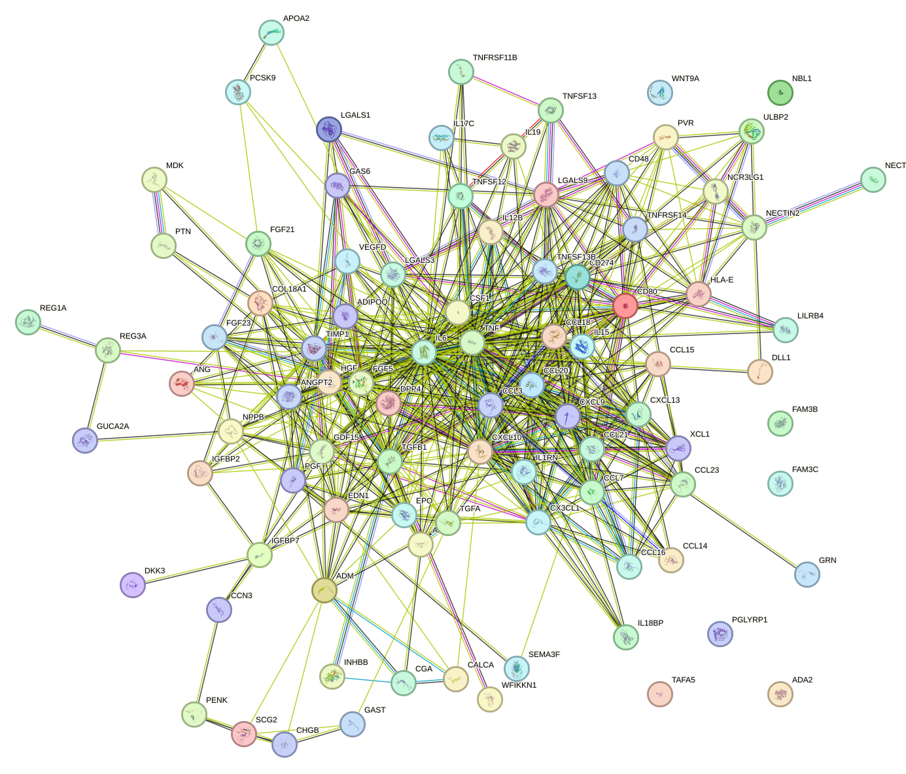
With this network context in mind, the enriched proteins can be considered individually to clarify how they may connect to arrhythmia related biology. During the function enrichment analysis, we identified serveral significant proteins. We will introduce them in-details in the following.
NPPB is among the most directly relevant proteins for arrhythmia because it is a canonical marker and mediator of myocardial wall stress, volume overload, and structural heart disease, all of which are major substrates for atrial and ventricular arrhythmogenesis. Its signaling through NPR1 and cGMP links it to myocardial relaxation, neurohumoral compensation, and suppression of maladaptive remodeling. The reported antifibrotic role is particularly important, since myocardial fibrosis promotes conduction heterogeneity, reentry, and maintenance of atrial fibrillation and other arrhythmias. In clinical contexts, elevated BNP/NPPB is strongly associated with heart failure, atrial stretch, and increased arrhythmia burden; thus, the function listed here is mechanistically aligned with both arrhythmia susceptibility and disease severity. [12] [13]
In a related vascular and remodeling context, VEGFA stands out because vascular integrity, endothelial signaling, and myocardial perfusion are highly relevant to arrhythmia pathogenesis. Impaired microvascular function and ischemia promote electrical instability, while excessive vascular permeability and remodeling may contribute to inflammation and tissue injury. The listed activation of AKT, MAPK, FAK, SRC, and nitric oxide pathways indicates broad effects on endothelial survival, vasodilation, and cytoskeletal dynamics, all of which can influence myocardial oxygen delivery and the inflammatory-remodeling milieu that predisposes to arrhythmia. In addition, abnormal VEGF signaling has been implicated in post-ischemic remodeling and atrial structural remodeling, both recognized mechanisms that facilitate atrial fibrillation and ventricular arrhythmias.
Extending this theme of stress adaptation and tissue protection, EPO is highly relevant to arrhythmia through several convergent mechanisms. First, its role in iron regulation is important because anemia and iron dysregulation can worsen myocardial oxygen supply-demand balance and increase the burden of heart failure-associated arrhythmias. Second, the direct cardiomyocyte-protective effect described here, namely suppression of apoptosis and inflammation via AKT signaling, is potentially anti-arrhythmic, as myocyte death and inflammatory injury create electrophysiological heterogeneity and fibrotic replacement. Third, EPO-responsive stress states often accompany systemic illness, ischemia, and remodeling, all major arrhythmogenic contexts. Thus, although EPO is not a classical ion-channel protein, its functions connect strongly to upstream disease mechanisms that influence arrhythmia susceptibility. [14] [15] [16] [17] [18] [19] [20]
Consistent with a role in injury response, MDK is a notable candidate for arrhythmia relevance because it sits at the intersection of inflammation, repair, angiogenesis, and post-injury remodeling. These processes are central determinants of arrhythmogenic substrate formation after myocardial damage. The description specifically notes roles after heart damage, including promotion of cell survival through MAPK and AKT signaling and modulation of inflammatory-cell recruitment, which are highly pertinent to scar formation, electrical uncoupling, and adverse remodeling. Its effects on endothelial VEGFA expression and nitric oxide signaling further connect it to perfusion and vascular tone, both of which influence ischemia-related arrhythmogenesis. MDK may therefore contribute to either adaptive repair or maladaptive remodeling depending on context. [21] [22] [23] [24] [25] [26] [27] [28] [29] [30]
From the standpoint of upstream cardiovascular risk, PCSK9 is relevant to arrhythmia primarily through its major effects on lipid metabolism and atherosclerotic cardiovascular disease, which are foundational drivers of ischemic heart disease and subsequent ventricular arrhythmias. By promoting degradation of LDLR family receptors, PCSK9 contributes to elevated LDL cholesterol and a pro-atherogenic state. Ischemia, infarction, and scar formation are among the strongest substrates for malignant arrhythmias. Additionally, the reported influence on ENaC-mediated sodium handling raises a plausible connection to systemic electrolyte and volume regulation, both of which can modulate arrhythmia risk indirectly. Although the strongest mechanistic link is upstream through coronary disease and remodeling rather than direct electrophysiology, PCSK9 remains one of the more clinically meaningful proteins in this list for arrhythmia-associated cardiovascular risk. [31] [32] [33] [34] [35] [36]
In a similar upstream cardiometabolic framework, APOA2 is of interest because HDL metabolism influences systemic cardiometabolic risk, vascular inflammation, and atherosclerosis, all of which indirectly affect arrhythmia susceptibility. While the function provided is relatively limited and does not indicate a direct electrophysiological role, disturbances in lipoprotein homeostasis are strongly linked to coronary artery disease, atrial remodeling, and heart failure. Therefore, APOA2 is best interpreted as an upstream modifier of the cardiovascular milieu rather than a direct arrhythmia effector. Its relevance would be greatest in ischemia-associated arrhythmia and cardiometabolic forms of atrial fibrillation.
The next group of proteins further emphasizes the importance of immune regulation in arrhythmia associated remodeling. LGALS1 is potentially important in arrhythmia because immune activation and inflammatory-cell polarization are increasingly recognized as major contributors to atrial and ventricular remodeling. The listed capacity to regulate apoptosis and suppress specific T-cell programs suggests that LGALS1 may shape the inflammatory environment that determines fibrosis, myocyte injury, and conduction heterogeneity. Its strong immunomodulatory effects, including induction of T-cell apoptosis and suppression of Th17 differentiation, are especially relevant because inflammatory cytokine networks are implicated in atrial fibrillation initiation and persistence. Thus, LGALS1 may function as a modifier of arrhythmogenic inflammation rather than as a direct determinant of ion-channel activity. [37]
Along the same inflammatory axis, IL17C is relevant because inflammation is a well-established driver of arrhythmia, especially atrial fibrillation. The ability of IL17C to activate NF-kappa-B and MAPK pathways and amplify pro-inflammatory programs places it within signaling axes that can promote tissue injury, fibroblast activation, and electrical remodeling. Although the function described is centered on epithelial immunity, the broader principle is that persistent cytokine activation contributes to systemic and local inflammatory states that can affect the myocardium. Therefore, IL17C may be considered a plausible upstream inflammatory mediator in arrhythmogenesis, particularly in patients with chronic inflammatory or autoimmune disorders.
By contrast, IL19 stands out as a potentially protective immunoregulatory factor in arrhythmia-related disease. Its anti-inflammatory activity and ability to shift adaptive immunity toward a Th2 phenotype could mitigate the inflammatory remodeling that supports atrial and ventricular arrhythmias. The proangiogenic component may also influence tissue repair and perfusion after injury. Because STAT3 signaling has major roles in survival, inflammation, and remodeling, IL19 may participate in compensatory responses that alter arrhythmogenic substrate formation. While evidence from the function provided is indirect, IL19 plausibly modulates the balance between damaging inflammation and reparative remodeling in cardiovascular disease. [38] [39] [40] [41]
This interplay between inflammation and cellular stress is also reflected in TNFRSF11B. TNFRSF11B is noteworthy because the mechanisms listed, including intracellular calcium oscillations, NFAT activation, mitochondrial ROS generation, and immune-cell crosstalk, are all conceptually relevant to arrhythmia biology. Calcium mishandling and oxidative stress are central drivers of triggered activity and electrical instability in cardiomyocytes, while immune activation contributes to structural remodeling. Although the described function is in osteoclast biology, these pathways overlap strongly with known arrhythmogenic mechanisms. Accordingly, TNFRSF11B may represent an indirect but biologically interesting link between inflammatory signaling, oxidative stress, calcium-dependent transcriptional programs, and cardiovascular remodeling. [42]
At a broader systemic level, FGF23/Klotho-related biology is potentially meaningful for arrhythmia because aging, metabolic dysregulation, and chronic kidney-cardiovascular interactions are major determinants of atrial fibrillation and conduction disease. Although the function provided is brief and focused on anti-aging endocrine effects, Klotho deficiency and FGF-axis perturbation have been associated in broader literature with cardiac hypertrophy, fibrosis, and electrophysiological vulnerability. From the information given here, the most relevant interpretation is that this pathway may modify systemic aging and metabolic stress, thereby influencing the substrate on which arrhythmias develop.
Returning to more direct neurohumoral control, ADA2 is directly relevant to arrhythmia because adrenergic signaling is a major regulator of heart rate, conduction, refractoriness, and triggered activity. Although alpha-2 adrenergic signaling is generally inhibitory at the level of adenylate cyclase, it participates in the broader autonomic balance that shapes arrhythmia susceptibility. Excess catecholaminergic drive is a classic trigger for both atrial and ventricular arrhythmias, and proteins that regulate cyclic AMP signaling can influence calcium handling and excitability. Therefore, ADA2 is mechanistically important as part of the neurohumoral framework governing arrhythmogenesis, even if its effects may be context-dependent and indirect relative to canonical cardiac ion channels.
Finally, GDF15 is relevant to arrhythmia as a systemic stress-response marker and mediator. Elevated GDF15 is widely associated with cardiovascular disease severity, inflammation, frailty, and adverse outcomes, including in patients with atrial fibrillation. The functions listed here emphasize its activation by diverse stresses, including cancer and drugs, and its coupling to MAPK and AKT signaling. Although the described biology is centered on brainstem-mediated aversive responses and metabolism, GDF15 can be interpreted as a biomarker of the systemic stress and inflammatory burden that often accompanies arrhythmogenic heart disease. Its value may therefore be greater for risk stratification than for direct mechanistic causation. [43] [44] [45] [46] [47] [48] [49] [50] [51] [52] [53] [54] [55]
Beyond individual proteins, the retained network also suggests the presence of smaller coordinated functional groupings. There are also small set of proteins function together to form a cluster. The functional composition of the cluster indicates a coordinated program of immune cell trafficking, inflammatory signal propagation, and vascular adaptation. Multiple chemokines in the cluster promote selective recruitment of lymphocytes, dendritic cells, monocytes, neutrophils, and NK cells, including XCL1, CCL18, CCL20, CCL21, CCL23, CXCL9, CXCL10, and CXCL13, while IL15 supports proliferation and activation of NK cells, T cells, and B cells through JAK1/JAK3-STAT3/STAT5 signaling. TNF and IL6 occupy hub positions in the retained network, with degrees 18 and 17, respectively, consistent with their role as central inflammatory amplifiers. Their high-confidence association, with score 0.994, and the linked edges CCL3-TNF, CCL3-IL6, CXCL10-TNF, CXCL10-IL6, and IL6-TGFB1 suggest a tightly connected cytokine-chemokine axis under the current STRING-derived retained-edge criteria. Immune regulation is further represented by CD80-mediated T-cell costimulation, CD274/PDCD1-mediated inhibitory signaling, TNFRSF14-mediated context-dependent stimulatory and inhibitory lymphocyte signaling, PVR/NECTIN2/NCR3LG1-mediated NK-cell and cytotoxic lymphocyte responses, and LILRB4-associated phosphatase-dependent suppression of immune signaling. In parallel, the cluster contains vascular and tissue-remodeling factors, including EDN1, ANGPT2/TEK-axis biology, VEGFD/FLT4 signaling, HGF-MET activation, ADM, TIMP1, GAS6, and TGFB1, indicating coupling between inflammation and endothelial, stromal, and matrix responses. Such a program is plausibly relevant to arrhythmia because inflammatory cytokines and chemokines can promote leukocyte recruitment into cardiac tissue, sustain cytokine production, and alter vascular and extracellular matrix homeostasis, thereby favoring structural and electrophysiological remodeling. In particular, EDN1-driven vascular wall remodeling via ROCK/NFATC3/ACTA2 signaling, IL6 trans-signaling with pro-inflammatory and VEGF-inducing properties, TNF-centered inflammatory amplification, TGFB1-associated cell death regulation, and TIMP1-linked matrix regulation together support mechanisms that could contribute to myocardial inflammation, fibrosis-like remodeling, microvascular dysfunction, and disturbed cell-cell signaling, all of which are processes commonly associated with arrhythmogenic substrate formation. The network evidence is substantial for a unified inflammatory module because all 49 proteins lie in a single connected component with 109 retained high-confidence associations and a mean score of 0.87, but the STRING-based associations should be interpreted as high-confidence functional relationships and not uniformly as direct physical binding unless physical evidence is explicitly included for a given pair. [56] [57] [58] [59] [60] [61] [62] [63] [64] [65] [66] [67] [68] [69] [70] [71] [72] [73] [74] [75] [76] [77] [78] [79] [80] [81] [82] [83] [84] [85] [86] [87] [88] [89] [90] [91] [92] [93] [94] [95] [96] [97] [98] [99] [100] [101] [102] [103] [104] [105] [106] [107] [108] [109] [110] [111] [112] [113] [114] [115] [116] [117] [118] [119] [120] [121] [122] [123] [124] [125]
A smaller and more self-contained example of such organization is the CHGB and SCG2 pair. CHGB (secretogranin-1) is a neuroendocrine secretory granule protein that may serve as a precursor for biologically active peptides, while SCG2 is a granin-family neuroendocrine protein that regulates secretory granule biogenesis. Together, these annotations support a shared role in the formation and functional content of neuroendocrine secretory granules. The network evidence indicates that the two proteins form a single connected component with one retained high-confidence association, CHGB-SCG2 with score 0.986, and both proteins have equal degree within this small cluster, with degree 1 each. However, the retained evidence is based on STRING functional association and text mining, so this should be interpreted as strong functional relatedness rather than direct physical binding. In the context of arrhythmia, a neuroendocrine secretory granule module could be relevant because altered granule biogenesis or peptide precursor handling may influence the production or release of bioactive secretory factors that modulate cardiac excitability, autonomic signaling, or myocardial electrophysiology. Thus, dysregulation of this cluster could plausibly contribute to arrhythmic susceptibility through disturbed neuroendocrine secretory function. Because the cluster contains only two proteins and one retained association under the current high-confidence criteria, the network evidence is limited but internally coherent.
Spinal cord injury is a traumatic or ischemic insult to the spinal cord that initiates an immediate primary lesion followed by a prolonged secondary injury cascade involving neuronal death, axonal disruption, inflammation, vascular dysregulation, and remodeling of descending autonomic pathways. Beyond motor and sensory impairment, spinal cord injury is also a major disorder of cardiovascular autonomic control because supraspinal regulation of sympathetic outflow is frequently interrupted, especially when the lesion is located at or above the upper thoracic segments. This disconnection alters the balance between sympathetic and parasympathetic influences on the heart and vasculature, impairs baroreflex function, destabilizes blood pressure regulation, and predisposes patients to episodic autonomic dysreflexia triggered by sensory stimuli below the lesion. Clinical and experimental studies further show that spinal cord injury can produce persistent abnormalities in heart rate variability, blood pressure variability, and electrocardiographic markers of repolarization instability, suggesting that the spinal cord is not only a conduit for somatic signaling but also a critical integrator of cardiovascular autonomic homeostasis. In this context, the pathway is highly relevant to arrhythmia because injury-induced disruption of spinal autonomic circuits may create a substrate in which reflex sympathetic surges, vagal predominance at rest, impaired cardiovascular compensation, and exposure to adrenergic drugs or procedural stimuli can provoke both atrial and ventricular rhythm disturbances. [126] [127] [128] [129] [130] [131] [132] [133] [134]
Building on this physiological framework, the collected literature supports a strong mechanistic and clinical link between spinal cord injury and arrhythmia through disruption of autonomic cardiovascular regulation. Experimental work shows that high thoracic injury reduces sympathetic control and shifts the heart toward autonomic imbalance, evidenced by reduced low frequency heart rate variability, increased high frequency dominance, and pharmacologically confirmed disturbance of sympathetic and vagal control. In this setting, autonomic dysreflexia induced by colorectal distention triggered severe arrhythmic events, and beta one adrenergic stimulation with dobutamine further increased arrhythmia incidence, particularly after high-level injury rather than lower thoracic injury. These findings suggest that interruption of descending sympathetic pathways creates an arrhythmogenic substrate that may become especially dangerous during sympathetic activation or mixed autonomic reflexes. Human studies are concordant, showing that the risk of arrhythmia rises immediately after traumatic spinal cord injury and remains elevated through the acute phase, especially in individuals with quantitatively defined autonomically complete lesions characterized by markedly reduced low frequency blood pressure variability and impaired baroreflex function. In chronic disease, urodynamics testing, a common clinical procedure, provokes marked autonomic dysreflexia with paroxysmal hypertension and heart rate slowing while simultaneously increasing electrocardiographic markers of both atrial and ventricular arrhythmia, with the greatest effects in autonomically complete injuries. This observation suggests that routine visceral stimulation can acutely unmask arrhythmic vulnerability in this population. Clinical observations also document persistent bradycardia months after injury and rare but severe malignant ventricular events, including polymorphic ventricular tachycardia and ventricular fibrillation after acute cervical injury, underscoring that the phenotype ranges from chronic rhythm slowing to life-threatening ventricular instability. Therapeutic and management studies further reinforce this relationship by showing that interventions influencing autonomic tone can modify arrhythmic risk: passive hindlimb cycling reduced the worsening of arrhythmia markers during adrenergic challenge, epidural spinal cord stimulation did not increase arrhythmia burden during tilt testing, and dexmedetomidine-induced pharmacological hypothermia after injury was reported to occur without arrhythmia, whereas vasopressor therapy in acute spinal cord injury is recognized to carry arrhythmic risk and therefore requires careful selection and monitoring. Collectively, these findings suggest that spinal cord injury contributes to arrhythmia by producing chronic autonomic disequilibrium, impaired reflex buffering, exaggerated cardiovascular responses to noxious or procedural stimuli, and heightened sensitivity to sympathetic provocation. [126] [127] [128] [129] [130] [131] [132] [133] [134]
To complement the clinical and mechanistic literature, the enrichment results provide a network-level view of the proteins associated with this pathway. There were 20 arrhythmia-associated proteins significantly enriched in the pathway describing spinal cord injury as a traumatic or ischemic insult to the spinal cord that progresses from an immediate primary lesion to a prolonged secondary cascade involving neuronal death, axonal disruption, inflammation, vascular dysregulation, and remodeling of descending autonomic pathways. This enrichment appears biologically relevant to arrhythmia because disruption of spinal autonomic regulation may destabilize cardiovascular homeostasis and increase susceptibility to both atrial and ventricular rhythm disturbances.
Consistent with this interpretation, the retained protein-protein interaction network contained 32 high-confidence edges among 20 proteins, with 16 proteins remaining connected and a mean retained interaction score of 0.908, indicating a dense and high-confidence functional association structure within the enriched set. The most connected proteins were matrix metallopeptidase 9 with degree 9 and weighted score 7.703, interleukin 6 with degree 8 and weighted score 7.564, tumor necrosis factor with degree 8 and weighted score 7.555, epidermal growth factor receptor with degree 6 and weighted score 5.512, and intercellular adhesion molecule 1 with degree 6 and weighted score 5.228. The strongest retained protein pairs further support an inflammatory and remodeling-centered network architecture, including interleukin 1 receptor type 1 with interleukin 6 at score 0.997, interleukin 1 receptor type 1 with tumor necrosis factor at score 0.996, interleukin 6 with tumor necrosis factor at score 0.994, epidermal growth factor receptor with interleukin 6 at score 0.979, and epidermal growth factor receptor with transforming growth factor beta 1 at score 0.975. Four proteins, namely matrix metallopeptidase 12, nitric oxide synthase 1, oligodendrocyte myelin glycoprotein, and phospholipase A2 group IIA, had no retained edges under the current high-confidence criteria.
To visualize these relationships more directly, we include the protein-protein interaction network below together with the interactive STRING network page.
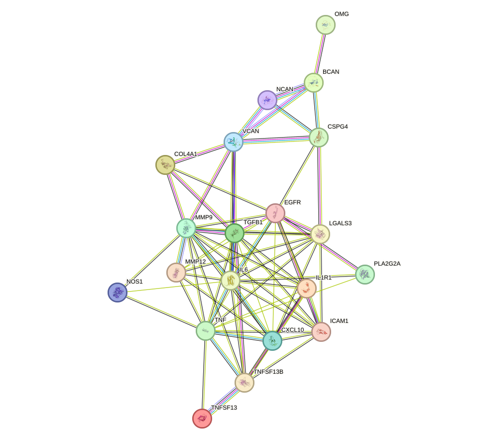
With this network context in place, the function enrichment analysis highlights several proteins that may be particularly relevant. We introduce them in detail below.
Among the listed proteins, NOS1 has the clearest and most direct mechanistic relevance to arrhythmia. Nitric oxide is a major regulator of cardiovascular electrophysiology, excitation-contraction coupling, and autonomic signaling. Through nitric oxide production and probable nitrosylase activity, NOS1 can modify the function of ion channels and calcium-handling proteins via S-nitrosylation, thereby influencing action potential formation, calcium cycling, and myocardial refractoriness. These processes are central to arrhythmogenesis because abnormal intracellular calcium release, triggered activity, and altered conduction are well-established substrates for both atrial and ventricular arrhythmias. In addition, the neurotransmitter-like role of nitric oxide suggests that NOS1 may affect neurocardiac regulation, which is highly relevant because autonomic imbalance is a major contributor to arrhythmic susceptibility. Thus, NOS1 stands out as a protein whose annotated signaling functions map directly onto core disease mechanisms underlying arrhythmia.
In parallel, PLA2G2A appears highly relevant to arrhythmia because it connects inflammation, membrane lipid remodeling, and bioactive lipid generation, all of which can influence cardiac electrical stability. Its ability to liberate arachidonate and promote downstream eicosanoid synthesis is particularly important, as inflammatory lipid mediators can alter ion channel behavior, calcium homeostasis, and myocardial excitability either directly or indirectly through inflammatory signaling. The annotation further indicates that PLA2G2A targets extracellular mitochondria released during sterile inflammation, amplifying damage-associated molecular pattern signaling and innate immune activation; such inflammatory amplification may contribute to atrial or ventricular remodeling, which is a recognized substrate for arrhythmia. In addition, phospholipid remodeling can affect membrane composition and thereby modulate the function of membrane proteins, including ion channels and receptors. Its integrin-activating activity may also be relevant because integrin signaling contributes to structural remodeling, cell survival, and fibrosis, all of which can promote conduction heterogeneity and re-entry. Therefore, PLA2G2A stands out as an indirect but potentially important arrhythmia-linked factor through inflammation-driven electrical and structural remodeling. [135] [136] [137] [138]
A related but more structurally oriented candidate is MMP12, which is potentially relevant to arrhythmia primarily through its role in extracellular matrix turnover and tissue remodeling. Structural remodeling of the myocardium, including fibrosis, matrix degradation, and altered tissue elasticity, is a major determinant of arrhythmogenic substrate because it disrupts electrical coupling and promotes conduction slowing and heterogeneity. The strong elastolytic and remodeling functions of MMP12 suggest that it could contribute to pathological changes in myocardial architecture or vascular tissue integrity under inflammatory or injury conditions. Although the annotation does not specifically describe a cardiac role, proteins involved in tissue injury and remodeling are often implicated in the development of arrhythmia through promotion of fibrosis, scar formation, and adverse chamber remodeling, especially in settings such as heart failure or post-inflammatory injury. Accordingly, MMP12 is best viewed as a plausible contributor to arrhythmia susceptibility through structural rather than direct electrophysiological mechanisms.
By comparison, OMG is less directly connected to arrhythmia than NOS1 or PLA2G2A, but it may still be of interest because of its role in neuronal signaling and cytoskeletal regulation. Cardiac rhythm is strongly influenced by autonomic neural inputs, and molecules that regulate neuronal development, plasticity, and survival can in principle affect neurocardiac communication. The annotation indicates that OMG participates in receptor-mediated signaling through NGFR, activates Rho signaling, and regulates neuronal precursor motility and axonal growth inhibition. These functions are more clearly linked to central nervous system development and neuronal architecture than to canonical cardiac arrhythmia mechanisms. Nevertheless, because autonomic remodeling can contribute to arrhythmogenesis, OMG may have a speculative and indirect relevance through neural circuit organization rather than through direct effects on cardiomyocyte electrophysiology. Overall, OMG is not a leading arrhythmia candidate in this list, but its neurobiological functions make it a secondary protein of potential interest. [139] [140] [141] [142] [143] [144] [145] [146] [147] [148]
Beyond these individually discussed proteins, there is also a small set of proteins that function together to form a cluster. The network structure supports a coherent inflammatory signaling program with strong internal connectivity, with 16 connected proteins, 32 retained high-confidence associations, and a mean retained protein-protein interaction score of 0.908. The principal hubs are MMP9 with degree 9, IL6 with degree 8, TNF with degree 8, EGFR with degree 6, and ICAM1 with degree 6, indicating that inflammatory signaling and matrix remodeling are central features of the cluster. The highest-scoring associations link IL1R1 with IL6 at 0.997 and TNF at 0.996, and IL6 with TNF at 0.994, consistent with a tightly coordinated cytokine module; however, these STRING-based associations should be interpreted as high-confidence functional relationships and not necessarily direct physical interactions unless physical evidence is explicitly indicated. Functionally, IL6 trans-signaling is described as pro-inflammatory and capable of extending IL6 responsiveness to cells lacking membrane IL6R, while TNF and CXCL10 promote immune-cell chemotaxis and inflammatory activation. ICAM1 further supports inflammatory cell interactions, and LGALS3 contributes to acute inflammatory responses including neutrophil activation, monocyte or macrophage chemoattraction, and mast-cell activation. In parallel, MMP9 has a prominent role in elastic fiber formation, collagen fibril assembly, elastin deposition, and smooth muscle cell maturation, thereby contributing to tissue mechanical properties and structural integrity. TGFB1 and EGFR add growth factor-linked regulatory inputs, and their strong network association with IL6 and MMP9 suggests integration of inflammatory and remodeling programs. The proteoglycans VCAN, NCAN, BCAN, and CSPG4, together with COL4A1, indicate an extracellular matrix and cell-adhesion context involving hyaluronic acid binding, intercellular signaling, and regulation of cell motility. In relation to arrhythmia, this cluster may contribute through two broad mechanisms inferred from the supplied functions. First, a pro-inflammatory milieu driven by IL6, TNF, CXCL10, ICAM1, and LGALS3 may promote immune-cell recruitment, cytokine amplification, and tissue stress. Second, MMP9-, TGFB1-, CSPG4-, VCAN-, and COL4A1-linked extracellular matrix remodeling may alter tissue architecture, mechanical integrity, and cell-matrix coupling. Such combined inflammatory and structural changes are plausibly relevant to arrhythmogenic remodeling because they can perturb the myocardial microenvironment, favor abnormal impulse propagation, and support substrate formation for rhythm instability. The presence of neuronal-associated proteins such as IL1R1, NCAN, and BCAN also suggests a neuroinflammatory or neuromodulatory component, which may be relevant insofar as altered inflammatory-neuronal signaling can influence excitability. Overall, the cluster is most consistent with an inflammation-coupled matrix-remodeling network that could contribute to arrhythmia by fostering structural and signaling conditions permissive for electrical instability. [149] [150] [151] [152] [91] [92] [93] [94] [95] [115] [114]
Post-translational protein phosphorylation is a reversible regulatory process in which phosphate groups are added to specific amino acid residues of proteins after translation, most commonly serine, threonine, or tyrosine. This modification is catalyzed by protein kinases and reversed by protein phosphatases, allowing rapid and spatially restricted control of protein conformation, enzymatic activity, intermolecular binding, intracellular trafficking, membrane localization, stability, and degradation. In the heart, post-translational protein phosphorylation is a central mechanism linking neurohumoral stimulation, calcium signaling, metabolic stress, and redox state to the behavior of ion channels, calcium-release channels, calcium-entry pathways, gap junction proteins, and contractile machinery. Through these effects, phosphorylation governs action potential initiation, impulse propagation, excitation-contraction coupling, repolarization, and adaptation to stress. The publications provided indicate that this pathway is particularly important in the regulation of cardiac sodium channels, ryanodine receptor type 2, L-type calcium channels, and connexin 43, all of which are major determinants of electrical stability. They also show that the arrhythmogenic consequences of phosphorylation depend not only on the modified protein itself, but also on the local structural context, such as axial tubule to sarcoplasmic reticulum junctions, the intercalated disc, and microtubule-dependent trafficking systems. In addition, the pathway interacts with other post-translational modifications, especially O-linked N-acetylglucosamine modification and oxidation, which can sustain kinase signaling or alter phosphorylation balance in disease states such as heart failure, diabetes, ischemia reperfusion injury, hypertrophy, and muscular dystrophy-related cardiomyopathy. [153] [154] [155] [156] [157] [158] [159] [160] [161] [162] [163] [164] [165] [166] [167] [168] [169]
Against this broad biological background, the collected studies support a strong mechanistic link between post-translational protein phosphorylation and arrhythmia because phosphorylation remodels the cardiac proteins that control excitability, conduction, and intracellular calcium homeostasis. A major theme is pathological activation of calcium and calmodulin dependent protein kinase two, which enhances late sodium current through phosphorylation of the cardiac sodium channel alpha subunit at serine five hundred seventy one, thereby prolonging repolarization, disturbing intracellular calcium handling, and increasing susceptibility to arrhythmia in vivo; the same modification is also required for maladaptive remodeling during pressure overload, directly connecting phosphorylation to acquired electrical disease [157] [155]. A second major mechanism involves phosphorylation of ryanodine receptor type 2, the sarcoplasmic reticulum calcium release channel. Multiple articles indicate that altered phosphorylation of this channel changes channel open probability and promotes diastolic sarcoplasmic reticulum calcium leak, which can trigger delayed afterdepolarizations and ventricular arrhythmias, although the precise contribution of individual phosphorylation sites remains debated [156] [169]. This concept is reinforced by the observation that atrial axial tubule to sarcoplasmic reticulum junctions are enriched in highly phosphorylated ryanodine receptor type 2 clusters, accelerating central calcium release and contraction, while phosphorylation-incompetent ryanodine receptor type 2 depresses atrial mechanical performance; in hypertrophied atria, expansion of these highly phosphorylated signaling hubs may preserve calcium release but may also create a substrate for atrial arrhythmogenesis [153]. Phosphorylation also influences conduction by regulating connexin 43, the principal ventricular gap junction protein. Proper phosphorylation of connexin 43 carboxyl-terminal serines three hundred twenty five, three hundred twenty eight, and three hundred thirty supports intercalated disc localization and interaction with microtubules, whereas loss of this phosphorylation promotes connexin 43 remodeling, impaired gap junction organization, fibrosis, and stress-induced arrhythmias in dystrophic hearts; conversely, phosphomimetic connexin 43 is protective [154] [160]. Additional evidence indicates that altered connexin 43 phosphorylation can be induced by histone deacetylase inhibition, reducing electrical coupling and potentially favoring conduction abnormalities [163]. Phosphorylation of the L-type calcium channel at serine one thousand seven hundred is also essential for basal calcium influx and beta-adrenergic responsiveness, and disruption of this regulatory site leads to impaired physiological reserve and hypertrophic remodeling, changes that can indirectly increase arrhythmic vulnerability by destabilizing excitation-contraction coupling under stress [159]. In atrial fibrillation specifically, broader reviews emphasize that abnormal phosphorylation and dephosphorylation of ion channels, calcium-handling proteins, and contractile proteins are pervasive components of atrial remodeling, highlighting the importance of phosphatase imbalance as well as kinase activation in sustaining the arrhythmic state [164] [167]. Finally, several studies show that phosphorylation-dependent arrhythmia mechanisms are amplified by other disease-associated post-translational modifications, especially O-linked N-acetylglucosamine modification and oxidation, which can activate calcium and calmodulin dependent protein kinase two, blunt protective kinase signaling such as protein kinase B phosphorylation, and worsen ischemia reperfusion and diabetic proarrhythmic phenotypes [158] [162] [161] [165] [166] [168]. Taken together, these publications indicate that post-translational protein phosphorylation is not a peripheral feature of arrhythmia biology but a core integrative pathway that converts hemodynamic stress, adrenergic drive, metabolic disease, and structural remodeling into abnormal impulse generation, defective conduction, and triggered calcium-dependent electrical instability. [153] [154] [155] [156] [157] [158] [159] [160] [161] [162] [163] [164] [165] [166] [167] [168] [169]
To complement these mechanistic observations, the enrichment results provide a quantitative view of how broadly this pathway may intersect with arrhythmia-associated biology. There were 28 arrhythmia-associated proteins significantly enriched in the pathway of post-translational protein phosphorylation, highlighting a quantitatively substantial functional module linking phosphorylation-dependent regulation to electrical instability in the heart. Given the central role of phosphorylation in controlling ion-channel behavior, calcium handling, intercellular coupling, intracellular trafficking, and stress adaptation, the enrichment of 28 proteins supports the relevance of this pathway to arrhythmia biology.
A network-level summary further helps place this enriched set into structural context. Within this 28-protein set, 5 high-confidence protein-protein interaction edges were retained, connecting 8 proteins, with a mean retained interaction score of 0.901, indicating strong overall confidence for the subset of associations that met the current filtering criteria. Network connectivity was sparse, because 20 of 28 proteins, corresponding to 71.4 percent, had no retained edges, whereas 8 of 28 proteins, corresponding to 28.6 percent, formed 3 connected components. The highest-degree proteins were interleukin 6 and tissue inhibitor of metalloproteinases 1, each with degree 2, with weighted scores of 1.765 and 1.719, respectively, followed by chromogranin B and secretogranin 2, each with degree 1 and weighted scores of 0.986, and insulin-like growth factor binding protein 1 with degree 1 and a weighted score of 0.972. At the component level, the largest connected group contained 4 proteins and 3 edges with a mean score of 0.849, comprising colony stimulating factor 1, interleukin 6, secreted phosphoprotein 1, and tissue inhibitor of metalloproteinases 1, while 2 additional 2-protein components were defined by chromogranin B with secretogranin 2 at a score of 0.986 and insulin-like growth factor binding protein 1 with insulin-like growth factor binding protein 4 at a score of 0.972. The top retained protein pairs were chromogranin B with secretogranin 2 at 0.986, insulin-like growth factor binding protein 1 with insulin-like growth factor binding protein 4 at 0.972, interleukin 6 with tissue inhibitor of metalloproteinases 1 at 0.938, colony stimulating factor 1 with interleukin 6 at 0.827, and secreted phosphoprotein 1 with tissue inhibitor of metalloproteinases 1 at 0.781; these should be interpreted as high-confidence associations rather than over-stated direct physical binding in the absence of evidence type support.
With this quantitative framework in place, we include the protein-protein interaction network visualization below, together with the Search Tool for the Retrieval of Interacting Genes and Proteins webpage for interactive inspection of the retained associations.
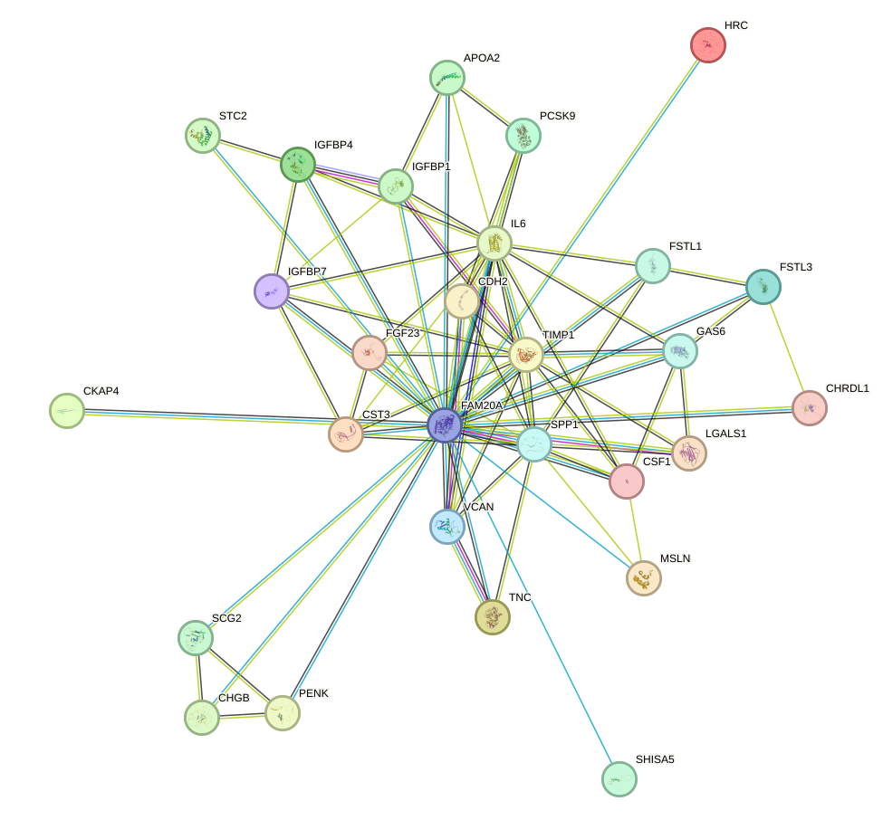
Building on the pathway- and network-level observations, the function enrichment analysis highlighted several proteins that may warrant closer consideration. During the function enrichment analysis, we identified serveral significant proteins. We will introduce them in-details in the following.
CDH2 (N-cadherin) is among the most compelling proteins in this list with potential relevance to arrhythmia because cardiac rhythm critically depends on intact intercellular coupling within the myocardium. Although the functional description provided emphasizes neural and stem-cell contexts, the core biology of CDH2 is cell-cell adhesion, a process directly relevant to the maintenance of intercalated discs in cardiomyocytes. Disruption of adhesion complexes can destabilize electrical and mechanical coupling, thereby promoting conduction heterogeneity, slowed impulse propagation, and reentry, all of which are central mechanisms of arrhythmogenesis. The cited evidence that CDH2 regulates junction formation and cellular anchorage supports the broader concept that altered cadherin-dependent adhesion could contribute to structural remodeling and electrical uncoupling in diseased myocardium. Thus, CDH2 stands out as a plausible arrhythmia-linked protein through its likely influence on myocardial tissue integrity and conduction stability. [170] [171] [172] [173] [174] [175] [176]
A related but distinct theme involves proteins that may influence remodeling, survival, and the broader cardiovascular environment rather than directly modulating ion-channel phosphorylation.
GAS6 is highly relevant to arrhythmia because it integrates several processes that contribute to arrhythmogenic substrate formation, including cell survival signaling, vascular homeostasis, and thrombosis. GAS6/AXL signaling promotes endothelial survival and modulates thrombotic responses, which is particularly important in arrhythmia syndromes such as atrial fibrillation where endothelial dysfunction, inflammation, and thromboembolism are major clinical features. In addition, pro-survival and migratory signaling may influence cardiac remodeling after injury, thereby affecting fibrosis, chamber dilation, and conduction abnormalities. The cited functions in platelet activation and thrombotic regulation make GAS6 especially notable as a candidate connecting electrical disease with its vascular and embolic complications. Accordingly, GAS6 may be relevant both to arrhythmia pathogenesis and to downstream adverse outcomes associated with rhythm disorders.
Within this same remodeling and survival-oriented context, insulin-like growth factor binding proteins may be of particular interest.
IGFBP1 is of particular interest for arrhythmia because the provided function explicitly links it to cardiomyocyte apoptosis. Loss of viable cardiomyocytes contributes to fibrotic replacement, electrical discontinuity, and heterogeneous conduction, which are classic substrates for both atrial and ventricular arrhythmias. In addition, IGFBP1 modulates IGF signaling, a pathway deeply involved in myocardial growth, stress adaptation, and survival. Its ability to engage integrin-mediated focal adhesion kinase and MAPK signaling further suggests a role in structural remodeling and mechano-electrical interactions within the heart. The cited anti-apoptotic effect in cardiomyocytes supports a plausible mechanism whereby altered IGFBP1 activity could influence arrhythmia susceptibility by modulating myocardial injury responses and adverse remodeling.
A similar line of reasoning may also apply to proteins with combined effects on myocardial viability and vascular repair.
FSTL1 stands out because it has direct relevance to cardiac cell survival and vascular biology, both of which are integral to arrhythmia development. The cited observation that FSTL1 promotes survival of cardiac myocytes suggests a protective role against myocardial injury and loss of excitable tissue. In parallel, its effects on endothelial survival, migration, and differentiation imply a role in microvascular integrity and tissue repair. Since arrhythmias frequently emerge in the setting of inflammation, ischemia, fibrosis, or structural remodeling, a molecule that influences cardiomyocyte viability, angiogenesis, and immune signaling may substantially affect arrhythmogenic substrate formation. Therefore, FSTL1 may be mechanistically connected to arrhythmia through modulation of myocardial stress responses, tissue repair, and remodeling processes. [177] [178] [179]
From there, the analysis also extends to proteins whose relevance may arise more indirectly through cardiometabolic and ischemic pathways.
PCSK9 is highly relevant to arrhythmia from a cardiovascular disease perspective because it is a major regulator of cholesterol metabolism and LDL receptor turnover. While its canonical role is not electrophysiological, dyslipidemia and atherosclerotic cardiovascular disease are major upstream drivers of ischemic myocardial remodeling, which in turn promotes atrial and ventricular arrhythmias. The cited functions involving LDLR degradation and lipid homeostasis support a strong connection to coronary disease risk, myocardial infarction, and post-ischemic scar formation, all of which create arrhythmogenic substrates. In addition, the reported effects on ENaC surface expression raise the possibility of broader influences on ion and fluid balance, which may indirectly affect cardiovascular homeostasis. Thus, PCSK9 is important less as a direct ion-channel regulator and more as a determinant of the structural and ischemic milieu in which arrhythmias arise. [31] [32] [33] [34] [35] [36]
In parallel, several candidates appear to converge on inflammatory and immune-remodeling mechanisms that are increasingly discussed in arrhythmia biology.
LGALS1 is notable because inflammation and immune remodeling are increasingly recognized as important contributors to arrhythmia, especially atrial fibrillation. The protein's immunomodulatory functions, including regulation of T-cell apoptosis and Th17 differentiation, suggest that it could influence the inflammatory milieu that promotes atrial structural remodeling and fibrosis. Its broader roles in apoptosis and proliferation further support a potential impact on tissue remodeling after cardiac stress or injury. Although the provided description does not directly mention the heart, the cited immune-regulatory properties are highly relevant to arrhythmogenic mechanisms driven by chronic inflammation, fibro-inflammatory remodeling, and altered intercellular signaling within the myocardium. [37]
This inflammatory perspective is complemented by extracellular matrix-associated proteins that may shape tissue architecture and conduction properties.
TNC is one of the most plausible extracellular matrix-related candidates for arrhythmia relevance because matrix remodeling is a central determinant of conduction heterogeneity. Although the listed functions emphasize neural development and angiogenesis, the core properties of TNC as an extracellular matrix and integrin-binding protein strongly implicate it in tissue remodeling, cell-matrix signaling, and structural plasticity. In the heart, excessive extracellular matrix remodeling contributes to fibrosis, anisotropic conduction, and reentrant arrhythmia circuits. The cited angiogenic and migratory effects further indicate participation in injury responses and reparative remodeling. Therefore, TNC may be mechanistically linked to arrhythmia through regulation of the extracellular environment that governs impulse propagation and structural integrity of cardiac tissue. [180]
A closely related consideration applies to additional matrix-organizing proteins in the enriched set.
VCAN is relevant to arrhythmia because extracellular matrix composition is a major determinant of myocardial conduction properties. As a hyaluronan-binding proteoglycan involved in cell-matrix interactions and regulation of cell motility, growth, and differentiation, VCAN could contribute to structural remodeling and fibrotic changes in the heart. Such remodeling can separate cardiomyocyte bundles, alter anisotropic conduction, and facilitate reentrant circuits. Although the provided annotation is broad and does not include direct cardiac evidence, the matrix-organizing role of VCAN makes it a biologically credible contributor to arrhythmogenic substrate formation, particularly in disorders characterized by fibrosis or chamber remodeling.
In addition to matrix remodeling, vascular and reparative signaling may provide another indirect route by which enriched proteins influence arrhythmic susceptibility.
IGFBP7 is potentially relevant to arrhythmia because it combines effects on growth factor signaling, adhesion, vascular function, and angiogenesis. These processes are important in myocardial remodeling, endothelial health, and tissue repair. Its stimulation of prostacyclin production suggests potential effects on vascular tone, platelet biology, and endothelial protection, factors that may influence the broader cardiovascular environment associated with arrhythmia risk. Moreover, its adhesive and angiogenic functions imply a role in remodeling responses after cardiac stress. Although the link is less direct than for proteins affecting cardiomyocyte survival or cell-cell coupling, IGFBP7 remains a plausible modifier of arrhythmia susceptibility through vascular and structural mechanisms. [181]
A further layer of interpretation involves proteins that may affect calcium-dependent physiology more indirectly.
STC2 is noteworthy because calcium homeostasis is fundamental to cardiac excitation-contraction coupling and rhythm stability. Even though the annotation is concise, proteins that influence systemic or local calcium and phosphate balance may affect myocardial electrophysiology indirectly, particularly under pathological conditions. Disturbances in calcium handling are central to triggered activity, delayed afterdepolarizations, and abnormal automaticity. Therefore, STC2 may have a meaningful, if indirect, relationship to arrhythmia by influencing calcium-dependent processes relevant to cardiomyocyte electrical behavior and myocardial stability.
Finally, protease regulation and matrix turnover may offer an additional mechanism linking enriched proteins to structural substrate formation.
CST3 may be relevant to arrhythmia through its role in regulating protease activity and, by extension, tissue remodeling. Protease balance influences extracellular matrix turnover, inflammation, and fibrotic remodeling, all of which can alter cardiac conduction. Although the annotation does not directly connect CST3 to the heart, local control of cysteine protease activity could affect structural integrity and scar formation in diseased myocardium. This makes CST3 a plausible indirect contributor to arrhythmogenic substrate development, especially in settings where fibrosis and remodeling dominate disease progression.
Beyond individual proteins, the retained interaction network also suggests a small number of functionally grouped clusters that may help organize interpretation of the enriched set. There are also small set of proteins function together to form a cluster.The four-protein component (4 proteins, 3 retained edges; mean retained PPI score 0.849) suggests a compact but biologically coherent inflammatory network, although the evidence should be interpreted as high-confidence protein association rather than direct physical binding under the current STRING-derived retained-edge criteria. Functionally, IL6 contributes a potent pro-inflammatory axis through soluble IL6 receptor-mediated trans-signaling, which is described as causative for the pro-inflammatory properties of IL6 and important in chronic inflammatory disease [115], and in complex with IL6 is required for induction of VEGF production [114]. SPP1 further reinforces cytokine-driven immunity by enhancing interferon-gamma and interleukin-12 while reducing interleukin-10, thereby promoting type I immune responses. CSF1 adds a complementary arm involving survival, proliferation, and differentiation of mononuclear phagocytes, promotion of pro-inflammatory chemokine release, and activation of signaling pathways including ERK1/2, JNK, PI3K-AKT, SRC-family kinases, and STAT3/STAT5, all of which are relevant to inflammatory amplification. TIMP1 links this inflammatory program to extracellular matrix regulation by irreversibly inhibiting multiple metalloproteinases and by acting as a growth factor that regulates differentiation, migration, cell death, and integrin-associated signaling via CD63 and ITGB1. Taken together, the cluster indicates coordinated inflammatory activation, immune-cell support, and matrix-remodeling control. In relation to arrhythmia, these processes may contribute by promoting a pro-inflammatory tissue environment, altering matrix turnover and cell migration, and supporting remodeling signals that can disrupt normal cardiac structure-function relationships; the IL6-centered hub structure of the network, together with TIMP1-mediated control of metalloproteinases and CSF1-associated inflammatory signaling, is therefore compatible with mechanisms that may favor arrhythmogenic remodeling. However, because the retained network contains only three high-confidence associations in a single connected component, the network evidence remains limited under the current retained-edge criteria. [115] [114]
A second, smaller cluster points toward a different biological theme centered on regulated secretion and neuroendocrine function.
The functional annotation of both proteins supports a shared neuroendocrine secretory role. CHGB (secretogranin-1) is a neuroendocrine secretory granule protein that may serve as a precursor for biologically active peptides, whereas SCG2 is a granin-family neuroendocrine protein that regulates secretory granule biogenesis. Consistent with this common function, the two proteins form a single connected component of 2 proteins with 1 retained high-confidence association edge, and the retained CHGB-SCG2 link has a very high score (0.986). However, the supporting evidence is limited to STRING functional association and text mining, so this should be interpreted as strong functional relatedness rather than direct physical binding under the current retained-edge criteria. In the context of arrhythmia, a cluster involved in neuroendocrine granule formation and bioactive peptide production could be relevant because altered regulated secretion may influence the availability of signaling peptides that modulate cardiac excitability, autonomic tone, or myocardial stress responses. Thus, dysregulation of this secretory granule program may contribute indirectly to arrhythmic susceptibility through disturbed neuroendocrine signaling, although the current network evidence for this cluster is sparse and limited to this single high-confidence functional association.
Degradation of the extracellular matrix is a biological pathway that encompasses the proteolytic breakdown, turnover, and remodeling of the structural scaffold surrounding cells. In the heart, the extracellular matrix is composed primarily of collagens, fibronectin, laminins, proteoglycans, matricellular proteins, and associated adhesion systems that connect cardiomyocytes, fibroblasts, vascular cells, and immune cells to one another and to the interstitial environment. Under physiological conditions, extracellular matrix degradation is tightly balanced with extracellular matrix synthesis, allowing normal cardiac development, wound repair, force transmission, angiogenesis, and preservation of tissue architecture. This process is regulated by proteases such as matrix metalloproteinases and other extracellular proteolytic systems, together with their endogenous inhibitors, inflammatory mediators, transforming growth factor beta signaling, integrin-dependent mechanotransduction, and fibroblast activation states. In disease, excessive or misdirected extracellular matrix degradation can weaken structural integrity, alter collagen organization, disrupt cell to cell coupling domains, and trigger compensatory fibroblast activation with secondary fibrosis. Conversely, insufficient degradation can also promote pathological extracellular matrix accumulation. Thus, the pathway should be understood not simply as matrix loss, but as a dynamic remodeling program whose dysregulation changes myocardial stiffness, conduction anisotropy, mechanoelectrical signaling, and the spatial relationship between excitable cells and nonexcitable stromal cells. These consequences make extracellular matrix degradation a central determinant of the structural substrate that predisposes the atria and ventricles to arrhythmia. [8] [182] [183] [184] [185] [186] [9] [187] [188]
Building on this biological framework, the published literature collectively suggests that dysregulation of extracellular matrix degradation may contribute to arrhythmia by coupling inflammation, fibroblast activation, structural remodeling, and electrical instability. A key mechanistic theme is that inflammatory signaling may promote extracellular matrix remodeling and degradation, which in turn could alter conduction properties and create a substrate for reentry and triggered activity. In a human heart macrophage assembloid model, tissue resident macrophages regulated extracellular matrix remodeling and electrical conduction, and when shifted toward a proinflammatory state they promoted arrhythmogenic activity consistent with atrial fibrillation through activation of the nucleotide-binding oligomerization domain-like receptor family pyrin domain containing 3 inflammasome, directly linking immune driven matrix remodeling to arrhythmia generation [8]. This interpretation is further supported by a recent review indicating that inflammasome activation drives extracellular matrix remodeling, fibrosis, calcium mishandling, and conduction abnormalities across atrial and ventricular arrhythmias [186]. Human myocardial transcriptomic analysis at sudden cardiac death further showed that arrhythmic deaths were enriched for genes related to the collagen-containing extracellular matrix and activated fibrosis, suggesting that active matrix remodeling may be part of the vulnerable substrate for lethal arrhythmias [185]. Genetic evidence also supports this relationship, because loci influencing ventricular depolarization were enriched for connective tissue components and extracellular matrix interaction pathways, raising the possibility that inherited variation in matrix biology can shape conduction phenotypes associated with arrhythmic risk [183]. Experimental and review data in atrial fibrillation likewise place extracellular matrix turnover near the center of disease progression: fibroblast activation, transforming growth factor beta signaling, and imbalance between matrix metalloproteinases and their inhibitors remodel the extracellular matrix, promote interstitial fibrosis, and facilitate reentrant circuits [188] [187] [9]. Although some studies emphasize reduced extracellular matrix production rather than overt degradation, they still support the broader principle that disturbed matrix homeostasis may be proarrhythmic; for example, environmental toxicant exposure in zebrafish caused persistent impairment of extracellular matrix and collagen integrity together with worsened arrhythmias and calcium homeostasis abnormalities [182]. Additional evidence from hypertensive and pressure overload states indicates that disruption of extracellular matrix integrity is associated with abnormal topology of gap junction protein connexin forty three, myocardial fibrosis, and electrical instability, thereby providing a structural bridge between matrix remodeling and impaired impulse propagation [184]. Overall, the literature supports a cautious model in which abnormal extracellular matrix degradation, especially when driven by inflammation and protease activity, may destabilize myocardial architecture, perturb electromechanical coupling, stimulate profibrotic repair responses, and thereby help establish both the trigger and substrate for atrial and ventricular arrhythmias. [8] [182] [183] [184] [185] [186] [9] [187] [188]
To complement the literature-based interpretation, the function enrichment analysis provides a network-level view of how arrhythmia-associated proteins are organized within this pathway. A total of 26 arrhythmia-associated proteins were analyzed in the function enrichment analysis for degradation of the extracellular matrix, a remodeling pathway with direct relevance to myocardial structure, conduction properties, and the formation of a pro-arrhythmic substrate. Within this pathway-defined protein set, 35 high-confidence protein-protein interaction edges were retained, connecting 21 of 26 proteins, which corresponds to 80.8 percent network coverage, with a mean retained interaction score of 0.868, indicating overall strong support for the observed association structure. The most connected proteins were matrix metallopeptidase 9 and matrix metallopeptidase 3, each with degree 8 and weighted scores of 7.186 and 7.008, followed by tissue inhibitor of metallopeptidase 1 with degree 7 and weighted score 6.45, matrix metallopeptidase 7 with degree 7 and weighted score 5.977, and secreted phosphoprotein 1 with degree 5 and weighted score 4.434. Network organization was dominated by a principal connected component containing 18 proteins and 33 edges with a mean score of 0.869, while a smaller 3-protein component contained 2 edges with a mean score of 0.856; 5 proteins, namely ADAM metallopeptidase domain 8, ADAM metallopeptidase domain 9, collagen type 9 alpha 1 chain, elastin, and serine protease 2, had no retained edges under the current high-confidence criteria. Among the strongest retained associations were matrix metallopeptidase 3 with tissue inhibitor of metallopeptidase 1 and matrix metallopeptidase 9 with tissue inhibitor of metallopeptidase 1, both with scores of 0.999, followed by matrix metallopeptidase 3 with secreted phosphoprotein 1 at 0.997, matrix metallopeptidase 10 with tissue inhibitor of metallopeptidase 1 at 0.988, decorin with heparan sulfate proteoglycan 2 at 0.986, matrix metallopeptidase 10 with matrix metallopeptidase 3 at 0.973, cadherin 1 with matrix metallopeptidase 9 at 0.957, and matrix metallopeptidase 3 with matrix metallopeptidase 9 at 0.956; these values should be interpreted as high-confidence associations rather than uniformly direct physical binding.
We include the protein-protein interaction network visualization below together with the STRING network webpage for interactive inspection.
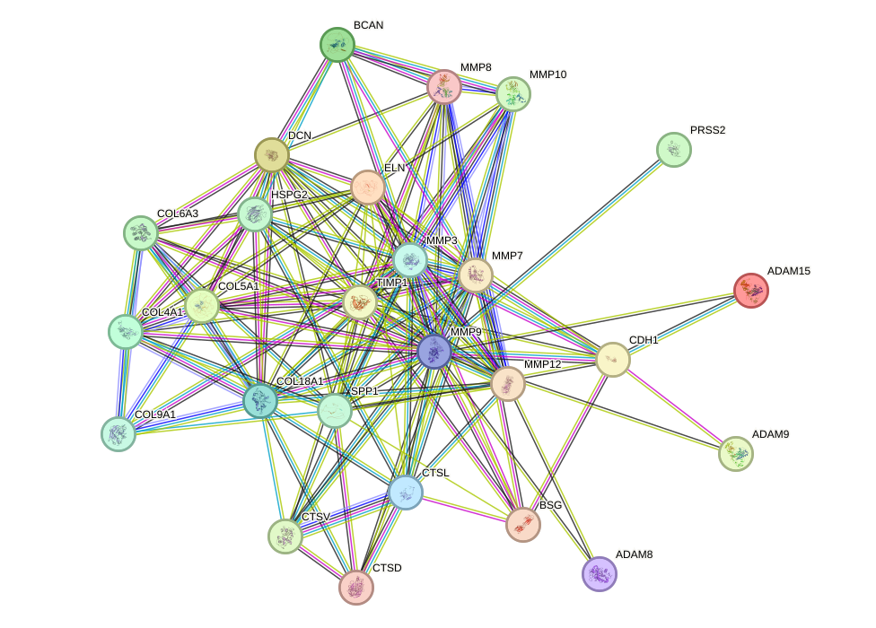
With this network context in place, the next section considers the individual proteins highlighted by the function enrichment analysis and their possible relevance to arrhythmia. During the function enrichment analysis, we identified serveral significant proteins. We will introduce them in-details in the following.
Among the listed proteins, ELN has the clearest and most biologically meaningful connection to arrhythmia. Although ELN is not a canonical ion-channel gene, its functions are highly relevant to structural and vascular mechanisms that can promote arrhythmic disease. ELN is essential for elastic fiber assembly and for preserving the mechanical integrity of the aortic wall and vascular smooth muscle architecture, processes that influence arterial compliance, ventricular afterload, and myocardial remodeling. Chronic abnormalities in vascular elasticity and extracellular matrix organization can contribute to pressure overload, chamber remodeling, and myocardial fibrosis, all of which are established substrates for atrial and ventricular arrhythmias. In addition, ELN regulates collagen fibril assembly and cross-linking through LOX-dependent mechanisms, which is especially relevant because altered collagen organization and interstitial fibrosis impair electrical conduction and increase conduction heterogeneity. Its role in smooth muscle cell maturation and proliferation through angiotensin-related signaling further links ELN to pathways involved in hypertension, vascular remodeling, and secondary arrhythmogenic remodeling. Thus, ELN stands out as the strongest candidate in this list for an indirect but potentially important contribution to arrhythmia susceptibility through extracellular matrix remodeling, vascular stiffness, and fibrosis-related conduction abnormalities. [189] [190] [191] [192] [193] [194] [195] [196] [197] [198] [199]
In comparison with ELN, ADAM9 appears to be a plausible secondary candidate whose relevance may be mediated more by remodeling than by direct electrophysiological effects. ADAM9 is a plausible secondary candidate for arrhythmia relevance because it participates in proteolytic shedding of vascular and adhesion molecules and regulates cell-matrix interactions. While the provided annotations emphasize angiogenesis and motility rather than direct cardiac electrophysiology, these functions intersect with pathways that can influence arrhythmia substrate formation. Shedding of endothelial and adhesion-associated proteins such as VCAM1 and CDH5 may alter vascular inflammation, endothelial integrity, and tissue remodeling, all of which can contribute indirectly to myocardial injury or fibrotic remodeling. Its interactions with integrin-mediated signaling are also noteworthy because integrin-extracellular matrix signaling helps regulate mechanotransduction, structural remodeling, and cellular migration in injured myocardium. Therefore, ADAM9 may be relevant to arrhythmia primarily through remodeling-associated mechanisms rather than through direct effects on impulse generation or conduction. [200] [201] [202]
A related but somewhat more tentative inflammatory connection can be considered for ADAM8. ADAM8 has a potentially indirect relationship to arrhythmia through inflammatory mechanisms. Leukocyte extravasation is a central step in tissue inflammation, and inflammation is increasingly recognized as an important driver of arrhythmogenesis, particularly in atrial fibrillation and in arrhythmias associated with myocarditis, ischemic injury, or cardiac remodeling. Enhanced leukocyte infiltration can promote cytokine release, fibroblast activation, and extracellular matrix remodeling, thereby creating conduction heterogeneity and a pro-arrhythmic substrate. However, compared with ELN, the current functional description of ADAM8 is relatively limited and does not provide a direct mechanistic bridge to cardiac electrical dysfunction. It is therefore best considered a modest-priority candidate whose relevance would depend on a broader inflammatory or remodeling context.
By contrast, the remaining proteins in this subset appear to have weaker or less interpretable links on the basis of the current annotations. COL9A1 appears to have the weakest connection to arrhythmia among the listed proteins. Its annotated role is largely restricted to structural functions in cartilage and the vitreous body, with no evident link in the provided information to cardiac conduction, myocardial remodeling, vascular biology, or inflammation. Unless additional evidence implicates COL9A1 in connective tissue phenotypes affecting the heart, it is unlikely to be a major arrhythmia-related candidate based on the current functional annotation.
Similarly, PRSS2 cannot be meaningfully evaluated for arrhythmia relevance from the present dataset because no functional annotation was supplied. On the basis of the available information alone, there is no interpretable connection to arrhythmia mechanisms.
After consideration of individual proteins with weaker network connectivity, it is also useful to return to the connected subnetworks, because these may better capture coordinated biological processes than isolated candidates. There are also small set of proteins function together to form a cluster.The network structure supports a coherent ECM-remodeling module: all 18 proteins are contained within a single connected component with 33 retained high-confidence associations (mean score 0.869), and the highest-degree nodes are MMP9, MMP3, TIMP1, MMP7, and SPP1, indicating that proteolysis and its regulation form the organizational core of the cluster. The strongest retained pairs include MMP3–TIMP1 (0.999), MMP9–TIMP1 (0.999), MMP10–TIMP1 (0.988), MMP10–MMP3 (0.973), and MMP3–MMP9 (0.956); because several of these edges include string_physical and/or experimental support, they are consistent with close molecular association, although the STRING-derived network should not be overinterpreted as uniformly demonstrating direct binding. Functionally, the cluster contains multiple matrix-degrading enzymes with overlapping substrate spectra: MMP3 degrades fibronectin, laminin, gelatins, collagens, and cartilage proteoglycans and can activate other MMPs including MMP9; MMP7 and MMP10 also degrade fibronectin and gelatins and activate procollagenase; MMP8 degrades fibrillar collagens; and MMP12 has marked elastolytic activity. Counterbalancing this, TIMP1 irreversibly inhibits many of these MMPs by targeting their catalytic zinc cofactor, thereby defining a protease/inhibitor axis likely to regulate matrix turnover intensity. Structural ECM and matrix-associated proteins in the cluster further indicate consequences for tissue architecture: DCN may regulate fibril formation, COL6A3 acts as a cell-binding collagen, COL5A1 is a fibrillar collagen component, and COL4A1 and COL18A1 generate anti-angiogenic domains that inhibit endothelial proliferation and migration. HSPG2 also has anti-angiogenic activity, and its high-confidence association with DCN (0.986) and COL18A1 (0.894) is consistent with a matrix scaffold that integrates structural and vascular regulatory functions. SPP1 contributes an immune cytokine-like component by promoting type I immunity, while ADAM15 modulates adhesion, migration, wound healing, neovascularization, and E-cadherin cleavage; the retained ADAM15–CDH1 association (0.82) is therefore compatible with altered adhesive stability. In relation to arrhythmia, this cluster plausibly contributes through adverse remodeling of the cardiac extracellular environment rather than through canonical ion-channel mechanisms. Excessive or imbalanced matrix degradation, collagen/elastin processing, altered fibril assembly, and dysregulated anti-angiogenic or inflammatory signaling could promote fibrosis-like structural remodeling, changes in tissue compliance, and disruption of normal cell–cell and cell–matrix coupling. Such changes are highly relevant to arrhythmogenesis because they can create heterogeneous conduction pathways and a structurally unstable myocardial substrate that favors abnormal impulse propagation. The prominence of MMP9 and MMP3 as hubs, together with broad TIMP1 connectivity, suggests that the balance between matrix proteolysis and inhibition may be especially important in this cluster’s contribution to arrhythmia susceptibility. [149] [150] [151] [152] [203] [204] [205] [206]
A second, much smaller cluster can also be delineated, although its interpretation should remain cautious given the limited network size. The cluster comprises three connected proteases (CTSL, CTSD, and CTSV) forming a single connected component with 3 proteins and 2 retained high-confidence associations (mean retained PPI score 0.856). Network support is therefore present but limited under the current retained-edge criteria, and the reported STRING-based edges should be interpreted as high-confidence functional associations rather than direct physical binding. Within this small network, CTSL is the highest-degree node (degree 2; weighted score 1.712), linking CTSD (score 0.897; evidence: string_functional, string_textmining) and CTSV (score 0.815; evidence: string_functional), which suggests that CTSL may represent the central functional organizer of the cluster. Functionally, the shared theme is proteolysis: CTSD mediates intracellular protein breakdown and APP degradation after activation by ADAM30, while CTSL regulates cell cycle progression through proteolytic processing of CUX1 and can generate nuclear isoforms that alter CUX1 DNA-binding properties. CTSV contributes an additional cysteine protease component, although its supplied annotation is more tissue-specific. In relation to arrhythmia, the most plausible implication from the supplied annotations is that dysregulated proteolytic processing and intracellular protein turnover could alter cellular homeostasis and transcriptional control, particularly through the CTSL-CUX1 axis, thereby creating conditions that may favor arrhythmic susceptibility. CTSD-associated disease relevance further supports the broader pathological importance of this protease module. However, because no protein in the supplied set is directly annotated here with a cardiac electrophysiological role, any link to arrhythmia should be considered mechanistically suggestive rather than definitive based on the current evidence. [207] [208]
Growth factor binding refers to the selective interaction of a protein with growth factors, which are secreted or intracellularly acting polypeptides that regulate cell growth, proliferation, survival, differentiation, tissue remodeling, and stress responses. In the cardiovascular system, proteins with growth factor binding activity participate in several biologically important processes, including electrical conduction system development, cardiomyocyte survival, fibroblast activation, endothelial signaling, inflammatory remodeling, and extracellular matrix turnover. This functional category is broad and includes direct binding to canonical growth factors such as transforming growth factor beta, epidermal growth factor family ligands, vascular endothelial growth factor related signals, and insulin-like growth factor family components, as well as fibroblast growth factor family members that can themselves interact with channels or receptors. In the heart, these interactions are highly relevant because arrhythmia often emerges not only from primary ion channel defects, but also from structural remodeling, fibrosis, inflammation, altered cell to cell coupling, metabolic stress, and developmental perturbation of the conduction system. Thus, growth factor binding proteins can influence arrhythmogenesis through at least two major routes: first, by directly modulating electrical excitability, for example through fibroblast growth factor homologous factors that regulate cardiac sodium channels; and second, by shaping the myocardial substrate through profibrotic, inflammatory, endothelial, and developmental signaling networks involving transforming growth factor beta, insulin-like growth factor related proteins, epidermal growth factor related pathways, angiogenic mediators, and stress response biomarkers. [209] [210] [211] [212] [213] [214] [215] [216] [217] [218] [219] [220] [221] [222]
Against this background, the collected literature suggests that growth factor binding may be related to arrhythmia through both direct electrophysiological regulation and indirect remodeling of the arrhythmogenic substrate. The strongest mechanistic evidence comes from studies of fibroblast growth factor family members that regulate the principal cardiac sodium channel. Fibroblast growth factor thirteen was shown to control sodium channel steady state inactivation and channel localization at the intercalated disc by regulating local membrane cholesterol, and disruption of this fibroblast growth factor dependent mechanism is linked to arrhythmia susceptibility, thereby indicating that a protein within the growth factor binding landscape can directly modify cardiac excitability independent of classical receptor signaling [209]. Complementing this, fibroblast growth factor twelve regulates the same sodium channel through calmodulin dependent and independent mechanisms, affecting inactivation and persistent late sodium current, both of which are central determinants of reentrant and triggered arrhythmia risk; broader review work further identifies intracellular fibroblast growth factors as biologically plausible antiarrhythmic modulators of sodium channel behavior [210] [211] [212]. A second major link involves structural remodeling driven by growth factor associated profibrotic signaling. In arrhythmogenic cardiomyopathy caused by desmosomal defects, transforming growth factor beta signaling downstream of integrin alpha V beta six promotes fibrosis, and inhibition of this axis reduces fibrotic remodeling, supporting the concept that abnormal growth factor signaling may create a substrate for ventricular arrhythmia [213]. Consistently, desmoplakin mutant cardiac fibroblast like cells display exaggerated transforming growth factor beta one mediated fibrogenesis, with enhanced collagen accumulation and profibrotic signaling, providing an additional mechanism by which growth factor responsive pathways may facilitate arrhythmia through scar formation and conduction heterogeneity [214]. Related evidence in a pacing induced heart failure model showed that cardiac resynchronization therapy reduced fibrosis and ventricular arrhythmias while counteracting transforming growth factor beta one driven fibroblast proliferation, further implicating growth factor controlled fibrotic remodeling in arrhythmia maintenance [215]. Inflammatory pathways also intersect with growth factor related signaling: transforming growth factor beta activated kinase one and downstream mitogen activated protein kinase and inflammasome activation were enhanced in ventricular arrhythmia, and pharmacological suppression of this cascade reduced arrhythmic burden, myocardial injury, oxidative stress, and inflammatory damage [216]. Human biomarker studies extend these mechanistic observations to clinical arrhythmia. In atrial fibrillation, growth differentiation factor fifteen and insulin like growth factor binding protein seven were repeatedly associated with adverse outcomes, heart failure hospitalization, incident atrial fibrillation, recurrent atrial fibrillation, or post ablation recurrence, indicating that circulating proteins involved in growth factor related stress and remodeling biology may reflect clinically meaningful arrhythmogenic processes [217] [218] [219]. Genetic epidemiological analysis further suggested causal contributions of insulin like growth factor family members to atrial fibrillation risk, with lower insulin like growth factor binding protein three and higher insulin like growth factor two receptor concentrations associated with atrial fibrillation, while clinical observations in children with growth hormone deficiency showed electrocardiographic changes consistent with increased ventricular arrhythmia susceptibility, supporting a broader role for growth factor and growth factor binding networks in electrical instability [220] [221]. Additional evidence that epidermal growth factor proteins are reduced in a model of myotonic dystrophy with lethal cardiac rhythm disturbances suggests that disturbed growth factor related homeostasis may also accompany severe inherited arrhythmogenic disease states [222]. Overall, the pathway appears related to arrhythmia because proteins that bind growth factors, or growth factor like ligands themselves, influence ion channel function, myocardial fibrosis, inflammation, developmental patterning, and biomarker defined disease progression, thereby affecting both arrhythmia triggers and the structural substrate required for arrhythmia initiation and persistence. [209] [210] [211] [212] [213] [214] [215] [216] [217] [218] [219] [220] [221] [222]
This literature context is broadly consistent with the network level enrichment results. There were 26 arrhythmia-associated proteins significantly enriched in the functional category of growth factor binding, a process that is highly relevant to arrhythmia because it links electrical excitability with myocardial remodeling, fibrosis, endothelial signaling, inflammatory stress, and conduction system development. Within this 26-protein set, the retained protein-protein interaction network contained 12 high-confidence edges connecting 16 proteins, corresponding to a connected proportion of 61.5 percent, with a mean retained interaction score of 0.935, indicating overall strong network support under the applied confidence threshold.
At the level of network topology, centrality was modest and distributed rather than dominated by a single highly connected protein, which may suggest that this category is organized into several compact signaling units rather than one dominant hub. The highest-degree proteins were interleukin 6 signal transducer, insulin like growth factor binding protein 1, leukemia inhibitory factor receptor alpha, epidermal growth factor receptor, and oncostatin M receptor, each with degree 2; among these, interleukin 6 signal transducer showed the largest weighted score at 1.972, followed by insulin like growth factor binding protein 1 at 1.928, leukemia inhibitory factor receptor alpha at 1.910, epidermal growth factor receptor at 1.889, and oncostatin M receptor at 1.888. The strongest retained associations included interleukin 6 signal transducer with leukemia inhibitory factor receptor alpha at 0.997, activin A receptor like type 1 with transforming growth factor beta receptor 2 at 0.992, epidermal growth factor receptor with platelet derived growth factor receptor alpha at 0.986, interleukin 6 signal transducer with oncostatin M receptor at 0.975, and insulin like growth factor binding protein 1 with insulin like growth factor binding protein 4 at 0.972. Structurally, the network was partitioned into at least 4 reported connected components, including a 4-protein module composed of activin A receptor like type 1, neuropilin 1, neuropilin 2, and transforming growth factor beta receptor 2 with 3 edges and a mean score of 0.914, as well as 3 separate 3-protein modules involving collagen type 4 alpha 1 chain, collagen type 5 alpha 1 chain, and integrin subunit alpha V with mean score 0.889, epidermal growth factor receptor, EPH receptor A2, and platelet derived growth factor receptor alpha with mean score 0.945, and insulin like growth factor binding protein 1, insulin like growth factor binding protein 4, and insulin like growth factor binding protein 6 with mean score 0.964. Notably, 10 of the 26 proteins, equal to 38.5 percent, had no retained edges under the current high-confidence criteria, including C X C motif chemokine ligand 13, fibroblast growth factor binding protein 1, fibroblast growth factor receptor 2, growth hormone receptor, insulin like growth factor binding protein 2, interleukin 1 receptor antagonist, interleukin 2 receptor subunit alpha, KIT proto-oncogene receptor tyrosine kinase, leucine rich alpha 2 glycoprotein 1, and WAP, follistatin kallikrein related peptidase inhibitor, kazal, immunoglobulin, kunitz and netrin domain containing 1.
To complement these summary statistics, we include the protein-protein interaction network visualization below and provide the corresponding STRING network page for interactive inspection.
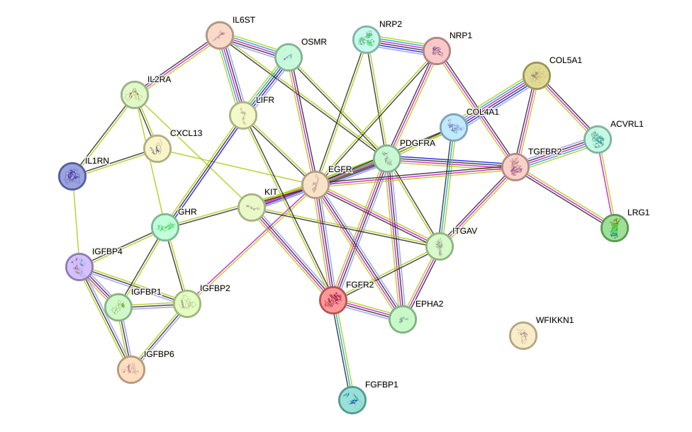
During the function enrichment analysis, we identified serveral significant proteins. We will introduce them in-details in the following.
PDGFRA is among the most compelling proteins in this list with potential relevance to arrhythmia because its signaling architecture intersects directly with mechanisms that govern myocardial remodeling, fibroblast activation, calcium handling and conduction heterogeneity. The receptor phosphorylates PLCG1, leading to inositol trisphosphate generation and cytosolic Ca2+ mobilization, a process that is highly pertinent to arrhythmogenesis because disturbed intracellular calcium cycling can promote triggered activity. In parallel, activation of PI3K-AKT, MAPK/ERK and STAT pathways links PDGFRA to cell survival, proliferation and tissue remodeling, all of which are central to the development of atrial and ventricular fibrotic substrates that slow conduction and facilitate re-entry. Its documented role in wound healing and mesenchymal cell biology further supports a plausible contribution to post-injury structural remodeling of the myocardium. Thus, although PDGFRA is not described here as a canonical ion-channel regulator, its broad effects on calcium signaling and reparative or fibrotic responses make it highly relevant to disease mechanisms that may predispose to arrhythmia.
A related but somewhat more matrix-centered mechanism is suggested by ITGAV. ITGAV stands out because it occupies a central position at the interface between extracellular matrix sensing, inflammatory signaling and profibrotic TGF-beta activation, all of which are strongly implicated in arrhythmia pathogenesis. In the heart, integrin-mediated mechanotransduction influences structural integrity and electrical coupling indirectly through remodeling of the extracellular matrix. Particularly important is the ability of alpha-V-containing integrins to activate TGF-beta-1, a master regulator of fibrosis; excessive fibrosis disrupts conduction continuity, increases anisotropy and provides a substrate for re-entrant arrhythmias. The requirement of ITGAV:ITGB3 for IGF and FGF signaling also suggests a role in cardiomyocyte survival and repair responses, while its involvement in IL1B signaling links it to inflammatory remodeling, another recognized driver of atrial and ventricular arrhythmogenesis. Therefore, ITGAV is mechanistically relevant not because it directly generates electrical impulses, but because it can shape the structural and inflammatory milieu that stabilizes arrhythmic circuits. [223] [224] [225] [226] [227]
Within the insulin like growth factor related subset, IGFBP1 appears notable because its annotation explicitly includes a cardiomyocyte relevant survival mechanism. By regulating IGF bioavailability, IGFBP1 can influence pro-survival and growth signaling in cardiac tissue, which is important in the context of stress adaptation and remodeling. More specifically, its reported ability to regulate cardiomyocyte apoptosis by suppressing HIF-1alpha degradation suggests a potential role in ischemic or hypoxic myocardial responses, conditions that often create electrophysiological instability and increase arrhythmic risk. Its integrin-dependent activation of focal adhesion kinase and MAPK signaling further connects IGFBP1 to cellular adhesion and remodeling pathways that may alter myocardial structure over time. Accordingly, IGFBP1 may be relevant to arrhythmia through effects on cardiomyocyte viability, hypoxia-response pathways and remodeling rather than through direct control of ion channels.
Inflammation-linked candidates in this set may also be relevant, although the evidence is somewhat more indirect. IL1RN is of interest because it points to an inflammation-linked calcium signaling axis. Although the function provided emphasizes neuronal activity rather than cardiac tissue, the key mechanistic elements—IL1B responsiveness, Akt activation and potentiation of calcium influx—are highly relevant to arrhythmia biology. Inflammatory cytokines such as IL-1beta are increasingly recognized as modulators of cardiac electrophysiology, capable of altering calcium handling, action potential properties and tissue excitability. A protein participating in IL1B-dependent signaling could therefore contribute indirectly to arrhythmogenesis, especially in inflammatory states such as myocarditis, systemic inflammation or postoperative remodeling. The evidence here is more indirect than for some other proteins, but the connection to cytokine-driven calcium dysregulation makes IL1RN a plausible contributor to arrhythmic susceptibility.
A similar logic of indirect influence through remodeling and kinase signaling applies to EGFR. EGFR is relevant to arrhythmia primarily through its role in growth-factor signaling control and receptor turnover. Although the annotation focuses on ubiquitination and signaling attenuation, the affected pathways—especially MAPK and SRC-associated signaling—are deeply involved in cardiac hypertrophy, stress signaling and remodeling. Dysregulated EGFR-family signaling has been associated in broader cardiovascular biology with fibrosis, altered cell survival and maladaptive repair, all of which can create substrates for arrhythmia. The receptor’s capacity to regulate signaling amplitude through ubiquitination also raises the possibility that abnormal EGFR pathway persistence could influence downstream kinase networks that affect conduction indirectly. Thus, EGFR is best viewed as a modifier of remodeling-related arrhythmic risk rather than a direct electrophysiological effector.
Another potentially relevant upstream receptor in this category is FGFR2. FGFR2 merits attention because fibroblast growth factor signaling is broadly implicated in tissue repair, developmental patterning and structural remodeling, all of which can influence arrhythmia susceptibility. In the adult heart, wound-healing and proliferative pathways are especially relevant after injury, where excessive repair can culminate in fibrosis and conduction abnormalities. Although the present annotation is general, FGFR2-mediated developmental and reparative signaling could plausibly influence myocardial architecture, fibroblast behavior and chamber substrate properties. Therefore, FGFR2 is a potentially meaningful upstream regulator of structural conditions that favor arrhythmia, even if the current evidence does not directly implicate it in ion flux or pacemaking.
Closely related to this fibroblast growth factor axis, FGFBP1 may further amplify remodeling relevant signaling. FGFBP1 is potentially relevant because it amplifies FGF and integrin signaling, thereby linking growth factor activity to ERK-dependent cellular responses. Its dependence on ITGAV:ITGB3 is noteworthy in the arrhythmia context, since integrin signaling and extracellular matrix interactions contribute to myocardial remodeling and fibrosis. Through effects on survival, migration and angiogenesis, FGFBP1 may shape the post-injury microenvironment and influence the balance between adaptive repair and maladaptive remodeling. ERK1/2 activation is also a recognized pathway in cardiac hypertrophy and stress responses. Consequently, FGFBP1 may contribute to arrhythmogenic remodeling indirectly by promoting signaling programs that alter myocardial structure and intercellular organization. [228] [229] [230] [231] [232] [233] [234]
Beyond these growth factor and matrix associated proteins, endocrine and vascular contributors may also deserve consideration. GHR may have a meaningful but indirect connection to arrhythmia because growth hormone signaling influences systemic metabolism, myocardial growth and cardiovascular homeostasis. A receptor that negatively regulates growth hormone signaling could affect cardiac structure and function over time, particularly in conditions where endocrine imbalance contributes to cardiomyopathy. Since cardiomyopathic remodeling is a major substrate for both atrial and ventricular arrhythmias, altered GHR activity may be relevant at the disease level even though the annotation does not indicate direct electrophysiological actions. This makes GHR a secondary candidate whose importance would depend on the broader clinical context of myocardial growth and metabolic remodeling.
In a similarly indirect manner, extracellular matrix and vascular support proteins may shape arrhythmogenic conditions. COL4A1 is potentially relevant to arrhythmia through its role in the vascular basement membrane and angiogenesis regulation. Although the provided function emphasizes anti-angiogenic activity rather than cardiac electrophysiology, abnormalities in vascular integrity and extracellular matrix composition can influence myocardial perfusion and tissue remodeling. In ischemic settings, impaired angiogenic responses may exacerbate hypoxia, cell death and scar formation, each of which can create an arrhythmogenic substrate. Therefore, COL4A1 is not a primary arrhythmia gene based on the present annotation, but it may contribute indirectly through effects on microvascular support and matrix organization.
Finally, immune regulatory proteins may also contribute through their effects on inflammatory tone. IL2RA is relevant from an immunological perspective because immune tolerance and regulatory T-cell function can influence inflammatory cardiac injury, including autoimmune or post-infectious processes that predispose to arrhythmia. Chronic inflammation and immune-mediated myocardial damage promote fibrosis and electrical instability. While the annotation does not place IL2RA directly in cardiac signaling, its role in controlling TREG biology suggests that altered IL2RA function could modulate the inflammatory environment that shapes arrhythmic risk, particularly in myocarditis or systemic autoimmune disease. Its connection is therefore indirect but biologically plausible.
In addition to individual proteins, the retained network also suggests small groups of proteins that may function together as coherent signaling units. There are also small set of proteins function together to form a cluster. The cluster comprises a single fully connected component of three proteins (IL6ST, LIFR, and OSMR) with uniformly high-confidence association scores (mean retained PPI score 0.962), supporting their interpretation as a coherent functional signaling unit within the retained network. IL6ST is the central hub in this module (degree 2; weighted score 1.972) and is the shared signal-transducing molecule used by multiple cytokine receptor systems, including those for IL6, LIF, and OSM, where it promotes JAK-MAPK and JAK-STAT3 pathway activation following receptor complex formation [235] [236]. OSMR contributes OSM-specific signaling and, together with IL31RA, forms the IL31 receptor that activates STAT3 and possibly STAT1 and STAT5, while LIFR is also a signal-transducing receptor that may share signaling logic with IL6ST. The strongest retained network associations are IL6ST-LIFR (0.997) and IL6ST-OSMR (0.975), with additional support for LIFR-OSMR (0.913); however, these STRING-based associations should be interpreted as high-confidence functional associations and not over-stated as exclusively direct physical interactions, even though physical evidence is included among the evidence types. Functionally, this cluster is important because it integrates inflammatory cytokine signaling with downstream transcriptional and regenerative programs, including induction of SOCS1 and SOCS3 negative feedback and activation of YAP and NOTCH independently of STAT3 [237] [238]. In relation to arrhythmia, the most plausible contribution of this cluster is through inflammation-linked signaling rather than through a direct electrophysiologic role explicitly stated in the supplied annotations. IL6ST-mediated pathways regulate immune responses, pain control, and tissue homeostasis, and also influence developmental and survival programs in specialized cell types [236] [239] [240] [241] [242]. Therefore, dysregulation of this receptor module could plausibly promote an inflammatory tissue environment and altered repair or remodeling responses that may favor arrhythmogenic substrate formation. This inference is supported by the strong internal connectivity of the cluster and the known cytokine-signaling functions of its members, although the supplied evidence does not provide a direct, arrhythmia-specific mechanistic annotation. [235] [236] [237] [238] [239] [240] [241] [242]
A second connected component highlights a somewhat different aspect of growth factor binding biology, centered on endothelial, vascular, and transforming growth factor related signaling. The connected component contains all four proteins with three retained high-confidence associations (mean score 0.914), indicating a coherent but compact functional module under the present network criteria. TGFBR2 and NRP1 are the highest-degree nodes (degree 2 each), placing them at the center of the cluster topology. The strongest retained association is ACVRL1-TGFBR2 (score 0.992; supported by string_database, string_functional, string_physical, and string_textmining), consistent with convergence of endothelial activin/TGF-beta signaling processes. NRP1-NRP2 also shows a strong association (score 0.967; string_functional, string_physical, string_textmining), supporting a shared neuropilin-centered role in VEGF/semaphorin signal reception, while NRP1-TGFBR2 shows a more limited functional association (score 0.782; string_functional). Because these are STRING-derived associations, they should be interpreted as high-confidence functional relationships, and direct physical binding should not be over-stated except where physical evidence is explicitly included. Functionally, the cluster is important because the supplied annotations converge on regulation of angiogenesis, blood vessel number and integrity, extracellular matrix production, wound healing, mesenchymal proliferation or differentiation, apoptosis, and endothelial SMAD signaling. Such processes are highly relevant to arrhythmia because structural and vascular remodeling of cardiac tissue can alter the myocardial substrate that supports normal impulse propagation. In particular, TGFBR2-mediated control of extracellular matrix production and epithelial or mesenchymal state transitions suggests a plausible contribution to profibrotic or remodeling programs, while ACVRL1-dependent endothelial signaling and the VEGF/semaphorin receptor functions of NRP1 and NRP2 implicate vascular integrity and angiogenic balance. Disturbance of these coordinated pathways could therefore favor an arrhythmogenic milieu by promoting maladaptive tissue remodeling, altered vascular support, and apoptosis-related stress signaling. Network evidence is informative but limited to three retained edges in a single four-protein component under the current high-confidence criteria. [243] [244] [245]
The cytokine-cytokine receptor interaction pathway comprises the network of secreted immune and stromal signaling proteins and their cognate cell-surface receptors that coordinate intercellular communication during inflammation, tissue repair, stress responses, and host defense. This pathway includes interleukins, chemokines, interferons, tumor necrosis factor family ligands, colony-stimulating factors, and other soluble mediators, together with receptors expressed on leukocytes, endothelial cells, fibroblasts, and cardiomyocytes. Binding of cytokines to their receptors activates downstream signaling programs that regulate leukocyte recruitment, adhesion, migration, survival, differentiation, oxidative stress, extracellular matrix turnover, and cell death. In the heart, this pathway is particularly important because it links systemic immune activation to local atrial and ventricular remodeling. Excessive cytokine-receptor signaling can promote endothelial activation, infiltration of neutrophils and monocytes, amplification of inflammatory cascades through nuclear factor kappa-light-chain-enhancer of activated B cells and Janus kinase-signal transducer and activator of transcription signaling, and induction of chemokine gradients that sustain immune cell trafficking. These events can alter calcium handling, gap-junction integrity, fibroblast activation, and structural remodeling, thereby creating an electrophysiological substrate favorable for abnormal impulse generation and conduction disturbances. Thus, the pathway is not merely a marker of inflammation, but a mechanistic interface through which immune dysregulation can be translated into arrhythmogenic remodeling. [246] [247] [248] [249] [250]
Building on this mechanistic background, the provided studies collectively suggest that cytokine-cytokine receptor interaction is repeatedly implicated in arrhythmia, particularly atrial fibrillation. Across multiple transcriptomic and bioinformatic analyses, this pathway was identified as significantly enriched in atrial fibrillation samples, which supports the view that dysregulated inflammatory communication may represent a recurring molecular feature of the arrhythmic atrium rather than an isolated finding. In human atrial tissue, hub genes such as C-X-C motif chemokine receptor 4, C-X-C motif chemokine receptor 2, C-C motif chemokine receptor 2, C-X-C motif chemokine ligand 11, C-X-C motif chemokine ligand 1, interleukin 1 beta, and complement component 3 were highlighted within inflammatory and cytokine-receptor networks, supporting a model in which chemokine-driven leukocyte recruitment and inflammatory amplification may contribute to atrial remodeling and electrical instability [250]. A related integrative study connecting nonalcoholic fatty liver disease and atrial fibrillation likewise found enrichment of cytokine-cytokine receptor interaction together with neutrophil activation, and identified shared upregulated genes including C-C motif chemokine receptor 2, C-X-C motif chemokine receptor 2, S100 calcium binding protein A8, S100 calcium binding protein A9, and S100 calcium binding protein A12, suggesting that innate immune activation and chemokine signaling may form a systemic inflammatory axis predisposing to atrial fibrillation [247]. Further support comes from a ferroptosis-immune analysis in atrial fibrillation, in which validated diagnostic genes were enriched in cytokine-cytokine receptor interaction, indicating that inflammatory receptor signaling may intersect with oxidative injury and regulated cell death to worsen atrial susceptibility to arrhythmia [248]. Peripheral blood long noncoding ribonucleic acid profiling in patients with atrial fibrillation also identified cytokine-cytokine receptor interaction among the enriched pathways, together with nuclear factor kappa-light-chain-enhancer of activated B cells signaling and toll-like receptor signaling, consistent with the possibility that circulating immune dysregulation reflects and perhaps reinforces the arrhythmogenic substrate [249]. Beyond atrial fibrillation, a mechanistic review of immune checkpoint inhibitor-related cardiovascular toxicities described cytokine signaling as part of a shared immune core underlying arrhythmias and conduction-system disease, emphasizing that cytokine-receptor networks may connect activated T cells, endothelial recruitment, myocardial injury, and electrical disturbances in the heart [246]. Collectively, these publications support the interpretation that the cytokine-cytokine receptor interaction pathway may contribute to arrhythmia by promoting inflammatory cell recruitment, endothelial and myocardial stress, oxidative and ferroptotic injury, and structural as well as electrophysiological remodeling that facilitates abnormal impulse formation and propagation. [246] [247] [248] [249] [250]
Consistent with this literature context, the enrichment analysis of the present dataset points to a quantitatively substantial inflammatory component. There were 65 arrhythmia-associated proteins significantly enriched in the cytokine-cytokine receptor interaction pathway, highlighting a substantial intercellular signaling and inflammatory component within the analyzed disease-associated protein set. Given the established involvement of this pathway in leukocyte recruitment, endothelial activation, fibroblast signaling, extracellular matrix remodeling, calcium-handling perturbation, and conduction instability, the enrichment of 65 proteins suggests a broad interface between immune dysregulation and arrhythmogenic remodeling.
To further clarify how these proteins may be organized functionally, the retained association network provides an additional layer of structure. Within this 65-protein set, 178 high-confidence protein-protein association edges were retained, connecting 58 proteins, which corresponds to 89.2 percent of all pathway proteins, with a mean retained interaction score of 0.891, indicating strong overall network support under the applied confidence criteria. Network centrality was led by tumor necrosis factor with degree 28 and weighted score 25.188, followed by interleukin 6 with degree 21 and weighted score 19.411, cluster of differentiation 4 with degree 17 and weighted score 14.619, tumor necrosis factor receptor superfamily member 1A with degree 16 and weighted score 13.677, and C-X-C motif chemokine ligand 9 with degree 15 and weighted score 13.239. The network was dominated by one major connected component containing 56 proteins and 177 edges with the same mean score of 0.891, whereas a second minor component contained 2 proteins linked by 1 edge with a mean score of 0.814; 7 proteins, namely C-C motif chemokine ligand 14, ectodysplasin A2 receptor, interleukin 17C, receptor expressed in lymphoid tissues, tumor necrosis factor receptor superfamily member 19, tumor necrosis factor receptor superfamily member 6B, and tumor necrosis factor receptor superfamily member 9, had no retained edges under the current threshold. The strongest retained associations reached a score of 0.999, including tumor necrosis factor receptor superfamily member 13B with tumor necrosis factor superfamily member 13, tumor necrosis factor with tumor necrosis factor receptor superfamily member 1A, tumor necrosis factor receptor superfamily member 1A with tumor necrosis factor receptor superfamily member 1B, C-C motif chemokine ligand 21 with C-X-C motif chemokine ligand 10, C-C motif chemokine ligand 21 with C-X-C motif chemokine ligand 9, tumor necrosis factor with tumor necrosis factor receptor superfamily member 1B, C-X-C motif chemokine ligand 10 with C-X-C motif chemokine ligand 9, and interleukin 15 with interleukin 15 receptor subunit alpha, although these should be interpreted as high-confidence functional associations rather than uniformly direct physical binding.
We include the protein-protein interaction network visualization below together with the corresponding Search Tool for the Retrieval of Interacting Genes/Proteins webpage.
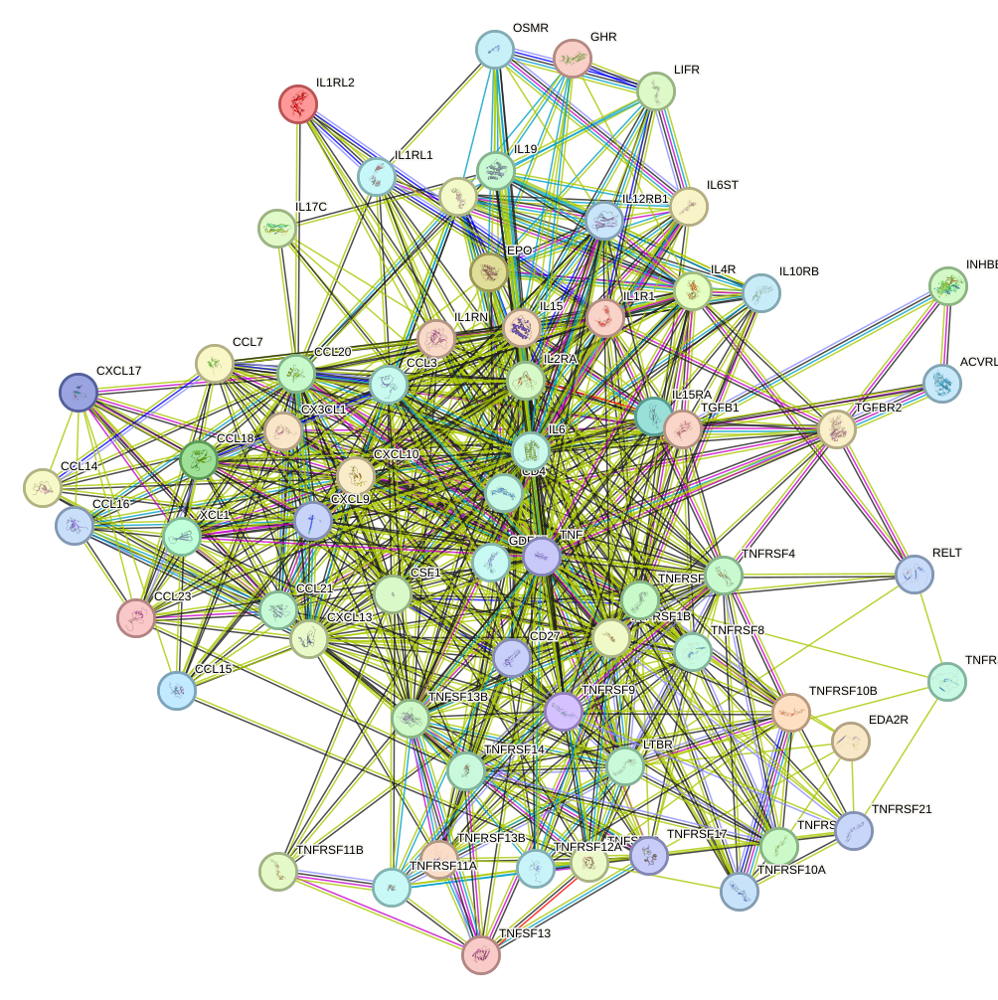
With this network context in place, the function enrichment analysis also highlights several individual proteins that may merit closer consideration. During the function enrichment analysis, we identified several significant proteins. We will introduce them in detail in the following.
Among the listed proteins, interleukin 17C is one of the most plausibly connected to arrhythmia because inflammatory signaling is a well-established driver of electrical and structural remodeling in the heart. Although interleukin 17C is classically described in epithelial host defense, its ability to amplify nuclear factor kappa-light-chain-enhancer of activated B cells-dependent and mitogen-activated protein kinase-dependent inflammatory programs, particularly in cooperation with tumor necrosis factor and interleukin 1 beta, is highly relevant to arrhythmogenic disease mechanisms. These pathways are strongly implicated in myocardial inflammation, fibrosis, and altered ion-channel regulation, all of which can increase susceptibility to atrial or ventricular arrhythmias. The note that interleukin 17C signaling may be either protective or pathogenic is also important, because arrhythmia risk often emerges in the setting of maladaptive chronic inflammation rather than acute host defense. Thus, interleukin 17C stands out as a candidate link between immune activation and arrhythmogenic remodeling, especially in disorders where systemic or tissue-local inflammatory cytokine networks are activated.
In a related but somewhat distinct manner, ectodysplasin A2 receptor may be relevant because stress-response signaling can indirectly shape the myocardial substrate. Ectodysplasin A2 receptor is noteworthy in the context of arrhythmia because nuclear factor kappa-light-chain-enhancer of activated B cells and c-Jun N-terminal kinase are central stress-response pathways that can influence cardiomyocyte survival, inflammatory signaling, and fibrotic remodeling. Although ectodysplasin A2 receptor is not a canonical arrhythmia gene, receptor-mediated activation of tumor necrosis factor receptor-associated factor-associated inflammatory cascades could contribute indirectly to arrhythmogenesis by promoting a myocardial substrate characterized by inflammation and adverse remodeling. Such processes are particularly relevant in atrial fibrillation and heart failure-associated arrhythmias, where cytokine-driven signaling alters conduction properties and tissue architecture. Therefore, ectodysplasin A2 receptor is best viewed as a potentially relevant upstream modulator of pro-arrhythmic signaling rather than a direct electrophysiological effector.
A similar logic applies to receptor expressed in lymphoid tissues, which appears more likely to influence substrate formation than direct excitability. Receptor expressed in lymphoid tissues is of potential interest for arrhythmia because apoptosis and stress-activated mitogen-activated protein kinase signaling are both closely linked to the development of arrhythmogenic cardiac substrates. Cardiomyocyte death and associated tissue repair can promote fibrosis, conduction heterogeneity, and reentry, while p38 and c-Jun N-terminal kinase signaling are implicated in myocardial injury responses and inflammatory remodeling. The most relevant aspect of receptor expressed in lymphoid tissues is therefore not its developmental role, but its reported ability to engage apoptosis-related and stress-kinase pathways. In disease settings such as ischemic injury, myocarditis, or chronic heart failure, excessive activation of these programs may facilitate structural remodeling that predisposes to arrhythmia. Receptor expressed in lymphoid tissues thus stands out as a plausible contributor to arrhythmia susceptibility through cell-death and stress-signaling mechanisms. [251] [252] [253] [254]
Extending this theme of inflammation-linked remodeling, tumor necrosis factor receptor superfamily member 19 may also be relevant through its coupling of stress transcriptional programs with cell-death pathways. Tumor necrosis factor receptor superfamily member 19 is relevant to arrhythmia primarily because it couples inflammatory transcriptional programs with cell-death signaling. Activation of c-Jun and nuclear factor kappa-light-chain-enhancer of activated B cells suggests participation in stress and inflammatory responses that can contribute to myocardial remodeling, while caspase-independent cell death may promote loss of viable myocardium and subsequent fibrotic replacement. These changes are mechanistically important in arrhythmia because they create conduction discontinuities and electrophysiological heterogeneity. The existence of decoy receptor isoforms further suggests context-dependent regulation, which may influence whether signaling is amplified or restrained in diseased tissue. Overall, tumor necrosis factor receptor superfamily member 19 is best interpreted as a potential modifier of arrhythmia risk through inflammation-associated remodeling rather than as a direct regulator of cardiac excitability.
Closely related considerations apply to tumor necrosis factor receptor superfamily member 6B, which appears to integrate several processes relevant to tissue injury and repair. Tumor necrosis factor receptor superfamily member 6B is particularly interesting in relation to arrhythmia because it integrates several processes that are highly relevant to the formation of an arrhythmogenic substrate: inflammation, apoptosis, immune activation, and vascular remodeling. Nuclear factor kappa-light-chain-enhancer of activated B cells activation and caspase-dependent apoptosis can contribute to myocardial injury and fibrosis, whereas impaired angiogenesis may exacerbate tissue hypoxia or maladaptive remodeling in diseased myocardium. Its role in alloactivation is also notable in inflammatory or transplant-associated settings, where immune-mediated myocardial injury can precipitate rhythm disturbances. Taken together, tumor necrosis factor receptor superfamily member 6B could plausibly influence arrhythmia susceptibility through immune-driven structural remodeling and impaired tissue homeostasis, especially in inflammatory cardiomyopathies or ischemia-related disease contexts.
From an immune-cell injury perspective, tumor necrosis factor receptor superfamily member 9 may be relevant in a somewhat different way. Tumor necrosis factor receptor superfamily member 9 stands out because immune-cell activation, particularly cytotoxic T-cell responses, can be highly relevant to arrhythmia in the setting of myocarditis or other immune-mediated cardiac injury. Enhanced cluster of differentiation 8-positive T-cell survival and cytotoxic function may be beneficial for antiviral defense, but in the heart excessive or misdirected cytotoxic immunity can damage cardiomyocytes, disrupt conduction tissue, and promote inflammatory scarring. These mechanisms are well aligned with arrhythmia development, especially ventricular arrhythmias associated with myocarditis and chronic inflammatory cardiomyopathy. Therefore, tumor necrosis factor receptor superfamily member 9 is not likely to act as a direct electrophysiological determinant, but it may meaningfully modulate arrhythmia risk by shaping antiviral and immune-mediated myocardial injury responses.
Finally, the chemokine-regulatory protein listed here may be relevant at the level of inflammatory cell trafficking and tissue exposure to chemokine gradients. This chemokine-regulatory protein is relevant to arrhythmia because leukocyte recruitment and chemokine gradients are major determinants of cardiac inflammation. By controlling the availability and localization of inflammatory chemokines such as C-C motif chemokine ligand 2, C-C motif chemokine ligand 5, C-X-C motif chemokine ligand 8, and others, it could influence the degree of immune-cell infiltration into injured or stressed myocardium. Such inflammatory cell recruitment is closely linked to atrial and ventricular remodeling, fibrosis, and conduction abnormalities. Its endothelial role in chemokine transcytosis is particularly notable, as this process could facilitate leukocyte trafficking into cardiac tissue during inflammatory states. Although the connection to arrhythmia is indirect, this protein stands out as a regulator of the inflammatory milieu that can shape arrhythmogenic remodeling.
Beyond these individual proteins, the network structure also suggests the presence of coordinated functional groupings. There are also small set of proteins function together to form a cluster. The cluster is highly cohesive in the retained high-confidence association network, with all 56 proteins contained in a single connected component supported by 177 edges and a high mean retained score of 0.891, indicating a robust functional module under the current Search Tool for the Retrieval of Interacting Genes/Proteins-based criteria. The dominant hubs are tumor necrosis factor with degree 28, interleukin 6 with degree 21, cluster of differentiation 4 with degree 17, tumor necrosis factor receptor superfamily member 1A with degree 16, and C-X-C motif chemokine ligand 9 with degree 15, consistent with a core inflammatory signaling architecture. Several of the strongest retained associations map onto canonical ligand-receptor or pathway relationships, including tumor necrosis factor-tumor necrosis factor receptor superfamily member 1A, tumor necrosis factor-tumor necrosis factor receptor superfamily member 1B, interleukin 6-interleukin 6 signal transducer, interleukin 15-interleukin 15 receptor subunit alpha, transforming growth factor beta 1-transforming growth factor beta receptor 2, tumor necrosis factor receptor superfamily member 13B-tumor necrosis factor superfamily member 13, tumor necrosis factor receptor superfamily member 13B-tumor necrosis factor superfamily member 13B, tumor necrosis factor receptor superfamily member 12A-tumor necrosis factor superfamily member 12, and interleukin 12B-interleukin 12 receptor subunit beta 1, with scores ranging from 0.998 to 0.999. Functionally, the proteins converge on mechanisms that recruit and position immune cells, for example C-C motif chemokine ligand 18, X-C motif chemokine ligand 1, C-X-C motif chemokine ligand 17, C-C motif chemokine ligand 23, C-C motif chemokine ligand 20, C-C motif chemokine ligand 21, C-X-C motif chemokine ligand 10, C-X-C motif chemokine ligand 9, C-C motif chemokine ligand 16, and C-X3-C motif chemokine ligand 1; amplify inflammatory signaling through nuclear factor kappa-light-chain-enhancer of activated B cells, mitogen-activated protein kinase, and Janus kinase-signal transducer and activator of transcription pathways, for example interleukin 1 receptor-like 2, interleukin 4 receptor, interleukin 6 signal transducer, interleukin 15, oncostatin M receptor, interleukin 10 receptor subunit beta, interleukin 12 receptor subunit beta 1, and tumor necrosis factor receptor superfamily member 14; and regulate cell survival versus apoptosis through tumor necrosis factor-family receptors and tumor necrosis factor-related apoptosis-inducing ligand receptors, including tumor necrosis factor receptor superfamily member 1A, tumor necrosis factor receptor superfamily member 1B, tumor necrosis factor receptor superfamily member 10A, tumor necrosis factor receptor superfamily member 10B, tumor necrosis factor receptor superfamily member 12A, and tumor necrosis factor receptor superfamily member 21. Additional components indicate remodeling and tissue-response capacity, including transforming growth factor beta 1-transforming growth factor beta receptor 2 signaling, which regulates wound healing, extracellular matrix production, immunosuppression, epithelial-mesenchymal transition, and apoptosis, as well as colony stimulating factor 1 signaling, which promotes monocyte and macrophage survival, inflammatory chemokine release, migration, and cytoskeletal reorganization. In relation to arrhythmia, this cluster is plausibly relevant because sustained cytokine and chemokine signaling can promote inflammatory cell recruitment into tissue, enhance local production of secondary mediators, activate stress and survival pathways, and induce apoptosis or maladaptive remodeling. Such processes are compatible with arrhythmogenic substrate formation through inflammation-associated tissue injury, altered repair, fibrosis-related remodeling, and disturbed cell-cell signaling. The prominence of tumor necrosis factor and interleukin 6 as network hubs is especially notable, because both sit upstream of broad inflammatory transcriptional programs and can propagate signaling through nuclear factor kappa-light-chain-enhancer of activated B cells, mitogen-activated protein kinase, and Janus kinase-signal transducer and activator of transcription axes. Chemokine-rich subnetworks involving C-X-C motif chemokine ligand 9, C-X-C motif chemokine ligand 10, C-C motif chemokine ligand 20, C-C motif chemokine ligand 21, and C-X3-C motif chemokine ligand 1 further support a role in sustained leukocyte trafficking and immune activation, while transforming growth factor beta pathway components support structural remodeling that could stabilize abnormal conduction. The cluster therefore most likely reflects an integrated inflammatory-remodeling program that may contribute to arrhythmia by coupling immune-cell recruitment, cytokine amplification, apoptotic signaling, and tissue remodeling. Importantly, the network evidence provided here supports high-confidence protein associations within one connected module, but these associations should be interpreted as functional relationships unless the listed evidence explicitly includes physical or experimental support for a given pair. [255] [256] [257] [258] [259] [260] [261] [262] [263] [264] [116] [117] [118] [265] [266] [56] [57] [58] [59] [60] [61] [62] [96] [97] [98] [99] [100] [101] [102] [103] [104] [105] [106] [107] [108] [109] [110] [91] [92] [93] [94] [95] [243] [235] [236] [237] [238] [240] [241] [242] [239] [267] [268] [42] [269] [270] [271] [272] [273] [82] [83] [84] [85] [86] [87] [88] [89] [90] [274] [275] [276] [277] [278] [279] [280] [281] [282] [283] [284] [285] [286] [287] [288] [289] [290] [291] [292] [38] [39] [40] [41] [74] [75] [76] [293] [294] [295] [296] [297] [298] [299] [300] [301] [302] [303] [304] [115] [114] [305] [119] [120] [306] [307] [308] [309] [310] [311] [312] [313] [314] [315] [316] [317] [318] [319] [320] [321] [322] [323] [324] [325] [326] [327] [328] [329] [330] [331]
In addition to the major inflammatory module, the network also contains a much smaller secondary component that may reflect a distinct functional theme. The connected cluster contains erythropoietin and growth hormone receptor and is supported by a single retained high-confidence functional association, erythropoietin-growth hormone receptor, with score 0.814 and evidence type string_functional, indicating that these proteins are linked at the level of biological function, although the current network evidence does not establish direct physical binding and remains limited under the present retained-edge criteria. Functionally, erythropoietin is the dominant node in this cluster and has pleiotropic actions relevant to systemic metabolic regulation and cardiac stress responses. Erythropoietin suppresses hepatic hepcidin antimicrobial peptide expression after blood loss, thereby promoting iron absorption and mobilization, and it also enhances lipid uptake in adipocytes and hepatocytes, inhibits nutrient deficiency-induced hepatocyte autophagy through insulin receptor substrate 1-protein kinase B-mechanistic target of rapamycin signaling, and suppresses apoptosis and inflammatory responses in cardiomyocytes via sphingosine 1-phosphate-dependent and cyclic adenosine monophosphate-dependent protein kinase B activation. These activities suggest a coordinated role in maintaining oxygen delivery, iron availability, metabolic substrate handling, and cardiomyocyte survival. In the context of arrhythmia, the most relevant supplied function is the cardiomyocyte-protective effect of erythropoietin, because reduced apoptosis and inflammation would be expected to limit myocardial stress states that can favor electrical instability. In parallel, erythropoietin-driven regulation of iron homeostasis may also be pertinent, as disturbed iron handling after hemorrhagic or stress conditions could influence myocardial physiology indirectly through altered systemic oxygen and metabolic balance. Growth hormone receptor contributes a regulatory layer by negatively modulating growth hormone signaling via increased production of soluble growth hormone-binding protein, suggesting that this cluster may reflect broader endocrine cross-talk controlling growth and metabolic signaling intensity. Overall, the cluster is best interpreted as a small endocrine-functional module with potential relevance to arrhythmia through cardiomyocyte survival and inflammatory restraint, while the network support is sparse and should be interpreted cautiously. [14] [15] [16] [17] [18] [19] [20]
Phosphoinositide three kinase and protein kinase B signaling is a central intracellular pathway that translates extracellular growth factors, hormones, cytokines, mechanical stress, and metabolic cues into coordinated cellular responses. Upon activation of membrane receptors, phosphoinositide three kinase generates phosphatidylinositol three, four, five trisphosphate, which recruits protein kinase B to the plasma membrane, where it becomes activated through phosphorylation. Activated protein kinase B then regulates a broad downstream network that includes mammalian target of rapamycin, forkhead box O transcription factors, glycogen synthase kinase three, endothelial nitric oxide synthase, and multiple apoptosis- and metabolism-related effectors. In the heart, this pathway is essential for cardiomyocyte survival, mitochondrial integrity, calcium handling, redox balance, gap junction maintenance, inflammatory control, and adaptive structural remodeling. Because normal cardiac rhythm depends on preserved impulse generation, cell to cell electrical coupling, balanced autonomic input, and stable excitation contraction coupling, phosphoinositide three kinase and protein kinase B signaling is well positioned to influence arrhythmia susceptibility. Depending on disease context, either insufficient signaling or maladaptive pathway engagement can alter ion channel activity, connexin turnover, fibrosis, inflammation, and stress responses, thereby affecting both atrial and ventricular electrical stability. [332] [333] [334] [335] [336] [337] [338] [339] [340] [341] [342] [343] [344] [345] [346]
Against this mechanistic background, the collected literature suggests that phosphoinositide three kinase and protein kinase B signaling is closely linked to arrhythmia through several convergent processes involving calcium homeostasis, intercellular electrical coupling, autophagy, inflammation, oxidative stress, fibrosis, and structural remodeling. In ventricular arrhythmia associated with myocardial ischemia reperfusion injury, ginsenoside Rg1 reduced ventricular tachycardia and ventricular fibrillation while inhibiting L type calcium current and limiting intracellular calcium overload, with these anti arrhythmic effects attributed in part to modulation of phosphoinositide three kinase and protein kinase B signaling, suggesting that this pathway may help stabilize excitation contraction coupling under acute ischemic stress [332]. In post myocardial infarction remodeling, activation of phosphoinositide three kinase, protein kinase B, and mammalian target of rapamycin by WenXin KeLi suppressed excessive autophagy, restored connexin forty three expression, increased ventricular fibrillation threshold, and improved cardiac structure and function, which is consistent with a model in which pathway activation preserves gap junction integrity and may reduce reentry prone substrate formation [337]. A related pattern is also observed in atrial disease, where inhibition of this pathway by ibrutinib promoted autophagic degradation of connexin forty and connexin forty three, slowed conduction, and increased reentry like atrial arrhythmias, thereby linking pathway suppression to impaired electrical coupling and atrial fibrillation risk [335]; in parallel, clinical evidence suggests that Bruton tyrosine kinase inhibition can increase paroxysmal atrial fibrillation risk through loss of the cardioprotective phosphoinositide three kinase and protein kinase B stress response [334]. Beyond connexins, the pathway may also influence arrhythmia through inflammatory and fibrotic remodeling. Estrogen protected against catecholamine stress induced myocarditis and arrhythmias by upregulating phosphoinositide three kinase and protein kinase B signaling and normalizing excessive cluster of differentiation seventy three and adenosine axis activity, whereas pathway inhibition worsened apoptosis and adverse remodeling [333]. In pulmonary hypertension associated atrial fibrillation, inhibition of transient receptor potential vanilloid two reduced atrial fibrillation susceptibility while suppressing phosphoinositide three kinase, protein kinase B, and nuclear factor kappa B signaling, together with attenuation of inflammation, fibrosis, ion channel downregulation, and connexin loss, suggesting that in some inflammatory remodeling settings excessive upstream activation of this axis may participate in pathological signaling crosstalk rather than protection alone [344]. Additional studies further support the broader anti arrhythmic relevance of the pathway: Yangxinshi activated phosphoinositide three kinase and protein kinase B signaling to reduce oxidative stress, apoptosis, atrial enlargement, and fibrosis in atrial fibrillation models [345]; oxytocin stabilized cardiac mast cells through this pathway, reduced sympathetic hyperinnervation after myocardial infarction, and lowered ventricular arrhythmia vulnerability [346]; and diacetylmorphine induced arrhythmia was associated with syntrophin alpha one mediated suppression of phosphoinositide three kinase and protein kinase B signaling, mitochondrial dysfunction, and ion channel abnormalities [338]. Human transcriptomic and systems level studies also repeatedly place this pathway among the enriched networks in atrial fibrillation, recurrent atrial fibrillation after ablation, arrhythmogenic cardiomyopathy, and lamin A and C related dilated cardiomyopathy, often alongside extracellular matrix, immune, and stress response programs, implying that phosphoinositide three kinase and protein kinase B signaling may be more than an acute survival pathway and could act as a broader organizer of the arrhythmogenic substrate across diverse disease states [339] [341] [340] [342] [343]. Taken together, the available evidence suggests that properly regulated phosphoinositide three kinase and protein kinase B signaling is an important determinant of cardiac electrical stability, whereas either pathway inhibition or maladaptive context dependent activation may promote arrhythmia by disturbing calcium cycling, connexin homeostasis, autophagy, inflammatory signaling, autonomic remodeling, and fibrotic structural change. [332] [333] [334] [335] [336] [337] [338] [339] [340] [341] [342] [343] [344] [345] [346]
To complement the literature-based interpretation, the function enrichment analysis provides a network-level view of how this pathway may be represented within the arrhythmia-associated protein set.
There were 35 arrhythmia-associated proteins analyzed in the function enrichment analysis for the phosphoinositide three kinase and protein kinase B signaling pathway. This protein set supports a biologically coherent signaling module that links extracellular growth factors, cytokines, and stress-related inputs to intracellular programs relevant to cardiomyocyte survival, calcium handling, inflammatory control, and structural remodeling, all of which are closely related to electrical stability in arrhythmia.
Consistent with this overall functional organization, the retained interaction structure indicates that most proteins in the set participate in a densely connected network rather than in isolated subgroups.
Within this 35-protein set, 79 high-confidence protein-protein interaction edges were retained, connecting 33 proteins with a mean retained interaction score of 0.866, indicating a dense and strongly supported interaction structure under the applied confidence threshold. Network centrality was led by epidermal growth factor receptor with degree 17 and weighted score 15.043, followed by platelet derived growth factor receptor alpha with degree 11 and weighted score 9.299, KIT proto-oncogene receptor tyrosine kinase with degree 9 and weighted score 7.48, interleukin 6 with degree 8 and weighted score 7.086, and hepatocyte growth factor with degree 8 and weighted score 6.986; in contrast, collagen type nine alpha one chain and vascular endothelial growth factor A had no retained edges. The largest connected component contained 33 proteins and 79 edges with the same mean score of 0.866, and the strongest retained pairs included amphiregulin with epidermal growth factor receptor at 0.999, epidermal growth factor receptor with transforming growth factor alpha at 0.999, ephrin A1 with EPH receptor A2 at 0.999, integrin subunit alpha V with secreted phosphoprotein 1 at 0.999, fibroblast growth factor 5 with fibroblast growth factor receptor 2 at 0.998, ephrin A4 with EPH receptor A2 at 0.997, epidermal growth factor receptor with platelet derived growth factor receptor alpha at 0.986, and fibroblast growth factor 23 with fibroblast growth factor receptor 2 at 0.986. These interaction data should be interpreted as high-confidence protein associations rather than being overstated as direct physical binding in every case.
To facilitate inspection of this interaction architecture, we include the network visualization and the corresponding external resource below.
We include the protein-protein interaction network visualization below, together with the STRING network page for interactive inspection.
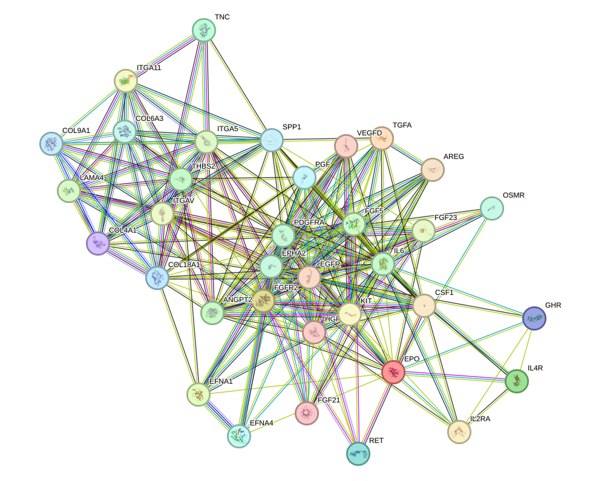
Building on this network overview, the following paragraphs introduce several proteins highlighted by the function enrichment analysis.
During the function enrichment analysis, we identified serveral significant proteins. We will introduce them in-details in the following.
Among the listed proteins, vascular endothelial growth factor A stands out as the most plausibly relevant to arrhythmia because its biology is tightly linked to myocardial perfusion, endothelial function, vascular permeability, and intracellular signaling pathways that influence cardiac remodeling. Disturbances in vascular endothelial growth factor A driven angiogenic signaling can contribute to myocardial ischemia, microvascular dysfunction, and maladaptive tissue remodeling, all of which are established substrates for atrial and ventricular arrhythmias. In addition, vascular endothelial growth factor A mediated activation of nitric oxide synthase two and nitric oxide synthase three, together with nitric oxide production, may be important because endothelial nitric oxide signaling affects coronary blood flow, myocardial oxygen delivery, redox balance, and electrophysiological stability. Its effects on phosphoinositide three kinase and protein kinase B, mitogen activated protein kinase and extracellular signal regulated kinase, SRC proto-oncogene non-receptor tyrosine kinase, and focal adhesion signaling also suggest broader roles in cell survival, cytoskeletal organization, and structural remodeling, processes that can indirectly alter conduction properties and promote arrhythmogenic substrate formation. The mention of soluble decoy isoforms further implies that both excess and deficiency of vascular endothelial growth factor bioavailability could be pathophysiologically relevant, particularly in disease states characterized by abnormal vascular remodeling or inflammation. Therefore, vascular endothelial growth factor A appears to be the clearest candidate in this list for a meaningful mechanistic connection to arrhythmia, primarily through vascular and remodeling mediated pathways rather than direct ion channel regulation.
In contrast, the next protein appears less directly connected to the arrhythmia-related mechanisms emphasized above.
Collagen type nine alpha one chain appears substantially less relevant to arrhythmia than vascular endothelial growth factor A. Its annotated function is highly tissue-specific and primarily structural, relating to cartilage and ocular extracellular matrix organization rather than cardiac electrophysiology, myocardial conduction, or vascular signaling. Although extracellular matrix proteins can, in principle, influence arrhythmia when involved in cardiac fibrosis or structural remodeling, the function provided here does not indicate a direct role for collagen type nine alpha one chain in the heart or in mechanisms commonly associated with arrhythmogenesis. Consequently, based on the supplied annotation alone, collagen type nine alpha one chain does not stand out as a strong arrhythmia-related candidate.
Beyond individual proteins, the interaction data also suggest that a subset of proteins may act together as a coordinated functional cluster.
There are also small set of proteins function together to form a cluster. The cluster is best interpreted as a coordinated tissue remodeling and signal integration network that couples paracrine growth factor signaling, inflammatory cytokine responses, endothelial and angiogenic control, and matrix dependent cell adhesion. This conclusion is supported by the dense, high-confidence connected component with 33 proteins and 79 retained edges and a mean retained protein-protein interaction score of 0.866, as well as by the prominence of hub proteins involved in signal propagation, especially epidermal growth factor receptor, platelet derived growth factor receptor alpha, interleukin 6, and hepatocyte growth factor. Several retained associations are highly concordant with the supplied functions, including amphiregulin and epidermal growth factor receptor with score 0.999, epidermal growth factor receptor and transforming growth factor alpha with score 0.999, ephrin A1 and EPH receptor A2 with score 0.999, integrin subunit alpha V and secreted phosphoprotein 1 with score 0.999, fibroblast growth factor 5 and fibroblast growth factor receptor 2 with score 0.998, and epidermal growth factor receptor and platelet derived growth factor receptor alpha with score 0.986; however, these STRING-based associations should be interpreted as high-confidence functional relationships and not uniformly as direct physical contacts unless physical evidence is explicitly included. Functionally, the module contains multiple mediators of endothelial proliferation, migration, sprouting, and vascular stability, including ephrin A1 and EPH receptor A2 signaling, tenascin C mediated angiogenesis, angiopoietin 2 and TEK receptor tyrosine kinase contextual regulation of endothelial behavior, vascular endothelial growth factor D and fms related receptor tyrosine kinase 4 driven endothelial survival and migration, and anti-angiogenic counterweights such as thrombospondin 2 and the arresten domain of collagen type four alpha one chain. In parallel, the cluster includes inflammatory and immune regulators, notably interleukin 6 trans-signaling, interleukin 4 receptor dependent Janus kinase and signal transducer and activator of transcription six signaling, oncostatin M receptor associated signal transducer and activator of transcription activation, interleukin 2 receptor subunit alpha mediated immune tolerance, and colony stimulating factor 1 receptor linked macrophage and monocyte survival and inflammatory chemokine release. The extracellular matrix and adhesion arm, represented by integrin subunit alpha V, integrin subunit alpha 5, integrin subunit alpha 11, tenascin C, laminin subunit alpha 4, collagen type six alpha 3 chain, and secreted phosphoprotein 1, further indicates active control of cell adhesion, migration, and matrix remodeling. In the context of arrhythmia, these combined functions are relevant because arrhythmogenic substrates commonly emerge from maladaptive myocardial remodeling rather than from a single electrophysiologic pathway alone. The supplied functions indicate that erythropoietin can inhibit apoptosis and inflammatory responses in cardiomyocytes through sphingosine 1 phosphate, cyclic adenosine monophosphate, and protein kinase B dependent signaling [19], suggesting one cardioprotective axis within the cluster. Conversely, the strong representation of interleukin 6 centered inflammatory signaling, macrophage associated colony stimulating factor 1 pathways, and multiple angiogenic and remodeling programs implies a capacity to promote inflammatory tissue remodeling, altered vascular behavior, and extracellular matrix reorganization. Such processes can plausibly contribute to electrical instability by changing myocardial structural integrity, the intercellular coupling environment, and local perfusion support. Growth factor crosstalk involving epidermal growth factor receptor, hepatocyte growth factor, platelet derived growth factor receptor alpha, and fibroblast growth factor receptor 2 may further amplify proliferative and survival signaling during repair responses, while integrin and matrix linked proteins such as integrin subunit alpha V, tenascin C, secreted phosphoprotein 1, and collagens may favor persistent remodeling. Overall, the cluster is therefore most consistent with a cardio-remodeling niche that integrates inflammation, vascular adaptation, survival signaling, and matrix remodeling; in arrhythmia, this network may contribute both protective responses after injury and pro-arrhythmic structural remodeling if these pathways become chronic or dysregulated. [19] [347] [180] [115] [114] [223] [225] [257] [259] [260] [261] [262] [263] [113] [14] [15] [16] [17]
The pathway described as an overview of proinflammatory and profibrotic mediators encompasses a network of immune, stress-response, and tissue-remodeling signals that may convert cardiac injury or hemodynamic overload into sustained inflammation and fibrosis. In the atrial myocardium, this pathway is initiated when myocardial stress, stretch, metabolic disturbance, neurohormonal activation, or cell damage activates innate immune sensing systems, particularly Toll-like receptors and nucleotide-binding oligomerization domain-like receptors. These sensors stimulate downstream inflammatory programs that increase the production of cytokines, chemokines, and other mediators that recruit and activate immune cells, amplify local inflammatory signaling, and alter the phenotype of resident cardiac fibroblasts and myocytes. Persistent activation of these signals promotes extracellular matrix deposition, fibroblast expansion, and structural remodeling of atrial tissue. In parallel, inflammatory signaling affects ion channel function, calcium handling, intercellular coupling, and electrophysiological stability, thereby linking tissue injury to electrical dysfunction. The pathway is therefore not limited to a passive wound-healing response; rather, it may represent an integrated immunomolecular axis through which inflammation and fibrosis jointly reshape atrial structure and function, creating a myocardial substrate that is vulnerable to conduction abnormalities and rhythm disturbances. The cited review places this pathway within the broader concept of atrial myopathy, emphasizing that inflammatory and fibrotic mediators are central drivers of structural, functional, electrical, metabolic, and neurohormonal remodeling in heart failure and related atrial disease states. [348]
Building on this pathway-level framework, the provided publication further suggests that proinflammatory and profibrotic mediators may be closely related to arrhythmia because they mechanistically connect myocardial stress with atrial remodeling and electrical instability. According to the review, innate immune activation in the atrium, particularly through Toll-like receptors and nucleotide-binding oligomerization domain-like receptors, translates cardiac stress into signals that are explicitly described as pro-inflammatory, profibrotic, and pro-arrhythmic. This point is important because inflammatory mediators can directly disturb atrial electrophysiology, while profibrotic mediators promote extracellular matrix accumulation and fibrosis, which in turn disrupt tissue architecture and conduction continuity. Together, these changes may foster atrial myopathy, a state characterized by structural and electrical remodeling that facilitates abnormal impulse generation and propagation. The publication further argues that atrial myopathy is not merely a consequence of heart failure but may also act as an active driver of disease progression, with potential implications for arrhythmia prevention. Thus, this pathway may contribute to arrhythmia by creating both the trigger and the substrate for disordered cardiac rhythm: inflammation enhances cellular excitability and stress signaling, whereas fibrosis produces conduction heterogeneity and reentry-prone tissue organization. In this framework, proinflammatory and profibrotic mediators appear to be central pathogenic elements that couple immune activation to atrial remodeling and ultimately to arrhythmic susceptibility. [348]
To complement this conceptual interpretation, the enrichment results provide a quantitative view of how strongly this pathway is represented within the arrhythmia-associated protein set.
There were 32 arrhythmia-associated proteins significantly enriched in the pathway described as an overview of proinflammatory and profibrotic mediators, consistent with a quantitatively substantial inflammatory and tissue-remodeling signal set relevant to atrial structural and electrical instability. Within this 32-protein set, 77 high-confidence protein-protein association edges were retained, connecting 25 proteins, which indicates that 78.1 percent of the proteins were incorporated into the retained interaction network, while 7 proteins, corresponding to 21.9 percent, had no retained edges under the current filtering criteria. The mean retained interaction score was 0.898, supporting a generally strong confidence level for the observed associations. Network centrality was led by tumor necrosis factor with degree 14 and weighted score 12.464, chemokine ligand 9 with degree 14 and weighted score 12.449, chemokine ligand 10 with degree 13 and weighted score 12.295, interleukin 6 with degree 12 and weighted score 10.863, and chemokine ligand 20 with degree 11 and weighted score 9.817, indicating that inflammatory cytokine and chemokine signaling occupies the most connected positions in this enriched pathway set.
This overall connectivity pattern is further clarified by the structure of the retained subnetwork.
The retained network was dominated by one connected component containing 25 proteins and 77 edges with the same mean score of 0.898, further indicating that most retained associations were concentrated in a single coherent inflammatory interaction structure rather than dispersed across multiple small subnetworks. The strongest retained protein pairs reached scores from 0.997 to 0.999, including chemokine ligand 21 with chemokine ligand 9 at 0.999, chemokine ligand 21 with chemokine ligand 10 at 0.999, chemokine ligand 10 with chemokine ligand 9 at 0.999, chemokine ligand 21 with lymphotactin at 0.998, chemokine ligand 20 with chemokine ligand 17 at 0.997, chemokine ligand 9 with lymphotactin at 0.997, chemokine ligand 21 with chemokine ligand 23 at 0.997, and matrix metallopeptidase 3 with secreted phosphoprotein 1 at 0.997. These values support a dense high-confidence association structure centered on inflammatory recruitment and matrix-remodeling mediators, while still reflecting association evidence rather than necessarily direct physical binding.
For visual context, we include the corresponding network representation below.
We include the protein-protein interaction network visualization below and provide the corresponding STRING interactive network page for detailed inspection.
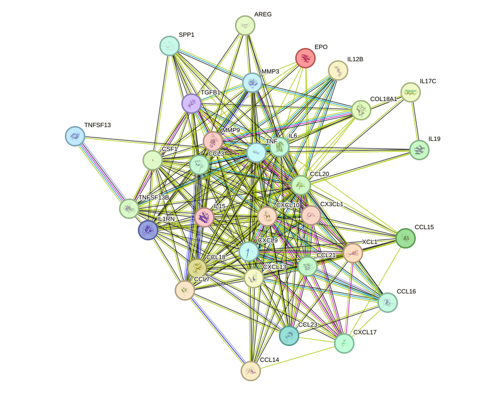
With this network context in place, the function enrichment analysis highlights several proteins that may be of particular interest and are introduced below in greater detail.
VEGFA stands out as one of the most plausible arrhythmia-relevant proteins in this list because myocardial perfusion, endothelial integrity, and nitric oxide signaling are tightly linked to electrical stability in the heart. Through its effects on angiogenesis and vascular permeability, VEGFA can influence myocardial oxygen delivery and tissue remodeling, both of which are important determinants of arrhythmogenic substrate formation. Its induction of NOS2 and NOS3 and nitric oxide production is particularly notable, as endothelial nitric oxide signaling modulates coronary vascular tone, myocardial perfusion, and cardiomyocyte electrophysiology indirectly through redox- and kinase-dependent mechanisms. In addition, activation of AKT, MAPK, SRC, and FAK pathways suggests a broader role in stress adaptation, cell survival, and structural remodeling. In disease settings, dysregulated VEGFA signaling may therefore contribute to arrhythmia by promoting ischemia-associated remodeling, endothelial dysfunction, abnormal vascular permeability, and fibrosis-related changes in conduction properties.
A related but distinct example is EPO, which may be relevant to arrhythmia because it intersects with cardiomyocyte survival, inflammation, and systemic oxygen-carrying capacity.
EPO is highly relevant to arrhythmia because it directly intersects with cardiomyocyte survival, inflammation, and systemic oxygen-carrying capacity. The most important feature in this context is its reported anti-apoptotic and anti-inflammatory effect in cardiomyocytes through S1P- and cAMP-dependent AKT signaling [19]. Cardiomyocyte death and inflammatory signaling are major contributors to structural remodeling, conduction heterogeneity, and scar formation, all of which increase arrhythmia susceptibility. In addition, its role in iron regulation and erythropoietic adaptation after hemorrhage [14] [15] [16] [17] may be relevant because iron deficiency, anemia, and impaired oxygen delivery can exacerbate myocardial stress and precipitate rhythm disturbances, especially in patients with heart failure or ischemic heart disease. Thus, EPO may influence arrhythmia risk through both direct myocardial protective mechanisms and indirect systemic effects on oxygen transport and inflammatory-metabolic homeostasis. [14] [15] [16] [17] [19] [18] [20]
Another protein of interest is IL17C, which appears relevant primarily through its placement within inflammatory signaling mechanisms already implicated in arrhythmogenic remodeling.
IL17C is potentially relevant to arrhythmia because inflammatory signaling is a well-established driver of both atrial and ventricular arrhythmogenesis. Its ability to activate nuclear factor kappa-light-chain-enhancer of activated B cells and mitogen-activated protein kinase pathways and to amplify inflammatory responses in cooperation with tumor necrosis factor and interleukin 1 beta suggests that it could contribute to a pro-arrhythmic inflammatory milieu. These pathways are strongly associated with adverse electrical and structural remodeling, including altered ion channel expression, gap junction dysfunction, and fibrosis. Although IL17C is described primarily in epithelial innate immunity, the broader biological principle is important: heightened interleukin 17 family signaling can promote chronic inflammation and tissue injury, which are recognized mechanisms in arrhythmia development. Therefore, IL17C is noteworthy as a candidate marker or mediator of inflammation-associated arrhythmic risk, particularly in systemic inflammatory states.
In contrast to this predominantly pro-inflammatory interpretation, IL19 may be of interest because its reported functions suggest a potentially compensatory role.
IL19 is of interest in arrhythmia biology because it combines anti-inflammatory and proangiogenic activities, two processes that can substantially affect myocardial remodeling. Inflammation is central to arrhythmia initiation and maintenance, and IL19 may counteract this by shifting immunity toward a less inflammatory T helper 2 phenotype [39]. Its activation of JAK and STAT, particularly signal transducer and activator of transcription 3 [41], is also relevant because signal transducer and activator of transcription 3 signaling is involved in cardioprotection, stress responses, and remodeling. Moreover, its proangiogenic properties [38] may influence microvascular adaptation in injured myocardium. Depending on disease context, these effects could be protective by limiting inflammatory injury and supporting vascular repair, thereby reducing arrhythmogenic remodeling. For this reason, IL19 may represent a potentially compensatory or protective immune mediator in cardiac disease states associated with arrhythmia. [38] [39] [40] [41]
A further extension of this remodeling-centered interpretation is provided by AREG, whose relevance may lie more directly in fibroblast biology and tissue repair.
AREG is noteworthy because epidermal growth factor receptor ligand signaling is closely linked to cellular proliferation, survival, and tissue remodeling. In the context of arrhythmia, its mitogenic effect on fibroblasts is especially important. Cardiac fibroblast activation and expansion are major determinants of fibrosis, which disrupts electrical conduction, increases tissue heterogeneity, and creates a substrate for reentry. Although the provided annotation does not explicitly mention cardiac cells, the known biology of amphiregulin as an epidermal growth factor receptor ligand supports a plausible connection to myocardial remodeling and repair responses. Consequently, AREG may be relevant to arrhythmia primarily through its potential contribution to fibrotic remodeling and altered intercellular signaling within the injured heart.
Along similar lines, chemokine-regulatory proteins such as CCL14 may influence arrhythmia more indirectly by shaping inflammatory cell recruitment into stressed tissue.
CCL14 is potentially relevant to arrhythmia because chemokine regulation is a key determinant of inflammatory cell trafficking into injured tissues. The annotation emphasizes control of inflammatory chemokine bioavailability and leukocyte recruitment, including endothelial transcytosis and buffering of circulating chemokine levels. These processes are highly pertinent to cardiac inflammation, where monocyte and leukocyte infiltration can promote fibrosis, myocyte injury, and conduction abnormalities. Although the connection to arrhythmia is more indirect than for VEGFA or EPO, proteins that shape chemokine gradients may influence the intensity and duration of inflammatory remodeling in the heart, thereby affecting arrhythmogenic substrate development.
Finally, IL12B adds a stress-response and proteostasis dimension to this set of candidates, which may also be relevant to myocardial electrical instability.
IL12B is interesting from an arrhythmia perspective because autophagy, oxidative stress, and innate immune signaling are all implicated in myocardial remodeling and electrophysiological instability. The ability of this protein to regulate ubiquitinated protein clearance and to activate the KEAP1-NRF2 antioxidant pathway under oxidative stress [349] is particularly relevant, as oxidative injury can alter ion channel behavior, calcium handling, and gap junction integrity. Its role in modulating innate immune responses and interleukin 12 secretion [350] further suggests participation in inflammatory signaling networks that may influence cardiac remodeling. While the evidence provided does not directly place IL12B in arrhythmia pathways, its functions align with core mechanisms known to contribute to arrhythmogenesis, especially under conditions of stress, inflammation, and proteostatic imbalance. [349] [350]
Beyond these individually discussed proteins, the network also contains a smaller functionally coordinated cluster that may help contextualize the broader inflammatory architecture.
There are also small set of proteins function together to form a cluster. The overall organization of this cluster supports a coordinated inflammatory program in which chemokines such as XCL1, CCL18, CCL20, CCL21, CCL23, CXCL9, CXCL10, CXCL13, CXCL17, and CX3CL1 regulate selective leukocyte chemotaxis and immune-cell positioning, while cytokines and immune regulators including TNF, IL6, IL15, TGFB1, TNFSF13, TNFSF13B, CSF1, SPP1, and IL1RN modulate immune activation, survival, and inflammatory signaling. The retained network structure is consistent with this interpretation: the highest-degree nodes are TNF (degree 14), CXCL9 (degree 14), CXCL10 (degree 13), IL6 (degree 12), and CCL20 (degree 11), indicating that inflammatory cytokine signaling and interferon-associated chemokine programs form the core of the module. Particularly strong associations among CCL21, CXCL9, CXCL10, XCL1, CXCL13, and CCL23 (scores 0.997-0.999) support a tightly coordinated leukocyte-recruitment axis, although these STRING-derived associations should be interpreted as high-confidence functional relationships and not uniformly as direct physical binding unless explicitly supported by the evidence type. Additional components, including CSF1-driven mononuclear phagocyte survival and differentiation, CX3CL1-mediated monocyte or macrophage and microglial recruitment, and MMP3 or MMP9-associated matrix remodeling, indicate that the cluster could couple inflammatory cell influx to structural remodeling. In the context of arrhythmia, such a program is plausibly relevant because sustained cytokine and chemokine activity can promote inflammatory cell accumulation within cardiac tissue, amplify local TNF- and IL6-centered inflammatory signaling, and drive extracellular matrix turnover through metalloproteinases and TGFB1-linked remodeling pathways. These processes may alter tissue integrity, cellular survival, and the inflammatory microenvironment, thereby favoring arrhythmogenic substrate formation through immune-mediated tissue injury and remodeling. Thus, the cluster is most consistent with an inflammation-remodeling axis that may contribute to arrhythmia by linking leukocyte recruitment, cytokine amplification, and matrix reorganization. [56] [57] [58] [59] [60] [61] [62] [265] [266] [96] [97] [98] [99] [100] [101] [102] [103] [104] [105] [106] [107] [108] [109] [110] [91] [92] [93] [94] [95] [82] [83] [84] [85] [86] [90] [87] [88] [89] [115] [114] [149] [150] [151] [152] [205] [206] [116] [117] [118] [305] [119]
The collagen metabolic process comprises the synthesis, post-translational modification, secretion, extracellular assembly, cross-linking, turnover, and degradation of collagen, the principal tensile protein family of connective tissues and a major structural component of the cardiac extracellular matrix. In the heart, collagen types one and three are especially important for maintaining myocardial architecture, mechanical coupling, and the spatial organization of cardiomyocytes, fibroblasts, vessels, and the specialized conduction system. This pathway begins with transcription of collagen genes and translation of procollagen polypeptides, followed by critical intracellular modifications including hydroxylation of proline and lysine residues, which are required for triple-helix stability, secretion, and proper fibril formation. After secretion, collagen is incorporated into the extracellular matrix, where it interacts with integrins, fibronectin, elastin, latent growth factor complexes, and matrix-remodeling enzymes such as matrix metalloproteinases and their inhibitors. Physiologically, collagen metabolism supports tissue integrity and repair after injury. Pathologically, excessive collagen synthesis, impaired degradation, abnormal cross-linking, or disordered matrix organization promote fibrosis, increase tissue stiffness, separate cardiomyocyte bundles, distort anisotropic impulse propagation, and alter the microenvironment of ion channels and calcium-handling systems. Because the sinoatrial node, atrial myocardium, ventricular myocardium, papillary muscle regions, and scar border zones all depend on precise structural continuity for normal impulse generation and conduction, dysregulation of collagen metabolism is highly relevant to both bradyarrhythmia and tachyarrhythmia. [185] [351] [352] [353] [354] [188] [355] [356] [357] [358] [215] [359] [360] [182] [361] [362]
Against this biological background, the collected literature suggests that dysregulation of the collagen metabolic process is not merely a bystander of cardiac injury but may represent a central determinant of arrhythmogenic substrate formation. Across atrial, ventricular, and sinoatrial contexts, increased collagen synthesis, collagen deposition, or broader fibrosis-related extracellular matrix remodeling repeatedly associates with impaired impulse generation, slowed or heterogeneous conduction, and increased susceptibility to lethal rhythm disturbances. Human myocardial transcriptomic analysis at sudden cardiac death showed that arrhythmic deaths were enriched for genes linked to the collagen-containing extracellular matrix and that the highest combined expression of mature fibrosis markers and active fibrosis markers identified the group with the greatest proportion of arrhythmic death, strongly implicating active collagen remodeling in the immediate substrate for fatal arrhythmia [185]. In atrial fibrillation, multiple studies converge on the concept that inflammatory and neurohumoral signaling drives fibroblast activation and collagen production, thereby producing atrial structural remodeling that sustains reentry; this is supported by elevated circulating collagen remodeling proteins in patients with atrial fibrillation, by experimental evidence that prostaglandin signaling restrains angiotensin two-induced collagen synthesis and lowers atrial fibrillation vulnerability, and by mechanistic work showing that potassium calcium-activated channel subfamily N member four and forkhead box O three promote fibroblast activation and collagen secretion in profibrotic settings [351] [352] [353] [354] [188]. Similar principles extend to the sinoatrial node, where fibrosis and collagen biosynthetic programs appear to impair pacemaking and conduction: male human sinoatrial node tissue shows enrichment of collagen biosynthetic and fibrogenic gene sets linked to higher vulnerability to conduction impairment and atrial fibrillation, pulmonary arterial hypertension induces upregulation of collagen type one and related fibrosis genes in the sinoatrial node together with sinus node dysfunction, and therapeutic reduction of sinoatrial fibrosis restores intrinsic pacemaker activity in preclinical sinus node dysfunction models [355] [356] [357]. In the ventricle, collagen accumulation likewise contributes to arrhythmia by creating discontinuous electrical propagation pathways and coupling structural remodeling to calcium dysregulation. In a long-chain three-hydroxyacyl-coenzyme A dehydrogenase deficiency mouse model, diffuse collagen deposition accompanied conduction abnormalities, prolonged depolarization and repolarization intervals, and heightened atrial and ventricular arrhythmia susceptibility [358]. In pacing-induced heart failure, cardiac resynchronization therapy reduced fibrosis, suppressed collagen synthesis in fibroblasts, and increased the threshold for ventricular fibrillation, indicating that anti-fibrotic remodeling is mechanistically linked to anti-arrhythmic benefit [215]. In premature ventricular contraction-induced cardiomyopathy and obesity-associated remodeling, increased interstitial collagen and fibrosis markers tracked with adverse remodeling and greater ventricular arrhythmia risk [359] [360]. Additional studies reinforce that collagen metabolic disturbance can be either excessive or defective yet still arrhythmogenic: environmental toxicant exposure in zebrafish persistently inhibited collagen synthesis and extracellular matrix production while worsening arrhythmia after exposure cessation, suggesting that insufficient or abnormal collagen assembly can destabilize myocardial structure and calcium homeostasis as well as excess fibrosis can [182]. Finally, biomaterial and pathology studies support the functional importance of collagen architecture itself, showing that conductive collagen-based hydrogel therapy can reduce post-infarct ventricular tachycardia, whereas mature organized collagen fibrosis in mitral valve prolapse marks a persistent arrhythmogenic substrate [361] [362]. Collectively, these findings support a unifying model in which abnormal collagen metabolism remodels the cardiac extracellular matrix, alters mechanical and electrical coupling, perturbs conduction pathways and calcium handling, and thereby promotes initiation, maintenance, and lethality of arrhythmias. [185] [351] [352] [353] [354] [188] [355] [356] [357] [358] [215] [359] [360] [182] [361] [362]
Consistent with this literature context, the enrichment analysis identified 14 arrhythmia-associated proteins significantly mapped to the collagen metabolic process, a pathway that governs collagen synthesis, post-translational modification, extracellular matrix assembly, turnover, and degradation, all of which are highly relevant to myocardial structural integrity and impulse conduction. In the context of arrhythmia, this enrichment is consistent with the established importance of extracellular matrix remodeling in shaping tissue stiffness, conduction discontinuity, and the microenvironment surrounding cardiomyocytes and the specialized conduction system.
To further clarify how these proteins may relate to one another, the retained interaction network provides a compact view of the highest-confidence associations within this enriched set. Within this 14-protein set, 12 high-confidence protein-protein interaction edges were retained, connecting 9 proteins, with a mean retained interaction score of 0.881, indicating a compact and relatively strong interaction structure among the connected subset. Network centrality was led by matrix metallopeptidase 3 with degree 6 and weighted score 5.154, followed by matrix metallopeptidase 9 with degree 4 and weighted score 3.766, interleukin 6 with degree 3 and weighted score 2.806, transforming growth factor beta 1 with degree 3 and weighted score 2.715, and matrix metallopeptidase 7 with degree 3 and weighted score 2.52. The network was organized into 2 connected components, with the larger component containing 7 proteins and 11 edges at a mean score of 0.889, and a smaller 2-protein component containing 1 edge at a mean score of 0.802, while 5 proteins, namely collagen type five alpha one chain, fibroblast activation protein alpha, microfibril associated protein 4, matrix metallopeptidase 8, and serine protease 2, had no retained edges under the current high-confidence criteria. Among the strongest retained associations were matrix metallopeptidase 10 with matrix metallopeptidase 3 at score 0.973, matrix metallopeptidase 9 with transforming growth factor beta 1 at 0.968, interleukin 6 with transforming growth factor beta 1 at 0.960, interleukin 6 with matrix metallopeptidase 9 at 0.959, and matrix metallopeptidase 3 with matrix metallopeptidase 9 at 0.956, supporting a dense remodeling-centered interaction core without over-interpreting these associations as uniformly direct physical binding.
To complement the summary statistics above, we include the protein-protein interaction network visualization below, together with the STRING interaction resource for interactive inspection of the enriched pathway network.
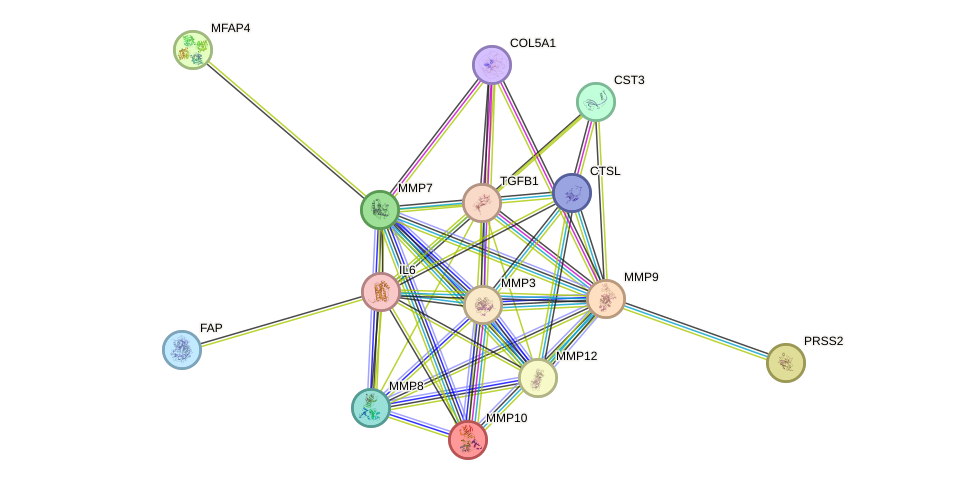
Building on the network-level overview, the function enrichment analysis identified several significant proteins that may merit individual consideration. We introduce them in detail in the following.
COL5A1 is among the most relevant proteins in this list for arrhythmia because it participates in extracellular matrix organization and fibrillar collagen biology, processes that are central to myocardial structural remodeling. Although type V collagen is a quantitatively minor collagen, it regulates collagen fibrillogenesis and connective tissue architecture. In the heart, abnormal extracellular matrix deposition and fibrosis alter tissue stiffness, disrupt electrical coupling between cardiomyocytes, and promote conduction heterogeneity, thereby creating a substrate for both atrial and ventricular arrhythmias. The reported interactions of type V collagen with heparan sulfate and thrombospondin further support a role in matrix signaling and cell–matrix communication, which are important in fibrotic remodeling. Thus, COL5A1 stands out primarily as a potential contributor to arrhythmogenesis through structural remodeling and fibrosis rather than direct ion-channel effects.
In a related manner, matrix degradation enzymes in the same enriched set may influence arrhythmia susceptibility through complementary effects on collagen turnover and scar architecture. MMP8 is highly relevant to arrhythmia because it directly remodels the extracellular matrix by cleaving major fibrillar collagens. Cardiac rhythm disorders, especially atrial fibrillation, are strongly linked to pathological matrix turnover in which excessive collagen deposition, degradation, and replacement fibrosis produce anisotropic conduction and electrical instability. By degrading type I and III collagens, the principal structural collagens in the myocardium, MMP8 may influence scar formation, matrix turnover, and the balance between fibrosis and tissue repair. This is mechanistically important because both excessive matrix accumulation and disordered collagen degradation can destabilize myocardial architecture and favor reentry. Therefore, MMP8 stands out as a plausible mediator of arrhythmia susceptibility through extracellular matrix remodeling, inflammatory tissue injury responses, and fibrosis-associated conduction abnormalities.
Beyond fibrillar collagen turnover itself, other extracellular matrix-associated proteins in the set may modify the mechanical environment in ways that are potentially relevant to arrhythmogenesis. MFAP4 is of potential interest in arrhythmia because it is linked to extracellular microfibril and elastic fiber biology, as well as calcium-dependent adhesion-related processes. Although its connection to arrhythmia is less direct than that of collagen-remodeling proteins, maintenance of elastic fiber integrity and cell–matrix interactions can influence myocardial mechanical properties and structural remodeling. In diseased atrial or ventricular tissue, altered matrix elasticity and disturbed intercellular interactions may contribute to mechano-electric dysfunction, a recognized promoter of arrhythmogenesis. The mention of calcium-dependent adhesion is also notable because calcium handling and calcium-sensitive signaling are central to cardiac excitability, although the available functional description does not establish a direct electrophysiological role. Overall, MFAP4 may be relevant as a modifier of the extracellular environment that supports structural substrates for arrhythmia.
Along similar lines, proteins that regulate extracellular proteolytic balance may have a more indirect but still biologically plausible connection to remodeling-associated arrhythmia. FAP may have a secondary connection to arrhythmia through regulation of proteolytic activity in the extracellular space. Inhibition of plasmin and related proteases can affect matrix turnover, inflammatory signaling, and tissue remodeling, all of which are relevant to the development of a pro-arrhythmic substrate. Because plasmin participates in fibrinolysis and can indirectly influence extracellular matrix degradation and activation of other protease systems, altered inhibitory control could modulate fibrosis or post-injury remodeling in the heart. However, compared with COL5A1 and MMP8, the arrhythmia link for FAP is more indirect and currently appears to be mediated through broad effects on protease balance and structural remodeling rather than a specific established mechanism in cardiac electrophysiology.
By contrast, not all enriched proteins can be prioritized to the same extent on the basis of the current annotation. Based on the supplied annotation, PRSS2 cannot be meaningfully prioritized for arrhythmia interpretation because no function was provided. Without a defined role in extracellular matrix remodeling, ion handling, inflammation, fibrosis, or cell–cell coupling, there is insufficient evidence from the current input to connect this protein to arrhythmogenic mechanisms.
At the network level, there is also a small set of proteins that function together to form a cluster, and this grouping may help place the individual proteins within a broader remodeling framework. Functionally, this cluster converges on coordinated control of matrix turnover and remodeling-associated signaling. MMP3, MMP7, and MMP10 share overlapping substrate specificities for fibronectin and multiple gelatin and collagen species, while MMP3 and MMP10 can activate procollagenase and MMP3 can activate other matrix metallopeptidases including MMP9. MMP12 contributes strong elastolytic activity, further emphasizing proteolytic remodeling capacity. MMP9 adds a distinct role in elastic fiber formation, ultrastructural connections between elastic laminae and smooth muscle cells, collagen fibril assembly through lysyl oxidase activation, elastin coacervation, and regulation of vascular smooth muscle cell proliferation through angiotensin signaling [149] [150] [151] [152]. IL6 contributes a pro-inflammatory axis through soluble IL6 receptor-mediated trans-signaling, which is described as causative for the pro-inflammatory properties of IL6 and important in chronic inflammatory disease; in complex with IL6 it is also required for VEGF induction [115] [114]. TGFB1 provides an additional remodeling-associated signal through regulation of cell death. The network structure is consistent with a tightly integrated remodeling module rather than isolated proteins: all 7 proteins fall into one connected component, and the strongest retained associations include MMP10-MMP3 (score 0.973; supported by experimental, functional, and physical evidence types), MMP3-MMP9 (0.956; database, functional, and physical evidence types), MMP9-TGFB1 (0.968), IL6-TGFB1 (0.960), and IL6-MMP9 (0.959). Because several high-scoring edges rely on functional, database, text-mining, or mixed evidence, these associations should be interpreted as high-confidence biological relationships and not uniformly as direct physical binding. In relation to arrhythmia, the cluster may contribute by promoting inflammatory remodeling and extracellular matrix reorganization that can alter the structural integrity and mechanical properties of cardiovascular tissue. Proteolytic degradation of matrix components, altered collagen and elastin assembly and cross-linking, smooth muscle maturation effects, and IL6-driven chronic inflammatory signaling together provide plausible mechanisms for tissue remodeling that could favor arrhythmogenic substrate formation, particularly through fibrosis-like matrix alteration, disturbed wall integrity, and abnormal reparative signaling. Under the current retained-edge criteria, however, the network most strongly supports a remodeling and inflammation module and only indirectly links this biology to arrhythmia. [149] [150] [151] [152] [115] [114] [205] [206]
A second, much smaller connected component may point to a more focused proteolytic regulatory relationship, although the available network support is limited. Functionally, the cluster links protease inhibition (CST3) with protease-mediated transcriptional regulation (CTSL), suggesting a compact module involved in balancing cysteine protease activity and its downstream effects on gene regulatory programs. CTSL has a defined role in cell cycle progression through cleavage of CUX1, and downstream translation initiation can produce nuclear CTSL isoforms that further modify CUX1 function [207]. CST3, as an inhibitor of cysteine proteinases, may act as a local counter-regulator of this class of enzymes, consistent with a proteolytic regulatory axis. In the retained protein association network, the cluster is small and fully connected, with 2 proteins linked by 1 high-confidence association (score 0.802), and both CST3 and CTSL are the highest-degree nodes within this component (degree 1 each). However, the network evidence is limited under the current retained-edge criteria, and the single retained CST3-CTSL edge is annotated as string_functional; therefore, it should be interpreted as a high-confidence functional association rather than direct physical binding. With respect to arrhythmia, dysregulation of protease activity and proteolytic control of transcriptional programs could plausibly contribute to pathological remodeling by altering cellular homeostasis and cell cycle-related signaling. In this context, imbalance between CTSL activity and CST3-mediated inhibition may influence proteolytic tone and transcription factor processing, which could contribute to arrhythmia-associated tissue remodeling, although the present cluster provides a focused functional hypothesis rather than extensive network support. [207]
Lipid localization comprises the cellular processes that transport lipids to defined subcellular sites and maintain their spatial distribution once delivered. This pathway is fundamental to membrane organization because different lipid species, including cholesterol, phosphatidylinositol 4,5-bisphosphate, phosphatidic acid, lysophosphatidic acid, triglycerides, and other neutral or phospholipid intermediates, are not uniformly distributed within the cell. Instead, they are selectively enriched at the plasma membrane, intercellular junctions, mitochondria-associated membranes, endoplasmic reticulum contact sites, lipid droplets, and other specialized microdomains. Such localization shapes membrane fluidity, curvature, electrostatics, protein trafficking, organelle communication, and the activity of ion channels and signaling complexes. In excitable tissues such as the heart, precise lipid localization is especially important because electrical impulse generation and propagation depend on the correct membrane targeting and gating of sodium, potassium, and calcium handling proteins. Disturbance of lipid localization can therefore alter channel density, channel conformation, intracellular signaling, oxidative stress, and metabolic homeostasis. The publications provided suggest that this pathway is relevant to arrhythmia through several nonexclusive mechanisms, including redistribution of membrane cholesterol that controls sodium channel localization and inactivation, localized phosphoinositide regulation of potassium channel gating, abnormal partitioning of phospholipid and neutral lipid intermediates during metabolic disease, and focal intracellular lipid accumulation that modifies conduction properties of the myocardium. [209] [363] [364] [365] [366] [367] [368]
Building on this general framework, the collected studies further support a mechanistic link between lipid localization and arrhythmia by indicating that the subcellular position of lipids within cardiomyocytes may strongly influence electrical stability. A particularly direct example is the demonstration that fibroblast growth factor 13 regulates local accessible membrane cholesterol in cardiomyocytes, with cholesterol being polarized at the intercalated disc where most cardiac sodium channels are located; loss of fibroblast growth factor 13 abolished this cholesterol distribution, displaced sodium channels from the intercalated disc, and altered steady-state inactivation, thereby providing a clear route by which defective cholesterol localization can promote arrhythmogenic sodium channel dysfunction [209]. A second ion channel mechanism involves phosphatidylinositol 4,5-bisphosphate, whose localized binding to the small-conductance calcium-activated potassium channel family member two channel complex was shown to facilitate channel activation through a defined structural interaction; because this channel family is an established therapeutic target in atrial arrhythmia, these findings suggest that altered phosphoinositide localization in cardiomyocytes may reshape repolarizing current and arrhythmic susceptibility [363]. Beyond sarcolemmal channel regulation, disturbed intracellular lipid localization and homeostasis also appear plausibly arrhythmogenic. Loss of transport and golgi organization protein family member two caused abnormal lipid droplet enlargement, altered phosphatidic acid and lysophosphatidic acid balance, oxidative stress, and lipid peroxidation, offering a possible explanation for why pathogenic variants in this gene are associated with cardiomyopathy and cardiac arrhythmias, especially during metabolic stress [364]. In a dietary lipotoxicity model, high-fat feeding produced intracellular cardiac lipid droplet accumulation, excess diacylglycerol species, stress kinase activation, calcium spark abnormalities, and increased vulnerability to ventricular tachyarrhythmia, whereas pioglitazone reduced excess lipid intermediates and mitigated arrhythmic risk, indicating that mislocalized or excessive intracellular lipids can directly destabilize cardiac electrophysiology [365]. Consistently, localized cardiomyocyte lipid accumulation in the epicardium was associated with slowed epicardial conduction and loss of the normal transmural conduction gradient, a substrate that would be expected to facilitate reentry and ventricular arrhythmia [366]. Additional clinical and experimental observations further support the broader concept that disordered lipid handling contributes to arrhythmia, including increased lethal arrhythmias in a model combining high-fat and high-cholesterol feeding with ethanol exposure, and reviews implicating proprotein convertase subtilisin kexin type nine in cardiac lipid metabolism and arrhythmia modulation [367] [368]. Taken together, these data indicate that lipid localization is not merely a metabolic housekeeping process, but may also act as a determinant of cardiac excitability, conduction, and stress responsiveness; when lipid distribution is altered at membrane microdomains, organelle interfaces, or within intracellular storage pools, the result may include ion channel dysfunction, conduction slowing, calcium instability, oxidative injury, and ultimately arrhythmia. [209] [363] [364] [365] [366] [367] [368]
Consistent with this literature-based interpretation, the enrichment results point to a nontrivial representation of arrhythmia-associated proteins within this pathway. There were 26 arrhythmia-associated proteins significantly enriched in the pathway of lipid localization, a process that governs the transport of lipids to specific subcellular sites and the maintenance of their spatial distribution after delivery. This enrichment is biologically plausible in arrhythmia because membrane lipid patterning directly influences membrane fluidity, curvature, electrostatic properties, protein trafficking, organelle communication, and the activity of sodium, potassium, and calcium handling systems that are required for cardiac impulse generation and propagation.
To refine this pathway-level observation, the network analysis provides additional information on how these proteins may be functionally organized. Within this 26-protein set, 25 high-confidence protein-protein interaction edges were retained, connecting 19 proteins with a mean retained interaction score of 0.886, indicating a relatively dense and high-confidence interaction structure among the connected subset. Network centrality was led by scavenger receptor class B member 2 with degree 6 and weighted score 4.859, followed by fatty acid binding protein 1 with degree 5 and weighted score 4.463, apolipoprotein A2 with degree 4 and weighted score 3.754, fatty acid binding protein 4 with degree 4 and weighted score 3.533, and adiponectin with degree 4 and weighted score 3.460. The network was organized into 2 connected components, including a major component with 17 proteins and 24 edges with mean score 0.889, and a smaller component with 2 proteins and 1 edge with mean score 0.808, while 7 proteins had no retained edges under the current confidence filter. The strongest retained associations included integrin subunit alpha V with secreted phosphoprotein 1 at 0.999, interleukin 6 with tumor necrosis factor at 0.994, apolipoprotein A2 with apolipoprotein C1 at 0.991, apolipoprotein A2 with lecithin cholesterol acyltransferase at 0.982, and apolipoprotein A2 with apolipoprotein M at 0.980; these values should be interpreted as high-confidence associations rather than direct physical binding in all cases.
We include the protein-protein interaction network visualization below together with the interactive STRING network page.
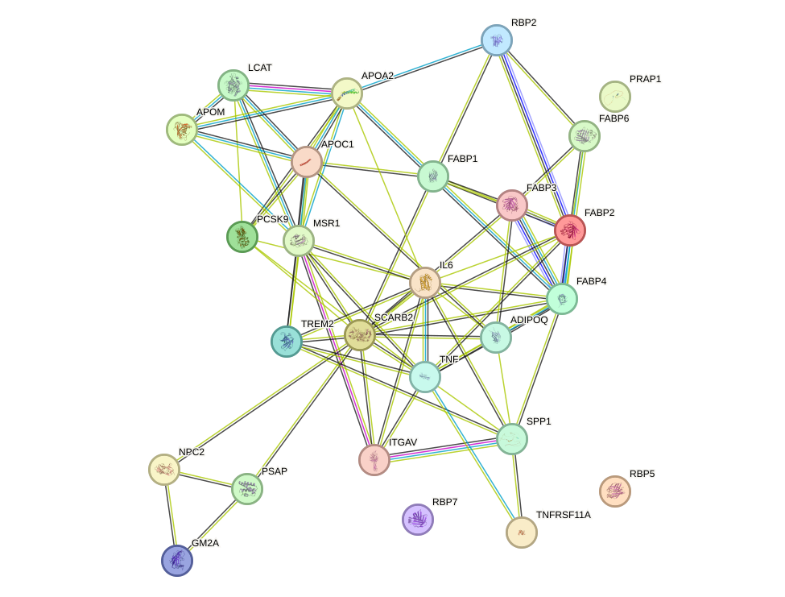
With this network context in place, it is useful to consider the individual proteins highlighted by the function enrichment analysis. During the function enrichment analysis, we identified serveral significant proteins. We will introduce them in-details in the following.
Among the proteins listed, PCSK9 has the clearest and most multifaceted potential relevance to arrhythmia. Its best-established role is the regulation of low-density lipoprotein receptor degradation and thus systemic cholesterol metabolism, a process directly relevant to atherosclerotic cardiovascular disease. Although this is an indirect link, ischemic heart disease and myocardial infarction are major substrates for both atrial and ventricular arrhythmias; therefore, proteins that shape lipid burden and coronary risk are highly pertinent to arrhythmia biology. Beyond lipid metabolism, PCSK9 is notable because it reduces epithelial sodium channel surface expression, implicating it in sodium balance and potentially blood pressure regulation. Disturbances in sodium handling and hypertension contribute to structural and electrical remodeling of the heart, thereby increasing arrhythmia susceptibility. In addition, its effects on receptor trafficking and cell survival pathways suggest broader influence on tissue stress responses. Thus, PCSK9 stands out because it connects metabolic, vascular, and ion homeostatic mechanisms that can converge on arrhythmogenic remodeling. The strongest disease-mechanistic interpretation is that altered PCSK9 activity may promote arrhythmia primarily through dyslipidemia-driven coronary disease and secondarily through effects on sodium handling and cardiovascular remodeling. [31] [32] [33] [34] [35] [36]
A complementary line of reasoning emerges from proteins linked more strongly to immune and inflammatory biology. TREM2 is highly relevant to arrhythmia because inflammation is now recognized as a central driver of both atrial and ventricular arrhythmogenic remodeling. The functional description indicates that TREM2 participates in innate immune activation, cytokine-linked responses, phagocytosis, and regulation of myeloid-cell behavior through TYROBP-dependent signaling. These processes are mechanistically important because inflammatory cell activation can promote fibrosis, alter ion channel expression, impair conduction, and facilitate triggered activity. Although the cited functions are described largely in microglia, dendritic cells, macrophages, and neutrophils rather than directly in cardiomyocytes, the same broad immunobiological themes are highly relevant to cardiac disease states such as myocarditis, post-infarction remodeling, heart failure, and systemic inflammatory conditions, all of which increase arrhythmia risk. TREM2 therefore stands out as a plausible upstream modulator of inflammatory remodeling, with potential relevance to arrhythmia through immune-cell mediated tissue injury, reparative signaling, and fibrosis rather than through direct electrophysiological control. [369] [370] [371] [372] [373] [374] [375] [376] [377] [378] [379] [380] [381]
Shifting back toward systemic lipid handling, PRAP1 appears to have a more indirect but still biologically interpretable connection to arrhythmia. PRAP1 is of potential interest to arrhythmia primarily through its role in lipid absorption and apolipoprotein B lipoprotein assembly. By facilitating microsomal triglyceride transfer protein-dependent transfer of triglycerides and phospholipids and supporting apolipoprotein B lipoprotein secretion, PRAP1 may influence systemic lipid burden and thereby long-term cardiovascular risk. This creates an indirect but biologically meaningful connection to arrhythmia, because dyslipidemia contributes to coronary artery disease, ischemic myocardial injury, and adverse cardiac remodeling, all of which provide a substrate for arrhythmogenesis. Its additional functions in epithelial survival and p53-dependent stress responses are less directly connected to arrhythmia, but they suggest a broader role in cellular adaptation to injury. Compared with PCSK9, the arrhythmia relevance of PRAP1 is more speculative and likely mediated through cardiometabolic disease rather than direct effects on cardiac electrophysiology. [382] [383] [384]
Several additional proteins appear to have more tentative and indirect links to arrhythmia, and the available evidence should therefore be interpreted cautiously. PSAP may be relevant to arrhythmia because abnormal ribonucleic acid splicing, transcriptional repression, and apoptosis are increasingly recognized contributors to cardiac electrical instability. Its role in the SIN3-HDAC1 repression machinery links it to chromatin-dependent gene regulation, while its participation in ASAP/PSAP complexes and modulation of BCL2L1 or Bcl-X splicing implicate it in cell survival programs. In the heart, dysregulated apoptosis and maladaptive gene-expression remodeling can contribute to conduction abnormalities, myocardial fibrosis, and structural substrate formation for arrhythmia. Although the available functional evidence does not place PSAP directly in canonical ion-channel pathways, its influence on splicing and apoptotic balance makes it a plausible modifier of arrhythmia susceptibility, particularly in disease contexts characterized by stress-induced remodeling or cardiomyocyte loss. The connection is therefore mechanistically plausible but indirect.
This pattern of limited direct electrophysiological evidence is even more apparent for the retinol-binding proteins in this set. RBP2 has a limited and indirect connection to arrhythmia based on the information provided. Retinol transport contributes to vitamin A homeostasis, and retinoid signaling can influence cellular differentiation and gene expression, including in cardiovascular tissues. However, no direct role in cardiac electrophysiology, ion handling, or arrhythmogenic remodeling is evident from the listed function alone. Any relationship to arrhythmia would therefore be speculative and likely secondary to broader developmental or metabolic effects rather than a primary disease mechanism.
In a similar manner, RBP5 is only weakly connected to arrhythmia on the basis of the provided annotation. Retinol trafficking is important for retinoid-dependent transcriptional programs, which can affect tissue development and homeostasis, but there is no direct evidence here linking RBP5 to electrophysiological regulation, myocardial injury, or fibrotic remodeling. Consequently, RBP5 does not stand out as a strong arrhythmia candidate in this set.
Likewise, RBP7 may have only a marginal connection to arrhythmia given the present functional description. While retinoid metabolism can influence vascular and metabolic biology, the stated role of RBP7 is confined to intracellular retinol transport, without direct indication of involvement in ion-channel regulation, myocardial conduction, inflammation, or structural remodeling. Thus, any arrhythmia relevance would remain indirect and currently unsupported by the listed evidence.
Beyond individual proteins, the network also suggests the presence of small cooperative groups that may represent shared biological programs. There are also small set of proteins function together to form a cluster. The network structure supports a coordinated functional program linking systemic and cellular lipid homeostasis to inflammatory and matrix-associated signaling. The strongest retained associations cluster around lipoprotein biology, including APOA2-APOC1 (score 0.991), APOA2-LCAT (0.982), APOA2-APOM (0.980), APOC1-LCAT (0.973), and APOC1-APOM (0.939), consistent with a shared role in high-density lipoprotein or very-low-density lipoprotein metabolism, cholesterol esterification, and lipid transport. LCAT is a central extracellular enzyme for cholesterol esterification and high-density lipoprotein remodeling, whereas APOA2 may stabilize high-density lipoprotein structure, APOC1 inhibits lipoprotein receptor binding and cholesteryl ester transfer protein activity, and APOM binds sphingosine-1-phosphate and retinoids, together indicating a circulating lipoprotein regulatory axis. A second prominent submodule contains fatty acid binding protein family members involved in intracellular long-chain fatty-acid transport and lipid sensing, including FABP1, FABP2, FABP3, FABP4, and FABP6; the retained FABP1-FABP2 (0.965), FABP1-FABP3 (0.929), FABP1-FABP4 (0.904), FABP4-FABP6 (0.821), and FABP2-FABP6 (0.809) associations support functional coherence of this lipid-handling arm. FABP3 is specifically linked to cardiac physiology, while FABP4 and FABP1 participate in fatty-acid and cholesterol handling, suggesting possible relevance to myocardial substrate use. The cluster also contains an inflammatory signaling arm, highlighted by the high-confidence IL6-TNF association (0.994) and links from ADIPOQ to IL6 (0.890), TNF (0.871), and FABP4 (0.942), indicating coupling between adipokine tone and pro-inflammatory cytokine pathways. IL6 trans-signaling is described as pro-inflammatory and involved in vascular endothelial growth factor induction, whereas TNF has chemotactic cytokine activity, and TNFRSF11A regulates nuclear factor kappa B or JUN signaling and immune activation, reinforcing an immune-inflammatory context. In parallel, ITGAV and SPP1 form the highest-scoring retained pair in the cluster (0.999), with evidence including physical and functional STRING channels; this is biologically concordant with the role of ITGAV-containing integrins as receptors for osteopontin or SPP1 and mediators of adhesion, angiogenesis, wound healing, and transforming growth factor beta 1 activation. For arrhythmia, the cluster may contribute through convergence of metabolic dysregulation, inflammatory signaling, and extracellular remodeling. Disturbed fatty-acid trafficking and lipoprotein metabolism could alter cardiomyocyte energy homeostasis and lipid burden, which is relevant because FABP3 is linked to cardiac physiology and several fatty acid binding proteins, apolipoproteins, LCAT, and MSR1 or SCARB2 participate in lipid uptake, transport, or cholesterol handling. Concurrently, IL6- and TNF-centered inflammatory signaling may promote a chronic pro-inflammatory milieu, while ITGAV-SPP1-associated adhesion and matrix signaling may favor tissue remodeling and wound-healing responses. Such combined changes provide a plausible mechanism by which this cluster could support arrhythmogenic remodeling, even though the present network is based on high-confidence protein associations and should not be uniformly interpreted as direct physical binding. Overall, the cluster appears to represent a tightly connected cardiometabolic-inflammatory module that could influence arrhythmia susceptibility by integrating altered lipid handling, cytokine signaling, and extracellular matrix-related signaling. [385] [386] [387] [388] [389] [390] [391] [392] [393] [223] [224] [225] [115] [114] [306] [307] [308] [309] [310] [311] [312] [313] [314] [315] [316] [317] [318] [319] [320] [321] [322]
A second, much smaller component points toward a more restricted lysosomal lipid-trafficking theme. The cluster comprising NPC2 and GM2A supports a coherent biological theme of lysosomal lipid mobilization and catabolism. NPC2 is a key intracellular cholesterol transporter that acts in concert with NPC1 to export cholesterol released from low-density lipoprotein within the lumen of late endosomes or lysosomes, a process essential for maintaining cholesterol homeostasis [394] [395] [396] [397]. GM2A, in parallel, promotes the degradation of ganglioside GM2 and glycolipid GA2 by extracting individual GM2 molecules from membranes and presenting them in soluble form to beta-hexosaminidase A; it also has cholesterol transfer activity by similarity. Together, these annotations indicate that the cluster is linked to coordinated handling of sterols and sphingolipids within lysosome-related compartments. Such lipid homeostasis is likely important for arrhythmia because alterations in cholesterol distribution and ganglioside turnover could plausibly modify membrane composition and cellular lipid balance, thereby influencing the function of excitable cardiac cells. In particular, disturbed lysosomal cholesterol export or ganglioside degradation may contribute to abnormal membrane lipid environments that could affect cardiac electrical stability. However, the network evidence here is limited under the current retained-edge criteria: the cluster contains only one retained high-confidence STRING functional association connecting the two proteins (GM2A-NPC2, score 0.808), and both proteins have degree 1 within this component. Accordingly, the data support a shared functional module in lipid trafficking and degradation, but should not be over-interpreted as demonstrating a direct physical interaction. [394] [395] [396] [397]
The collagen trimer pathway refers to the assembly of three collagen polypeptide chains into a stable triple-helical complex, which is the fundamental structural unit of fibrillar and non-fibrillar collagens in the extracellular matrix. After biosynthesis as procollagen molecules, these triple-helical trimers are secreted, processed, and incorporated into higher-order collagen fibers and networks that provide tensile strength, mechanical integrity, and architectural support to cardiac tissue. In the heart, collagen type one and collagen type three are particularly important determinants of myocardial and atrial interstitial structure. Balanced collagen trimer formation, deposition, cross-linking, and degradation are essential for maintaining normal electrical continuity and mechanical coupling among cardiomyocytes. Disturbance of this balance promotes fibrosis, characterized by excessive extracellular matrix accumulation or abnormal collagen turnover. Because collagen trimers are the core building blocks of fibrotic matrix, altered collagen synthesis and degradation can reshape myocardial microarchitecture, increase tissue stiffness, separate bundles of excitable cells, and create spatial heterogeneity in impulse propagation. These structural effects make the collagen trimer pathway highly relevant to arrhythmia biology, since fibrosis is a recognized substrate for both atrial and ventricular rhythm disorders. [398] [399] [400] [401] [402] [403] [404] [405]
Building on this structural framework, the collected studies suggest that dysregulation of collagen trimer formation and turnover is linked to arrhythmia through the development of myocardial and atrial fibrosis, which creates a structurally heterogeneous and electrically unstable substrate. In hypertrophic cardiomyopathy, increased serum markers of collagen type one synthesis were detectable even before overt hypertrophy, indicating that profibrotic collagen remodeling is an early disease manifestation, and myocardial fibrosis was described as a substrate for arrhythmias in affected patients [398]. In persistent atrial fibrillation, restoration of sinus rhythm was associated with reduced collagen type one synthesis marker levels and altered degradation marker levels, supporting the view that the arrhythmia and collagen remodeling are dynamically interconnected and that maintenance of the arrhythmia may be facilitated by ongoing fibrotic matrix turnover [399]. In nonischemic dilated cardiomyopathy, circulating markers of collagen degradation and matrix remodeling predicted appropriate implantable cardioverter-defibrillator therapies, directly linking extracellular matrix disruption to malignant ventricular arrhythmias and sudden death risk [400]. Several studies in atrial fibrillation further support this relationship: circulating collagen turnover markers were elevated in atrial fibrillation compared with controls, were associated with incident new-onset atrial fibrillation in population-based follow-up, and correlated with diffuse ventricular fibrosis or persistent forms of atrial fibrillation, even when some biomarker studies showed limited value for predicting recurrence after ablation compared with direct voltage mapping [401] [403] [402] [404] [405]. Taken together, these findings support a model in which the collagen trimer pathway may contribute to arrhythmia by driving fibrotic extracellular matrix accumulation and turnover, thereby disrupting normal myocardial architecture, promoting conduction heterogeneity, and increasing susceptibility to both atrial and ventricular arrhythmias. [398] [399] [400] [401] [402] [403] [404] [405]
Consistent with these literature-based observations, the enrichment results point to a compact extracellular matrix program within the present dataset. There were 5 arrhythmia-associated proteins significantly enriched in the collagen trimer pathway, a structural extracellular matrix program that is closely linked to fibrotic remodeling and altered impulse propagation in cardiac tissue. Given that this pathway is centered on collagen assembly and matrix organization, the enrichment of 5 proteins supports a quantitatively compact but biologically coherent signal connecting extracellular matrix architecture to arrhythmia susceptibility.
To further clarify how these proteins relate to one another, network structure provides an additional layer of context. Within this 5-protein set, 4 high-confidence protein association edges were retained, connecting 4 of 5 proteins, with a mean retained score of 0.848, indicating a relatively strong level of functional relatedness under the applied confidence threshold. Network centrality was led by COL4A1 with degree 3 and weighted score 2.498, followed by COL5A1 with degree 2 and weighted score 1.807, COL6A3 with degree 2 and weighted score 1.701, and COL18A1 with degree 1 and weighted score 0.774. The connected subnetwork formed 1 component containing 4 proteins and 4 edges with the same mean score of 0.848, while COL9A1 had no retained edge under the current criteria. The strongest retained protein pairs were COL4A1-COL5A1 with score 0.915, COL5A1-COL6A3 with score 0.892, COL4A1-COL6A3 with score 0.809, and COL18A1-COL4A1 with score 0.774; these are high-confidence functional associations and should not be over-interpreted as direct physical binding.
We include the protein-protein interaction network visualization below together with the STRING network page for interactive inspection.
With this network overview in place, the individual proteins can be interpreted in a more ordered way. During the function enrichment analysis, we identified serveral significant proteins. We will introduce them in-details in the following.
COL9A1 encodes collagen type IX alpha 1, an extracellular matrix protein that is primarily known for its structural role in cartilage and the vitreous body rather than for a direct role in cardiac electrophysiology. On the basis of the function provided, COL9A1 does not stand out as a strong arrhythmia-related candidate when compared with proteins involved in ion-channel activity, calcium handling, intercellular coupling, or myocardial fibrosis signaling. Nevertheless, extracellular matrix proteins can be indirectly relevant to arrhythmogenesis because matrix remodeling influences myocardial architecture, mechanical stress transmission, and the formation of fibrotic substrates that promote conduction heterogeneity and re-entry. However, the specific annotated function of COL9A1 as a structural component of hyaline cartilage and vitreous humor suggests that its principal biological importance lies outside the heart, and there is currently no clear mechanistic link from this listed function alone to arrhythmia pathogenesis. Therefore, COL9A1 would be considered a low-priority protein for arrhythmia-focused interpretation in this dataset unless additional cardiac-specific evidence is available.
In contrast to the isolated position of COL9A1, the remaining proteins form a more coherent functional group that may be more relevant to the pathway-level signal. There are also small set of proteins function together to form a cluster.The cluster forms a single connected component of four proteins with four retained high-confidence functional association edges (mean score 0.848), indicating a coherent biological module under the current network criteria, although the evidence is based on STRING functional associations and therefore should not be interpreted as proof of direct physical binding. Within this component, COL4A1 is the highest-degree node (degree 3; weighted score 2.498), linking to COL5A1, COL6A3, and COL18A1, and thus appears to be the principal hub connecting structural collagen functions with anti-angiogenic signaling. The strongest retained associations are COL4A1-COL5A1 (0.915), COL5A1-COL6A3 (0.892), COL4A1-COL6A3 (0.809), and COL18A1-COL4A1 (0.774), supporting a functionally integrated extracellular matrix cluster. Biologically, COL6A3 acts as a cell-binding protein, while COL5A1 is a fibrillar collagen and minor but widely distributed connective tissue component that binds deoxyribonucleic acid, heparan sulfate, thrombospondin, heparin, and insulin, consistent with matrix scaffolding and ligand interaction. In parallel, COL4A1-derived arresten inhibits angiogenesis and tumor formation, specifically suppressing endothelial cell proliferation, migration, and tube formation, and COL18A1 potently inhibits endothelial proliferation and angiogenesis, including vascular endothelial growth factor A-induced endothelial proliferation and migration, possibly through interference with vascular endothelial growth factor A-kinase insert domain receptor signaling and through integrin-dependent effects involving integrin subunit alpha 5:integrin subunit beta 1 and, to a lesser extent, integrin subunit alpha V:integrin subunit beta 3 and integrin subunit alpha V:integrin subunit beta 5. Taken together, the cluster is most consistent with extracellular matrix remodeling coupled to suppression of angiogenic endothelial responses. In relation to arrhythmia, such a program may be relevant because altered extracellular matrix composition and cell-matrix signaling can influence myocardial structural integrity, tissue compliance, and the microvascular environment, while reduced or dysregulated angiogenic support may further contribute to adverse tissue remodeling. These changes could create a substrate favorable to arrhythmia by promoting structural heterogeneity within the myocardium. However, this arrhythmia link should be regarded as a mechanistic interpretation derived from the supplied matrix and angiogenesis-related functions, rather than as a direct disease-specific demonstration from the present network evidence. [203] [204]
This pathway refers to a biological state in the colon characterized by goblet cells present at a low or higher detectable level. Goblet cells are specialized epithelial secretory cells that synthesize and release mucins, which form the protective mucus barrier covering the intestinal surface. In the colon, this barrier is essential for separating luminal microorganisms and their products from the host epithelium, thereby preserving tissue integrity, limiting immune activation, and maintaining local homeostasis. Alteration in goblet cell abundance or structure can therefore indicate impaired mucosal defense and increased susceptibility to inflammation. In the cited study of dextran sodium sulfate-induced colitis, goblet cell architecture in the colonic mucosa was damaged, accompanied by inflammatory cell infiltration, destruction of intestinal gland structure, submucosal edema, hyperplasia, disruption of collagen fibers in the muscular layer, and edema and nuclear irregularity in smooth muscle cells. Taken together, these observations suggest that disturbance of the goblet cell compartment is not an isolated epithelial event, but rather part of a broader pathological program involving barrier failure, immune activation, stromal remodeling, and altered tissue ultrastructure in the colon. [406]
Building on this pathological context, the possible relationship between this colon goblet cell pathway and arrhythmia appears most plausibly indirect and mediated through systemic consequences of intestinal barrier dysfunction and inflammation rather than through a primary cardiac mechanism. The available publication does not study arrhythmia directly, but it demonstrates that damage to goblet cell architecture in colitis occurs together with marked inflammatory infiltration, edema, destruction of glandular organization, and remodeling of deeper colonic layers, indicating substantial loss of mucosal barrier integrity and activation of inflammatory processes in the intestine. From the perspective of arrhythmia biology, such a state may be relevant because chronic or severe intestinal inflammation can promote systemic release of inflammatory mediators, alter immune signaling, and increase exposure to microbial products that escape a weakened mucus barrier. These systemic disturbances are conceptually linked to electrical instability in the heart, because inflammation can modify ion channel function, autonomic balance, myocardial conduction, and structural remodeling, all of which may increase susceptibility to abnormal cardiac rhythm. In addition, colitis-associated illness may contribute to dehydration, electrolyte imbalance, and generalized physiological stress, which are classic facilitators of arrhythmia. Therefore, although the cited evidence is limited to colonic pathology, the observed goblet cell damage may support a biologically credible intestine-to-heart axis in which impaired goblet cell-mediated mucosal protection contributes to a pro-arrhythmic systemic environment through inflammation, barrier failure, and secondary metabolic disturbance rather than through a direct pathway specific to cardiac tissue. [406]
With this biological framework in mind, the enrichment results provide a more quantitative view of how this pathway may intersect with arrhythmia-associated proteins. There were 36 arrhythmia-associated proteins significantly enriched in the pathway describing a colonic state with goblet cells present at a low or higher detectable level. This enrichment profile points to a mucosal barrier and epithelial secretory program centered on mucin-producing goblet cell biology, and the pathway description further indicates that disruption of this compartment is linked to inflammatory infiltration, gland destruction, submucosal edema, collagen fiber disruption, and smooth muscle cell nuclear irregularity in dextran sodium sulfate-induced colitis.
To further clarify the organization of these enriched proteins, network-level analysis was performed. Within this 36-protein set, 6 high-confidence protein association edges were retained, connecting 9 proteins, with a mean retained score of 0.804. Network connectivity was therefore sparse, with only 25.0 percent of proteins connected under the retained-edge criterion, while 20 of 36 proteins, corresponding to 55.6 percent, had no retained edges. The highest-degree proteins were trefoil factor 3 with degree 2 and weighted score 1.59, anterior gradient 2 with degree 2 and weighted score 1.585, and trefoil factor 1 with degree 2 and weighted score 1.577, followed by carcinoembryonic antigen-related cell adhesion molecule 5 and keratin 19, each with degree 1 and weighted score 0.877. The retained network was organized into 4 small connected components, including a 3-protein component formed by anterior gradient 2, trefoil factor 1, and trefoil factor 3 with 3 edges and mean score 0.792, and 3 separate 2-protein components comprising carcinoembryonic antigen-related cell adhesion molecule 5 with keratin 19 at score 0.877, fatty acid binding protein 1 with lipocalin 2 at score 0.816, and regenerating family member 4 with serine peptidase inhibitor Kazal type 4 at score 0.754. The strongest retained pair was carcinoembryonic antigen-related cell adhesion molecule 5 with keratin 19 at 0.877, followed by fatty acid binding protein 1 with lipocalin 2 at 0.816.
The protein-protein interaction network visualization is shown below, and the corresponding interactive STRING resource can be accessed through this STRING network link.
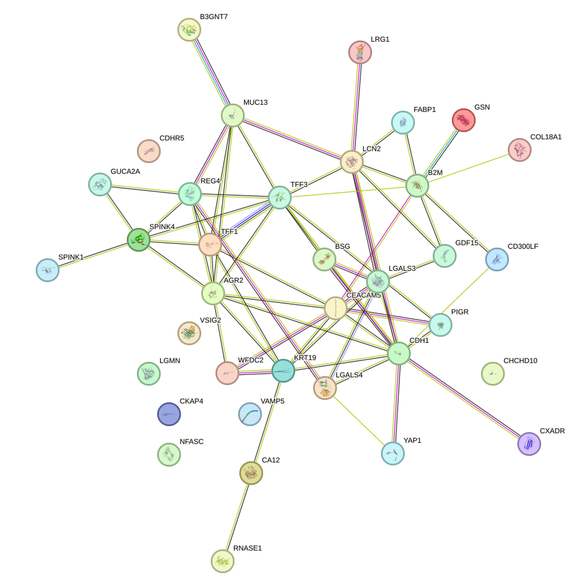
Having outlined the global network structure, the next step is to consider the individual proteins that may be most relevant to arrhythmia-related interpretation. During the function enrichment analysis, we identified several significant proteins. We will introduce them in detail in the following.
CDH1 is among the most relevant proteins in this list for arrhythmia because perturbation of intercellular adhesion is a central mechanism in cardiac electrical instability. Although the annotation provided emphasizes its role as a microbial receptor, the core biology of CDH1 as an adhesion molecule is highly pertinent to myocardial tissue organization. In the heart, altered adhesion can impair mechanical coupling and secondarily disrupt electrical propagation, thereby favoring conduction heterogeneity and re-entry, two canonical substrates for arrhythmogenesis. More broadly, epithelial- and cadherin-based junctional integrity is conceptually linked to the intercalated-disc network that maintains synchronized excitation across cardiomyocytes. Thus, even though the cited function is infection-related, CDH1 stands out because adhesion dysregulation is strongly connected to disease mechanisms that promote arrhythmia, including structural remodeling and impaired cell-cell coupling.
In a related but more infection-centered context, CXADR appears particularly important because it links viral infection to myocardial electrical disease. Coxsackie B viruses are well-known causes of myocarditis, and inflammatory myocardial injury can lead to conduction abnormalities, triggered activity, and ventricular arrhythmias. As the viral receptor, CXADR is mechanistically positioned at the earliest stage of host-cell entry, making it relevant to susceptibility and tissue tropism in infection-associated cardiac disease. The arrhythmic consequences of myocarditis include myocyte injury, edema, fibrosis, and altered ion channel function, all of which create an arrhythmogenic substrate. Therefore, among the proteins listed, CXADR stands out as one of the clearest candidates with a meaningful connection to arrhythmia through infection-driven myocardial inflammation and remodeling.
Extending from infection-related mechanisms to tissue remodeling and vascular support, COL18A1 may also be relevant to arrhythmia because vascular homeostasis, angiogenesis, and extracellular matrix signaling influence the structural substrate of the heart. The anti-angiogenic activity of COL18A1, particularly its ability to suppress vascular endothelial growth factor A-driven endothelial responses, may affect myocardial microvascular adaptation during stress, ischemia, or remodeling. Impaired angiogenic reserve can exacerbate hypoxia, fibrosis, and adverse chamber remodeling, each of which increases arrhythmic risk by promoting conduction slowing and spatial heterogeneity. Its integrin-dependent effects on endothelial migration further suggest a role in matrix-cell interactions that could influence fibrotic remodeling. Thus, although COL18A1 is not a classical ion-channel or conduction gene, its regulation of angiogenesis and tissue remodeling provides a plausible mechanistic link to arrhythmia susceptibility, especially in structurally diseased hearts. [203] [204]
A somewhat different but still informative perspective is provided by GDF15, which may be notable for arrhythmia-related interpretation because it is a stress-responsive signaling axis associated with systemic illness, cardiometabolic stress, and neurohumoral activation. The annotation indicates that growth differentiation factor 15-growth differentiation factor receptor alpha like signaling is activated by diverse stresses, including cancer, anticancer drugs, and metformin, and engages mitogen-activated protein kinase and protein kinase B pathways through rearranged during transfection activation. Although growth differentiation factor receptor alpha like is brainstem-restricted, elevated growth differentiation factor 15 is widely recognized as a marker of cardiovascular stress and adverse outcomes. In an arrhythmia framework, this pathway may be relevant indirectly through autonomic modulation, illness-associated catabolic states, and signaling programs linked to myocardial remodeling. Stress states that elevate growth differentiation factor 15 often coincide with heightened arrhythmic vulnerability, and the pathway’s engagement of central circuits could also influence autonomic balance, an important determinant of both atrial and ventricular arrhythmias. Accordingly, growth differentiation factor 15 stands out as a potentially informative biomarker-linked protein rather than a direct electrophysiologic effector. [43] [44] [45] [46] [47] [48] [49] [50] [51] [52] [53] [54] [55]
Consistent with this broader theme of stress and remodeling, LGALS3 is one of the strongest candidates in this list for relevance to arrhythmia because it integrates inflammation, immune-cell recruitment, and tissue remodeling, all of which are central to arrhythmogenic disease. Its roles in neutrophil and macrophage responses suggest involvement in inflammatory cascades that can promote atrial and ventricular structural remodeling. Inflammation contributes to fibrosis, altered gap-junction distribution, and electrophysiologic heterogeneity, thereby facilitating re-entry and ectopic activity. In addition, the role of LGALS3 in coordinating responses to membrane damage with autophagy machinery implies a potential contribution to cellular stress adaptation, which is highly relevant in ischemic and failing myocardium. Galectin-3 is also widely recognized in cardiovascular medicine as a fibrosis-associated biomarker, reinforcing the plausibility that this protein is mechanistically linked to arrhythmia through inflammatory-fibrotic remodeling rather than direct ion-channel effects.
Along similar lines, LGMN may have a meaningful connection to arrhythmia through immune activation, lysosomal proteostasis, and growth-factor receptor turnover. Its function in antigen presentation suggests relevance to inflammatory and autoimmune mechanisms that can affect the heart, including myocarditis, which is a recognized cause of arrhythmia. In addition, its role in lysosomal degradation and epidermal growth factor receptor turnover implies broader participation in cellular homeostasis and proliferative signaling. Dysregulated proteostasis and receptor signaling can contribute to maladaptive remodeling, while inflammation can create both acute and chronic arrhythmogenic substrates. Although the evidence here is indirect, LGMN stands out because immune-mediated myocardial injury and remodeling are major pathways to conduction disturbance and arrhythmic events. [407] [408]
From immune and proteostatic mechanisms, it is also useful to consider membrane-domain organization, where NFASC is potentially relevant to arrhythmia because ankyrin-associated membrane organization is fundamental to excitable-cell function. Although the annotation is neurobiological, the combination of cell adhesion and ankyrin binding is noteworthy, since ankyrin-based scaffolding is critical for the localization of ion channels and membrane complexes in electrically active tissues. By analogy, disruption of such scaffolding systems can alter excitability and conduction. NFASC may therefore be of interest in arrhythmia primarily through mechanisms involving membrane-domain organization and cell-cell interaction, rather than through direct evidence from the provided annotation. Its importance is more inferential than established, but among the listed proteins it merits attention because arrhythmias frequently arise from defective channel anchoring and impaired conduction architecture.
A related indirect perspective is offered by BSG, which may be connected to arrhythmia through its broad roles in adhesion, survival signaling, and membrane interaction. While the supplied annotation focuses on the nervous system, these functions are conceptually relevant because autonomic neural regulation is a major determinant of cardiac rhythm stability. Proteins influencing neuronal survival, neurite architecture, and cell-surface interactions could affect autonomic circuitry that modulates heart rate and arrhythmic susceptibility. In addition, adhesion-related molecules often participate in tissue remodeling and stress responses beyond the nervous system. Thus, BSG is not a primary arrhythmia gene based on the provided evidence, but it stands out as a plausible indirect contributor through neuro-cardiac and cell-interaction pathways. [141] [409] [410] [411] [412] [413] [414] [415] [416] [417] [418] [419] [420]
At the level of intracellular energetics, CHCHD10 is relevant to arrhythmia because mitochondrial integrity is essential for cardiac excitability, calcium handling, and energetic stability. Maintenance of mitochondrial organization and cristae structure is particularly important in the heart, where high adenosine triphosphate demand tightly couples metabolism to electrophysiology. Mitochondrial dysfunction can promote arrhythmia through reactive oxygen species generation, impaired calcium buffering, energetic failure, and activation of cell-death or fibrotic pathways. Even though the annotation is concise and lacks direct arrhythmia-specific citation, CHCHD10 stands out as a biologically credible candidate because mitochondrial structural defects are a well-established contributor to both atrial and ventricular arrhythmogenesis, especially in cardiomyopathic settings.
In a similarly indirect but biologically plausible manner, LCN2 is potentially important for arrhythmia because iron homeostasis, apoptosis, and inflammation all influence myocardial electrical stability. The annotation shows that LCN2 can either increase or decrease intracellular iron depending on context, with iron depletion promoting BCL2 like 11-associated apoptosis. In the heart, disturbed iron handling and cell death can contribute to oxidative stress, fibrosis, and adverse remodeling, all of which are arrhythmogenic. Its role in innate immunity further links it to inflammatory states, including infection-related cardiac injury, where arrhythmia risk is elevated. Therefore, LCN2 is best viewed as an indirect but mechanistically plausible participant in arrhythmia through iron-dependent oxidative injury and inflammatory remodeling. [421] [422] [423]
Finally, CKAP4 may have a limited but potentially meaningful relationship to arrhythmia through regulation of antiproliferative signaling and tissue remodeling. Although the provided annotation is not cardiac-specific, pathways controlling proliferation can influence fibroblast behavior and structural remodeling in diseased myocardium. Because arrhythmias often emerge from a remodeled substrate characterized by fibrosis and altered tissue architecture, proteins involved in growth regulation may be relevant indirectly. CKAP4 is therefore not among the strongest candidates, but it could be considered in the broader context of signaling networks that shape the arrhythmogenic substrate.
Beyond individual proteins, the retained network also contains small connected groups that may help clarify localized functional structure. There are also small sets of proteins that function together to form clusters. The first cluster forms a single fully connected component comprising AGR2, TFF1, and TFF3, with 3 retained high-confidence functional associations among 3 proteins, with a mean retained protein-protein interaction score of 0.792. All three proteins have equal network degree, degree 2, indicating a compact and internally coherent module rather than a hierarchy dominated by one node. The retained edges are supported as high-confidence STRING functional associations—AGR2-TFF3 at 0.799, TFF1-TFF3 at 0.791, and AGR2-TFF1 at 0.786—and therefore support shared biological function, but should not be interpreted as evidence of direct physical binding. Functionally, the proteins converge on preservation of mucosal integrity: AGR2 supports mucus biosynthesis and secretion, TFF1 stabilizes the protective mucous gel, and TFF3 promotes epithelial restitution after injury. This suggests that the principal role of the cluster is barrier maintenance and repair in gastrointestinal or intestinal epithelia. With respect to arrhythmia, the supplied annotations do not indicate a direct electrophysiological or cardiac conduction function for these proteins. Therefore, any relationship to arrhythmia is likely to be indirect and inferential rather than specific: disruption of epithelial barrier protection and repair could contribute to systemic stress or disease states that secondarily influence arrhythmic susceptibility, but such a mechanism is not directly established by the present protein-function annotations or by the current network evidence. Accordingly, this cluster is best interpreted as a mucosal defense and repair-associated module with only limited, indirect relevance to arrhythmia under the current retained-edge criteria. [424]
A second small component provides a somewhat different pattern, centered on structural organization and host-pathogen interaction. The cluster comprises two connected proteins, CEACAM5 and KRT19, supported by a single high-confidence retained association, score 0.877, within one connected component containing both proteins. However, the network evidence is limited under the current retained-edge criteria, and the reported CEACAM5-KRT19 link is supported by STRING functional association and text-mining evidence; therefore, it should be interpreted as a high-confidence functional association rather than direct physical binding. Functionally, KRT19 provides the most plausible connection to arrhythmia because it is implicated in myofiber organization and in linking the contractile apparatus to dystrophin at costameres of striated muscle. Perturbation of such structural coupling could be relevant to arrhythmia by compromising mechanical integrity of striated muscle and potentially affecting the stability of cardiomyocyte architecture, which can secondarily influence electrical propagation. CEACAM5, by contrast, is described here in the context of microbial infection as a receptor for Escherichia coli Dr adhesins, suggesting a role in host-pathogen interaction rather than a primary electrophysiological function. Accordingly, this cluster may point to a tentative interface between structural tissue organization and infection-related signaling, but any contribution to arrhythmia remains indirect and is driven mainly by the structural role of KRT19 rather than by strong network-level or mechanistic evidence from the present dataset.
1 Grogan A, Perelli RM, Ahn S, Jiang H, Jyothidasan A, Sood D, You C, Israel DI, Shaginian A, Chen Q, Liu J, Wang J, Steyaert J, Kahsai AW, Landstrom AP, Lefkowitz RJ, Rockman HA. A positive allosteric modulator of the beta1AR with antagonist activity for catecholaminergic polymorphic ventricular tachycardia.. The Journal of clinical investigation. 2025 Dec 15.
2 Xu W, Li J, Ju J, Liu M, Wang W, Cheng M, Zhang X, Cui X, Chen H. The beta1-adrenergic receptor in the heart.. Cell death discovery. 2025 Dec 10.
3 Fu J, Liu L, Fu Q, Zeng X, Yang X. beta2-Adrenergic Receptor Agonist Clenbuterol Protects Against Acute Ischemia/Reperfusion-Induced Arrhythmia by Regulation of Akt/eNOS/NO/Cx43 Signaling Pathway.. Pharmacology research & perspectives. 2025 Feb.
4 Huynh P, Hoffmann JD, Gerhardt T, Kiss MG, Zuraikat FM, Cohen O, Wolfram C, Yates AG, Leunig A, Heiser M, Gaebel L, Gianeselli M, Goswami S, Khamhoung A, Downey J, Yoon S, Chen Z, Roudko V, Dawson T, Ferreira da Silva J, Ameral NJ, Morgenroth-Rebin J, D'Souza D, Koekkoek LL, Jacob W, Munitz J, Lee D, Fullard JF, van Leent MMT, Roussos P, Kim-Schulze S, Shah N, Kleinstiver BP, Swirski FK, Leistner D, St-Onge MP, McAlpine CS. Myocardial infarction augments sleep to limit cardiac inflammation and damage.. Nature. 2024 Nov.
5 Chan YH, Tsai FC, Chang GJ, Lai YJ, Chang SH, Chen WJ, Yeh YH. CD44 regulates Epac1-mediated beta-adrenergic-receptor-induced Ca(2+)-handling abnormalities: implication in cardiac arrhythmias.. Journal of biomedical science. 2023 Jul 14.
6 Kraft AE, Bork NI, Subramanian H, Pavlaki N, Failla AV, Zobiak B, Conti M, Nikolaev VO. Phosphodiesterases 4B and 4D Differentially Regulate cAMP Signaling in Calcium Handling Microdomains of Mouse Hearts.. Cells. 2024 Mar 8.
7 Bersell KR, Yang T, Mosley JD, Glazer AM, Hale AT, Kryshtal DO, Kim K, Steimle JD, Brown JD, Salem JE, Campbell CC, Hong CC, Wells QS, Johnson AN, Short L, Blair MA, Behr ER, Petropoulou E, Jamshidi Y, Benson MD, Keyes MJ, Ngo D, Vasan RS, Yang Q, Gerszten RE, Shaffer C, Parikh S, Sheng Q, Kannankeril PJ, Moskowitz IP, York JD, Wang TJ, Knollmann BC, Roden DM. Transcriptional Dysregulation Underlies Both Monogenic Arrhythmia Syndrome and Common Modifiers of Cardiac Repolarization.. Circulation. 2023 Mar 7.
8 O'Hern C, Caywood S, Aminova S, Kiselev A, Volmert B, Cao W, Wang F, Dionise M, Sewavi ML, Skoric M, Basrai H, Mannering F, Muniyandi P, Popa M, Boulos G, Wolf K, Brown I, Nunez-Regueiro I, Huang A, Kostina A, Squire L, Wilkerson C, Chalfoun N, Park S, Ashammakhi N, Zhou C, Contag C, Aguirre A. Human heart-macrophage assembloids mimic immune-cardiac interactions and enable arrhythmia disease modeling.. Cell stem cell. 2025 Nov 6.
9 Leblanc FJA, Yiu CHK, Moreira LM, Johnston AM, Mehta N, Kourliouros A, Sayeed R, Nattel S, Reilly S, Lettre G. Single-nucleus multi-omics implicates androgen receptor signaling in cardiomyocytes and NR4A1 regulation in fibroblasts during atrial fibrillation.. Nature cardiovascular research. 2025 Apr.
10 Fu H, Kong B, Shuai W, Zhu J, Wang X, Tang Y, Huang H, Huang C. Leukocyte Ig-like receptor B4 (Lilrb4a) alleviates cardiac dysfunction and isoproterenol-induced arrhythmogenic remodeling associated with cardiac fibrosis and inflammation.. Heart rhythm. 2024 Oct.
11 Kang M, Lee CS, Son H, Lee J, Lee J, Seo HJ, Kim MK, Choi M, Cho HJ, Kim HS. Latrophilin-2 Deletion in Cardiomyocyte Disrupts Cell Junction, Leading to D-CMP.. Circulation research. 2024 Nov 8.
12 Ogawa Y, Itoh H, Tamura N, Suga S, Yoshimasa T, Uehira M, Matsuda S, Shiono S, Nishimoto H, Nakao K. Molecular cloning of the complementary DNA and gene that encode mouse brain natriuretic peptide and generation of transgenic mice that overexpress the brain natriuretic peptide gene.. The Journal of clinical investigation. 1994 May.
13 Tamura N, Ogawa Y, Chusho H, Nakamura K, Nakao K, Suda M, Kasahara M, Hashimoto R, Katsuura G, Mukoyama M, Itoh H, Saito Y, Tanaka I, Otani H, Katsuki M. Cardiac fibrosis in mice lacking brain natriuretic peptide.. Proceedings of the National Academy of Sciences of the United States of America. 2000 Apr 11.
14 Kautz L, Jung G, Valore EV, Rivella S, Nemeth E, Ganz T. Identification of erythroferrone as an erythroid regulator of iron metabolism.. Nature genetics. 2014 Jul.
15 Arezes J, Foy N, McHugh K, Sawant A, Quinkert D, Terraube V, Brinth A, Tam M, LaVallie ER, Taylor S, Armitage AE, Pasricha SR, Cunningham O, Lambert M, Draper SJ, Jasuja R, Drakesmith H. Erythroferrone inhibits the induction of hepcidin by BMP6.. Blood. 2018 Oct 4.
16 Wang CY, Xu Y, Traeger L, Dogan DY, Xiao X, Steinbicker AU, Babitt JL. Erythroferrone lowers hepcidin by sequestering BMP2/6 heterodimer from binding to the BMP type I receptor ALK3.. Blood. 2020 Feb 6.
17 Castro-Mollo M, Gera S, Ruiz-Martinez M, Feola M, Gumerova A, Planoutene M, Clementelli C, Sangkhae V, Casu C, Kim SM, Ostland V, Han H, Nemeth E, Fleming R, Rivella S, Lizneva D, Yuen T, Zaidi M, Ginzburg Y. The hepcidin regulator erythroferrone is a new member of the erythropoiesis-iron-bone circuitry.. eLife. 2021 May 18.
18 Seldin MM, Peterson JM, Byerly MS, Wei Z, Wong GW. Myonectin (CTRP15), a novel myokine that links skeletal muscle to systemic lipid homeostasis.. The Journal of biological chemistry. 2012 Apr 6.
19 Otaka N, Shibata R, Ohashi K, Uemura Y, Kambara T, Enomoto T, Ogawa H, Ito M, Kawanishi H, Maruyama S, Joki Y, Fujikawa Y, Narita S, Unno K, Kawamoto Y, Murate T, Murohara T, Ouchi N. Myonectin Is an Exercise-Induced Myokine That Protects the Heart From Ischemia-Reperfusion Injury.. Circulation research. 2018 Dec 7.
20 Seldin MM, Lei X, Tan SY, Stanson KP, Wei Z, Wong GW. Skeletal muscle-derived myonectin activates the mammalian target of rapamycin (mTOR) pathway to suppress autophagy in liver.. The Journal of biological chemistry. 2013 Dec 13.
21 Maeda N, Ichihara-Tanaka K, Kimura T, Kadomatsu K, Muramatsu T, Noda M. A receptor-like protein-tyrosine phosphatase PTPzeta/RPTPbeta binds a heparin-binding growth factor midkine. Involvement of arginine 78 of midkine in the high affinity binding to PTPzeta.. The Journal of biological chemistry. 1999 Apr 30.
22 Muramatsu H, Zou K, Sakaguchi N, Ikematsu S, Sakuma S, Muramatsu T. LDL receptor-related protein as a component of the midkine receptor.. Biochemical and biophysical research communications. 2000 Apr 21.
23 Kurosawa N, Chen GY, Kadomatsu K, Ikematsu S, Sakuma S, Muramatsu T. Glypican-2 binds to midkine: the role of glypican-2 in neuronal cell adhesion and neurite outgrowth.. Glycoconjugate journal. 2001 Jun.
24 Stoica GE, Kuo A, Powers C, Bowden ET, Sale EB, Riegel AT, Wellstein A. Midkine binds to anaplastic lymphoma kinase (ALK) and acts as a growth factor for different cell types.. The Journal of biological chemistry. 2002 Sep 27.
25 Sakaguchi N, Muramatsu H, Ichihara-Tanaka K, Maeda N, Noda M, Yamamoto T, Michikawa M, Ikematsu S, Sakuma S, Muramatsu T. Receptor-type protein tyrosine phosphatase zeta as a component of the signaling receptor complex for midkine-dependent survival of embryonic neurons.. Neuroscience research. 2003 Feb.
26 Muramatsu H, Zou P, Suzuki H, Oda Y, Chen GY, Sakaguchi N, Sakuma S, Maeda N, Noda M, Takada Y, Muramatsu T. alpha4beta1- and alpha6beta1-integrins are functional receptors for midkine, a heparin-binding growth factor.. Journal of cell science. 2004 Oct 15.
27 Huang Y, Hoque MO, Wu F, Trink B, Sidransky D, Ratovitski EA. Midkine induces epithelial-mesenchymal transition through Notch2/Jak2-Stat3 signaling in human keratinocytes.. Cell cycle (Georgetown, Tex.). 2008 Jun 1.
28 Weckbach LT, Gola A, Winkelmann M, Jakob SM, Groesser L, Borgolte J, Pogoda F, Pick R, Pruenster M, Muller-Hocker J, Deindl E, Sperandio M, Walzog B. The cytokine midkine supports neutrophil trafficking during acute inflammation by promoting adhesion via beta2 integrins (CD11/CD18).. Blood. 2014 Mar 20.
29 Horiba M, Kadomatsu K, Nakamura E, Muramatsu H, Ikematsu S, Sakuma S, Hayashi K, Yuzawa Y, Matsuo S, Kuzuya M, Kaname T, Hirai M, Saito H, Muramatsu T. Neointima formation in a restenosis model is suppressed in midkine-deficient mice.. The Journal of clinical investigation. 2000 Feb.
30 Sonobe Y, Li H, Jin S, Kishida S, Kadomatsu K, Takeuchi H, Mizuno T, Suzumura A. Midkine inhibits inducible regulatory T cell differentiation by suppressing the development of tolerogenic dendritic cells.. Journal of immunology (Baltimore, Md. : 1950). 2012 Mar 15.
31 Poirier S, Mayer G, Benjannet S, Bergeron E, Marcinkiewicz J, Nassoury N, Mayer H, Nimpf J, Prat A, Seidah NG. The proprotein convertase PCSK9 induces the degradation of low density lipoprotein receptor (LDLR) and its closest family members VLDLR and ApoER2.. The Journal of biological chemistry. 2008 Jan 25.
32 Nassoury N, Blasiole DA, Tebon Oler A, Benjannet S, Hamelin J, Poupon V, McPherson PS, Attie AD, Prat A, Seidah NG. The cellular trafficking of the secretory proprotein convertase PCSK9 and its dependence on the LDLR.. Traffic (Copenhagen, Denmark). 2007 Jun.
33 Fan D, Yancey PG, Qiu S, Ding L, Weeber EJ, Linton MF, Fazio S. Self-association of human PCSK9 correlates with its LDLR-degrading activity.. Biochemistry. 2008 Feb 12.
34 Mayer G, Poirier S, Seidah NG. Annexin A2 is a C-terminal PCSK9-binding protein that regulates endogenous low density lipoprotein receptor levels.. The Journal of biological chemistry. 2008 Nov 14.
35 Chen Y, Wang H, Yu L, Yu X, Qian YW, Cao G, Wang J. Role of ubiquitination in PCSK9-mediated low-density lipoprotein receptor degradation.. Biochemical and biophysical research communications. 2011 Nov 25.
36 Jonas MC, Costantini C, Puglielli L. PCSK9 is required for the disposal of non-acetylated intermediates of the nascent membrane protein BACE1.. EMBO reports. 2008 Sep.
37 de la Fuente H, Cruz-Adalia A, Martinez Del Hoyo G, Cibrian-Vera D, Bonay P, Perez-Hernandez D, Vazquez J, Navarro P, Gutierrez-Gallego R, Ramirez-Huesca M, Martin P, Sanchez-Madrid F. The leukocyte activation receptor CD69 controls T cell differentiation through its interaction with galectin-1.. Molecular and cellular biology. 2014 Jul.
38 Small SH, Tang EJ, Ragland RL, Ruzankina Y, Schoppy DW, Mandal RS, Glineburg MR, Ustelenca Z, Powell DJ, Simpkins F, Johnson FB, Brown EJ. Induction of IL19 expression through JNK and cGAS-STING modulates DNA damage-induced cytokine production.. Science signaling. 2021 Dec 21.
39 Oral HB, Kotenko SV, Yilmaz M, Mani O, Zumkehr J, Blaser K, Akdis CA, Akdis M. Regulation of T cells and cytokines by the interleukin-10 (IL-10)-family cytokines IL-19, IL-20, IL-22, IL-24 and IL-26.. European journal of immunology. 2006 Feb.
40 Parrish-Novak J, Xu W, Brender T, Yao L, Jones C, West J, Brandt C, Jelinek L, Madden K, McKernan PA, Foster DC, Jaspers S, Chandrasekher YA. Interleukins 19, 20, and 24 signal through two distinct receptor complexes. Differences in receptor-ligand interactions mediate unique biological functions.. The Journal of biological chemistry. 2002 Dec 6.
41 Dumoutier L, Leemans C, Lejeune D, Kotenko SV, Renauld JC. Cutting edge: STAT activation by IL-19, IL-20 and mda-7 through IL-20 receptor complexes of two types.. Journal of immunology (Baltimore, Md. : 1950). 2001 Oct 1.
42 Luan X, Lu Q, Jiang Y, Zhang S, Wang Q, Yuan H, Zhao W, Wang J, Wang X. Crystal structure of human RANKL complexed with its decoy receptor osteoprotegerin.. Journal of immunology (Baltimore, Md. : 1950). 2012 Jul 1.
43 Mullican SE, Lin-Schmidt X, Chin CN, Chavez JA, Furman JL, Armstrong AA, Beck SC, South VJ, Dinh TQ, Cash-Mason TD, Cavanaugh CR, Nelson S, Huang C, Hunter MJ, Rangwala SM. GFRAL is the receptor for GDF15 and the ligand promotes weight loss in mice and nonhuman primates.. Nature medicine. 2017 Oct.
44 Emmerson PJ, Wang F, Du Y, Liu Q, Pickard RT, Gonciarz MD, Coskun T, Hamang MJ, Sindelar DK, Ballman KK, Foltz LA, Muppidi A, Alsina-Fernandez J, Barnard GC, Tang JX, Liu X, Mao X, Siegel R, Sloan JH, Mitchell PJ, Zhang BB, Gimeno RE, Shan B, Wu X. The metabolic effects of GDF15 are mediated by the orphan receptor GFRAL.. Nature medicine. 2017 Oct.
45 Yang L, Chang CC, Sun Z, Madsen D, Zhu H, Padkjaer SB, Wu X, Huang T, Hultman K, Paulsen SJ, Wang J, Bugge A, Frantzen JB, Norgaard P, Jeppesen JF, Yang Z, Secher A, Chen H, Li X, John LM, Shan B, He Z, Gao X, Su J, Hansen KT, Yang W, Jorgensen SB. GFRAL is the receptor for GDF15 and is required for the anti-obesity effects of the ligand.. Nature medicine. 2017 Oct.
46 Hsu JY, Crawley S, Chen M, Ayupova DA, Lindhout DA, Higbee J, Kutach A, Joo W, Gao Z, Fu D, To C, Mondal K, Li B, Kekatpure A, Wang M, Laird T, Horner G, Chan J, McEntee M, Lopez M, Lakshminarasimhan D, White A, Wang SP, Yao J, Yie J, Matern H, Solloway M, Haldankar R, Parsons T, Tang J, Shen WD, Alice Chen Y, Tian H, Allan BB. Non-homeostatic body weight regulation through a brainstem-restricted receptor for GDF15.. Nature. 2017 Oct 12.
47 Tsai VW, Zhang HP, Manandhar R, Schofield P, Christ D, Lee-Ng KKM, Lebhar H, Marquis CP, Husaini Y, Brown DA, Breit SN. GDF15 mediates adiposity resistance through actions on GFRAL neurons in the hindbrain AP/NTS.. International journal of obesity (2005). 2019 Dec.
48 Borner T, Shaulson ED, Ghidewon MY, Barnett AB, Horn CC, Doyle RP, Grill HJ, Hayes MR, De Jonghe BC. GDF15 Induces Anorexia through Nausea and Emesis.. Cell metabolism. 2020 Feb 4.
49 Worth AA, Shoop R, Tye K, Feetham CH, D'Agostino G, Dodd GT, Reimann F, Gribble FM, Beebe EC, Dunbar JD, Alexander-Chacko JT, Sindelar DK, Coskun T, Emmerson PJ, Luckman SM. The cytokine GDF15 signals through a population of brainstem cholecystokinin neurons to mediate anorectic signalling.. eLife. 2020 Jul 29.
50 Sabatini PV, Frikke-Schmidt H, Arthurs J, Gordian D, Patel A, Rupp AC, Adams JM, Wang J, Beck Jorgensen S, Olson DP, Palmiter RD, Myers MG Jr, Seeley RJ. GFRAL-expressing neurons suppress food intake via aversive pathways.. Proceedings of the National Academy of Sciences of the United States of America. 2021 Feb 23.
51 Lu JF, Zhu MQ, Xie BC, Shi XC, Liu H, Zhang RX, Xia B, Wu JW. Camptothecin effectively treats obesity in mice through GDF15 induction.. PLoS biology. 2022 Feb.
52 Benichou O, Coskun T, Gonciarz MD, Garhyan P, Adams AC, Du Y, Dunbar JD, Martin JA, Mather KJ, Pickard RT, Reynolds VL, Robins DA, Zvada SP, Emmerson PJ. Discovery, development, and clinical proof of mechanism of LY3463251, a long-acting GDF15 receptor agonist.. Cell metabolism. 2023 Feb 7.
53 Wang D, Townsend LK, DesOrmeaux GJ, Frangos SM, Batchuluun B, Dumont L, Kuhre RE, Ahmadi E, Hu S, Rebalka IA, Gautam J, Jabile MJT, Pileggi CA, Rehal S, Desjardins EM, Tsakiridis EE, Lally JSV, Juracic ES, Tupling AR, Gerstein HC, Pare G, Tsakiridis T, Harper ME, Hawke TJ, Speakman JR, Blondin DP, Holloway GP, Jorgensen SB, Steinberg GR. GDF15 promotes weight loss by enhancing energy expenditure in muscle.. Nature. 2023 Jul.
54 Coll AP, Chen M, Taskar P, Rimmington D, Patel S, Tadross JA, Cimino I, Yang M, Welsh P, Virtue S, Goldspink DA, Miedzybrodzka EL, Konopka AR, Esponda RR, Huang JT, Tung YCL, Rodriguez-Cuenca S, Tomaz RA, Harding HP, Melvin A, Yeo GSH, Preiss D, Vidal-Puig A, Vallier L, Nair KS, Wareham NJ, Ron D, Gribble FM, Reimann F, Sattar N, Savage DB, Allan BB, O'Rahilly S. GDF15 mediates the effects of metformin on body weight and energy balance.. Nature. 2020 Feb.
55 Suriben R, Chen M, Higbee J, Oeffinger J, Ventura R, Li B, Mondal K, Gao Z, Ayupova D, Taskar P, Li D, Starck SR, Chen HH, McEntee M, Katewa SD, Phung V, Wang M, Kekatpure A, Lakshminarasimhan D, White A, Olland A, Haldankar R, Solloway MJ, Hsu JY, Wang Y, Tang J, Lindhout DA, Allan BB. Antibody-mediated inhibition of GDF15-GFRAL activity reverses cancer cachexia in mice.. Nature medicine. 2020 Aug.
56 Ratthe C, Girard D. Interleukin-15 enhances human neutrophil phagocytosis by a Syk-dependent mechanism: importance of the IL-15Ralpha chain.. Journal of leukocyte biology. 2004 Jul.
57 Grabstein KH, Eisenman J, Shanebeck K, Rauch C, Srinivasan S, Fung V, Beers C, Richardson J, Schoenborn MA, Ahdieh M, et al.. Cloning of a T cell growth factor that interacts with the beta chain of the interleukin-2 receptor.. Science (New York, N.Y.). 1994 May 13.
58 Badolato R, Ponzi AN, Millesimo M, Notarangelo LD, Musso T. Interleukin-15 (IL-15) induces IL-8 and monocyte chemotactic protein 1 production in human monocytes.. Blood. 1997 Oct 1.
59 Musso T, Calosso L, Zucca M, Millesimo M, Ravarino D, Giovarelli M, Malavasi F, Ponzi AN, Paus R, Bulfone-Paus S. Human monocytes constitutively express membrane-bound, biologically active, and interferon-gamma-upregulated interleukin-15.. Blood. 1999 May 15.
60 Ring AM, Lin JX, Feng D, Mitra S, Rickert M, Bowman GR, Pande VS, Li P, Moraga I, Spolski R, Ozkan E, Leonard WJ, Garcia KC. Mechanistic and structural insight into the functional dichotomy between IL-2 and IL-15.. Nature immunology. 2012 Dec.
61 Giri JG, Ahdieh M, Eisenman J, Shanebeck K, Grabstein K, Kumaki S, Namen A, Park LS, Cosman D, Anderson D. Utilization of the beta and gamma chains of the IL-2 receptor by the novel cytokine IL-15.. The EMBO journal. 1994 Jun 15.
62 Johnston JA, Bacon CM, Finbloom DS, Rees RC, Kaplan D, Shibuya K, Ortaldo JR, Gupta S, Chen YQ, Giri JD, et al.. Tyrosine phosphorylation and activation of STAT5, STAT3, and Janus kinases by interleukins 2 and 15.. Proceedings of the National Academy of Sciences of the United States of America. 1995 Sep 12.
63 Tseng SY, Liu M, Dustin ML. CD80 cytoplasmic domain controls localization of CD28, CTLA-4, and protein kinase Ctheta in the immunological synapse.. Journal of immunology (Baltimore, Md. : 1950). 2005 Dec 15.
64 Good-Jacobson KL, Song E, Anderson S, Sharpe AH, Shlomchik MJ. CD80 expression on B cells regulates murine T follicular helper development, germinal center B cell survival, and plasma cell generation.. Journal of immunology (Baltimore, Md. : 1950). 2012 May 1.
65 Nishimura H, Nose M, Hiai H, Minato N, Honjo T. Development of lupus-like autoimmune diseases by disruption of the PD-1 gene encoding an ITIM motif-carrying immunoreceptor.. Immunity. 1999 Aug.
66 Nishimura H, Okazaki T, Tanaka Y, Nakatani K, Hara M, Matsumori A, Sasayama S, Mizoguchi A, Hiai H, Minato N, Honjo T. Autoimmune dilated cardiomyopathy in PD-1 receptor-deficient mice.. Science (New York, N.Y.). 2001 Jan 12.
67 Okazaki T, Maeda A, Nishimura H, Kurosaki T, Honjo T. PD-1 immunoreceptor inhibits B cell receptor-mediated signaling by recruiting src homology 2-domain-containing tyrosine phosphatase 2 to phosphotyrosine.. Proceedings of the National Academy of Sciences of the United States of America. 2001 Nov 20.
68 Okazaki T, Okazaki IM, Wang J, Sugiura D, Nakaki F, Yoshida T, Kato Y, Fagarasan S, Muramatsu M, Eto T, Hioki K, Honjo T. PD-1 and LAG-3 inhibitory co-receptors act synergistically to prevent autoimmunity in mice.. The Journal of experimental medicine. 2011 Feb 14.
69 Freeman GJ, Long AJ, Iwai Y, Bourque K, Chernova T, Nishimura H, Fitz LJ, Malenkovich N, Okazaki T, Byrne MC, Horton HF, Fouser L, Carter L, Ling V, Bowman MR, Carreno BM, Collins M, Wood CR, Honjo T. Engagement of the PD-1 immunoinhibitory receptor by a novel B7 family member leads to negative regulation of lymphocyte activation.. The Journal of experimental medicine. 2000 Oct 2.
70 Latchman Y, Wood CR, Chernova T, Chaudhary D, Borde M, Chernova I, Iwai Y, Long AJ, Brown JA, Nunes R, Greenfield EA, Bourque K, Boussiotis VA, Carter LL, Carreno BM, Malenkovich N, Nishimura H, Okazaki T, Honjo T, Sharpe AH, Freeman GJ. PD-L2 is a second ligand for PD-1 and inhibits T cell activation.. Nature immunology. 2001 Mar.
71 Lin DY, Tanaka Y, Iwasaki M, Gittis AG, Su HP, Mikami B, Okazaki T, Honjo T, Minato N, Garboczi DN. The PD-1/PD-L1 complex resembles the antigen-binding Fv domains of antibodies and T cell receptors.. Proceedings of the National Academy of Sciences of the United States of America. 2008 Feb 26.
72 Lazar-Molnar E, Yan Q, Cao E, Ramagopal U, Nathenson SG, Almo SC. Crystal structure of the complex between programmed death-1 (PD-1) and its ligand PD-L2.. Proceedings of the National Academy of Sciences of the United States of America. 2008 Jul 29.
73 Yokosuka T, Takamatsu M, Kobayashi-Imanishi W, Hashimoto-Tane A, Azuma M, Saito T. Programmed cell death 1 forms negative costimulatory microclusters that directly inhibit T cell receptor signaling by recruiting phosphatase SHP2.. The Journal of experimental medicine. 2012 Jun 4.
74 Cheung TC, Oborne LM, Steinberg MW, Macauley MG, Fukuyama S, Sanjo H, D'Souza C, Norris PS, Pfeffer K, Murphy KM, Kronenberg M, Spear PG, Ware CF. T cell intrinsic heterodimeric complexes between HVEM and BTLA determine receptivity to the surrounding microenvironment.. Journal of immunology (Baltimore, Md. : 1950). 2009 Dec 1.
75 Tu TC, Brown NK, Kim TJ, Wroblewska J, Yang X, Guo X, Lee SH, Kumar V, Lee KM, Fu YX. CD160 is essential for NK-mediated IFN-gamma production.. The Journal of experimental medicine. 2015 Mar 9.
76 Shui JW, Larange A, Kim G, Vela JL, Zahner S, Cheroutre H, Kronenberg M. HVEM signalling at mucosal barriers provides host defence against pathogenic bacteria.. Nature. 2012 Aug 9.
77 Shibuya A, Campbell D, Hannum C, Yssel H, Franz-Bacon K, McClanahan T, Kitamura T, Nicholl J, Sutherland GR, Lanier LL, Phillips JH. DNAM-1, a novel adhesion molecule involved in the cytolytic function of T lymphocytes.. Immunity. 1996 Jun.
78 Shibuya A, Lanier LL, Phillips JH. Protein kinase C is involved in the regulation of both signaling and adhesion mediated by DNAX accessory molecule-1 receptor.. Journal of immunology (Baltimore, Md. : 1950). 1998 Aug 15.
79 Zhu Y, Paniccia A, Schulick AC, Chen W, Koenig MR, Byers JT, Yao S, Bevers S, Edil BH. Identification of CD112R as a novel checkpoint for human T cells.. The Journal of experimental medicine. 2016 Feb 8.
80 Deuss FA, Watson GM, Goodall KJ, Leece I, Chatterjee S, Fu Z, Thaysen-Andersen M, Andrews DM, Rossjohn J, Berry R. Structural basis for the recognition of nectin-like protein-5 by the human-activating immune receptor, DNAM-1.. The Journal of biological chemistry. 2019 Aug 16.
81 Wang H, Qi J, Zhang S, Li Y, Tan S, Gao GF. Binding mode of the side-by-side two-IgV molecule CD226/DNAM-1 to its ligand CD155/Necl-5.. Proceedings of the National Academy of Sciences of the United States of America. 2019 Jan 15.
82 Schutyser E, Struyf S, Menten P, Lenaerts JP, Conings R, Put W, Wuyts A, Proost P, Van Damme J. Regulated production and molecular diversity of human liver and activation-regulated chemokine/macrophage inflammatory protein-3 alpha from normal and transformed cells.. Journal of immunology (Baltimore, Md. : 1950). 2000 Oct 15.
83 Nelson RT, Boyd J, Gladue RP, Paradis T, Thomas R, Cunningham AC, Lira P, Brissette WH, Hayes L, Hames LM, Neote KS, McColl SR. Genomic organization of the CC chemokine mip-3alpha/CCL20/larc/exodus/SCYA20, showing gene structure, splice variants, and chromosome localization.. Genomics. 2001 Apr 1.
84 Rohrl J, Yang D, Oppenheim JJ, Hehlgans T. Specific binding and chemotactic activity of mBD4 and its functional orthologue hBD2 to CCR6-expressing cells.. The Journal of biological chemistry. 2010 Mar 5.
85 Ito T, Carson WF 4th, Cavassani KA, Connett JM, Kunkel SL. CCR6 as a mediator of immunity in the lung and gut.. Experimental cell research. 2011 Mar 10.
86 Hieshima K, Imai T, Opdenakker G, Van Damme J, Kusuda J, Tei H, Sakaki Y, Takatsuki K, Miura R, Yoshie O, Nomiyama H. Molecular cloning of a novel human CC chemokine liver and activation-regulated chemokine (LARC) expressed in liver. Chemotactic activity for lymphocytes and gene localization on chromosome 2.. The Journal of biological chemistry. 1997 Feb 28.
87 Caballero-Campo P, Buffone MG, Benencia F, Conejo-Garcia JR, Rinaudo PF, Gerton GL. A role for the chemokine receptor CCR6 in mammalian sperm motility and chemotaxis.. Journal of cellular physiology. 2014 Jan.
88 Diao R, Fok KL, Chen H, Yu MK, Duan Y, Chung CM, Li Z, Wu H, Li Z, Zhang H, Ji Z, Zhen W, Ng CF, Gui Y, Cai Z, Chan HC. Deficient human beta-defensin 1 underlies male infertility associated with poor sperm motility and genital tract infection.. Science translational medicine. 2014 Aug 13.
89 Hromas R, Gray PW, Chantry D, Godiska R, Krathwohl M, Fife K, Bell GI, Takeda J, Aronica S, Gordon M, Cooper S, Broxmeyer HE, Klemsz MJ. Cloning and characterization of exodus, a novel beta-chemokine.. Blood. 1997 May 1.
90 Hoover DM, Boulegue C, Yang D, Oppenheim JJ, Tucker K, Lu W, Lubkowski J. The structure of human macrophage inflammatory protein-3alpha /CCL20. Linking antimicrobial and CC chemokine receptor-6-binding activities with human beta-defensins.. The Journal of biological chemistry. 2002 Oct 4.
91 Gao N, Liu X, Wu J, Li J, Dong C, Wu X, Xiao X, Yu FX. CXCL10 suppression of hem- and lymph-angiogenesis in inflamed corneas through MMP13.. Angiogenesis. 2017 Nov.
92 Lindell DM, Lane TE, Lukacs NW. CXCL10/CXCR3-mediated responses promote immunity to respiratory syncytial virus infection by augmenting dendritic cell and CD8(+) T cell efficacy.. European journal of immunology. 2008 Aug.
93 Wuest TR, Carr DJ. Dysregulation of CXCR3 signaling due to CXCL10 deficiency impairs the antiviral response to herpes simplex virus 1 infection.. Journal of immunology (Baltimore, Md. : 1950). 2008 Dec 1.
94 Srivastava R, Khan AA, Chilukuri S, Syed SA, Tran TT, Furness J, Bahraoui E, BenMohamed L. CXCL10/CXCR3-Dependent Mobilization of Herpes Simplex Virus-Specific CD8(+) T(EM) and CD8(+) T(RM) Cells within Infected Tissues Allows Efficient Protection against Recurrent Herpesvirus Infection and Disease.. Journal of virology. 2017 Jul 15.
95 Rappert A, Bechmann I, Pivneva T, Mahlo J, Biber K, Nolte C, Kovac AD, Gerard C, Boddeke HW, Nitsch R, Kettenmann H. CXCR3-dependent microglial recruitment is essential for dendrite loss after brain lesion.. The Journal of neuroscience : the official journal of the Society for Neuroscience. 2004 Sep 29.
96 Haskell CA, Cleary MD, Charo IF. Molecular uncoupling of fractalkine-mediated cell adhesion and signal transduction. Rapid flow arrest of CX3CR1-expressing cells is independent of G-protein activation.. The Journal of biological chemistry. 1999 Apr 9.
97 Combadiere C, Gao J, Tiffany HL, Murphy PM. Gene cloning, RNA distribution, and functional expression of mCX3CR1, a mouse chemotactic receptor for the CX3C chemokine fractalkine.. Biochemical and biophysical research communications. 1998 Dec 30.
98 Haskell CA, Hancock WW, Salant DJ, Gao W, Csizmadia V, Peters W, Faia K, Fituri O, Rottman JB, Charo IF. Targeted deletion of CX(3)CR1 reveals a role for fractalkine in cardiac allograft rejection.. The Journal of clinical investigation. 2001 Sep.
99 Geissmann F, Jung S, Littman DR. Blood monocytes consist of two principal subsets with distinct migratory properties.. Immunity. 2003 Jul.
100 Huang D, Shi FD, Jung S, Pien GC, Wang J, Salazar-Mather TP, He TT, Weaver JT, Ljunggren HG, Biron CA, Littman DR, Ransohoff RM. The neuronal chemokine CX3CL1/fractalkine selectively recruits NK cells that modify experimental autoimmune encephalomyelitis within the central nervous system.. FASEB journal : official publication of the Federation of American Societies for Experimental Biology. 2006 May.
101 Lu P, Li L, Kuno K, Wu Y, Baba T, Li YY, Zhang X, Mukaida N. Protective roles of the fractalkine/CX3CL1-CX3CR1 interactions in alkali-induced corneal neovascularization through enhanced antiangiogenic factor expression.. Journal of immunology (Baltimore, Md. : 1950). 2008 Mar 15.
102 Lesnik P, Haskell CA, Charo IF. Decreased atherosclerosis in CX3CR1-/- mice reveals a role for fractalkine in atherogenesis.. The Journal of clinical investigation. 2003 Feb.
103 Landsman L, Bar-On L, Zernecke A, Kim KW, Krauthgamer R, Shagdarsuren E, Lira SA, Weissman IL, Weber C, Jung S. CX3CR1 is required for monocyte homeostasis and atherogenesis by promoting cell survival.. Blood. 2009 Jan 22.
104 Mionnet C, Buatois V, Kanda A, Milcent V, Fleury S, Lair D, Langelot M, Lacoeuille Y, Hessel E, Coffman R, Magnan A, Dombrowicz D, Glaichenhaus N, Julia V. CX3CR1 is required for airway inflammation by promoting T helper cell survival and maintenance in inflamed lung.. Nature medicine. 2010 Nov.
105 Cardona AE, Pioro EP, Sasse ME, Kostenko V, Cardona SM, Dijkstra IM, Huang D, Kidd G, Dombrowski S, Dutta R, Lee JC, Cook DN, Jung S, Lira SA, Littman DR, Ransohoff RM. Control of microglial neurotoxicity by the fractalkine receptor.. Nature neuroscience. 2006 Jul.
106 Paolicelli RC, Bolasco G, Pagani F, Maggi L, Scianni M, Panzanelli P, Giustetto M, Ferreira TA, Guiducci E, Dumas L, Ragozzino D, Gross CT. Synaptic pruning by microglia is necessary for normal brain development.. Science (New York, N.Y.). 2011 Sep 9.
107 Zhan Y, Paolicelli RC, Sforazzini F, Weinhard L, Bolasco G, Pagani F, Vyssotski AL, Bifone A, Gozzi A, Ragozzino D, Gross CT. Deficient neuron-microglia signaling results in impaired functional brain connectivity and social behavior.. Nature neuroscience. 2014 Mar.
108 Niess JH, Brand S, Gu X, Landsman L, Jung S, McCormick BA, Vyas JM, Boes M, Ploegh HL, Fox JG, Littman DR, Reinecker HC. CX3CR1-mediated dendritic cell access to the intestinal lumen and bacterial clearance.. Science (New York, N.Y.). 2005 Jan 14.
109 Leonardi I, Li X, Semon A, Li D, Doron I, Putzel G, Bar A, Prieto D, Rescigno M, McGovern DPB, Pla J, Iliev ID. CX3CR1(+) mononuclear phagocytes control immunity to intestinal fungi.. Science (New York, N.Y.). 2018 Jan 12.
110 Doron I, Leonardi I, Li XV, Fiers WD, Semon A, Bialt-DeCelie M, Migaud M, Gao IH, Lin WY, Kusakabe T, Puel A, Iliev ID. Human gut mycobiota tune immunity via CARD9-dependent induction of anti-fungal IgG antibodies.. Cell. 2021 Feb 18.
111 de Frutos S, Caldwell E, Nitta CH, Kanagy NL, Wang J, Wang W, Walker MK, Gonzalez Bosc LV. NFATc3 contributes to intermittent hypoxia-induced arterial remodeling in mice.. American journal of physiology. Heart and circulatory physiology. 2010 Aug.
112 de Frutos S, Diaz JM, Nitta CH, Sherpa ML, Bosc LV. Endothelin-1 contributes to increased NFATc3 activation by chronic hypoxia in pulmonary arteries.. American journal of physiology. Cell physiology. 2011 Aug.
113 Tolbert WD, Daugherty-Holtrop J, Gherardi E, Vande Woude G, Xu HE. Structural basis for agonism and antagonism of hepatocyte growth factor.. Proceedings of the National Academy of Sciences of the United States of America. 2010 Jul 27.
114 Nakahara H, Song J, Sugimoto M, Hagihara K, Kishimoto T, Yoshizaki K, Nishimoto N. Anti-interleukin-6 receptor antibody therapy reduces vascular endothelial growth factor production in rheumatoid arthritis.. Arthritis and rheumatism. 2003 Jun.
115 Garbers C, Thaiss W, Jones GW, Waetzig GH, Lorenzen I, Guilhot F, Lissilaa R, Ferlin WG, Grotzinger J, Jones SA, Rose-John S, Scheller J. Inhibition of classic signaling is a novel function of soluble glycoprotein 130 (sgp130), which is controlled by the ratio of interleukin 6 and soluble interleukin 6 receptor.. The Journal of biological chemistry. 2011 Dec 16.
116 Tian Y, New DC, Yung LY, Allen RA, Slocombe PM, Twomey BM, Lee MMK, Wong YH. Differential chemokine activation of CC chemokine receptor 1-regulated pathways: ligand selective activation of Galpha 14-coupled pathways.. European journal of immunology. 2004 Mar.
117 Berahovich RD, Miao Z, Wang Y, Premack B, Howard MC, Schall TJ. Proteolytic activation of alternative CCR1 ligands in inflammation.. Journal of immunology (Baltimore, Md. : 1950). 2005 Jun 1.
118 Fox JM, Kausar F, Day A, Osborne M, Hussain K, Mueller A, Lin J, Tsuchiya T, Kanegasaki S, Pease JE. CXCL4/Platelet Factor 4 is an agonist of CCR1 and drives human monocyte migration.. Scientific reports. 2018 Jun 21.
119 Ramos CD, Canetti C, Souto JT, Silva JS, Hogaboam CM, Ferreira SH, Cunha FQ. MIP-1alpha[CCL3] acting on the CCR1 receptor mediates neutrophil migration in immune inflammation via sequential release of TNF-alpha and LTB4.. Journal of leukocyte biology. 2005 Jul.
120 Yan J, Zuo G, Sherchan P, Huang L, Ocak U, Xu W, Travis ZD, Wang W, Zhang JH, Tang J. CCR1 Activation Promotes Neuroinflammation Through CCR1/TPR1/ERK1/2 Signaling Pathway After Intracerebral Hemorrhage in Mice.. Neurotherapeutics : the journal of the American Society for Experimental NeuroTherapeutics. 2020 Jul.
121 Heublein DM, Huntley BK, Boerrigter G, Cataliotti A, Sandberg SM, Redfield MM, Burnett JC Jr. Immunoreactivity and guanosine 3',5'-cyclic monophosphate activating actions of various molecular forms of human B-type natriuretic peptide.. Hypertension (Dallas, Tex. : 1979). 2007 May.
122 Bortolotti D, Gentili V, Rizzo S, Rotola A, Rizzo R. SARS-CoV-2 Spike 1 Protein Controls Natural Killer Cell Activation via the HLA-E/NKG2A Pathway.. Cells. 2020 Aug 26.
123 Kozlowski M, Larose L, Lee F, Le DM, Rottapel R, Siminovitch KA. SHP-1 binds and negatively modulates the c-Kit receptor by interaction with tyrosine 569 in the c-Kit juxtamembrane domain.. Molecular and cellular biology. 1998 Apr.
124 Lu-Kuo JM, Joyal DM, Austen KF, Katz HR. gp49B1 inhibits IgE-initiated mast cell activation through both immunoreceptor tyrosine-based inhibitory motifs, recruitment of src homology 2 domain-containing phosphatase-1, and suppression of early and late calcium mobilization.. The Journal of biological chemistry. 1999 Feb 26.
125 Alborzian Deh Sheikh A, Akatsu C, Abdu-Allah HHM, Suganuma Y, Imamura A, Ando H, Takematsu H, Ishida H, Tsubata T. The Protein Tyrosine Phosphatase SHP-1 (PTPN6) but Not CD45 (PTPRC) Is Essential for the Ligand-Mediated Regulation of CD22 in BCR-Ligated B Cells.. Journal of immunology (Baltimore, Md. : 1950). 2021 Jun 1.
126 Fernandes S, Oatman E, Weinberger J, Dixon A, Osei-Owusu P, Hou S. The susceptibility of cardiac arrhythmias after spinal cord crush injury in rats.. Experimental neurology. 2022 Nov.
127 Lucci VM, Harrison EL, DeVeau KM, Harman KA, Squair JW, Krassioukov A, Magnuson DSK, West CR, Claydon VE. Markers of susceptibility to cardiac arrhythmia in experimental spinal cord injury and the impact of sympathetic stimulation and exercise training.. Autonomic neuroscience : basic & clinical. 2021 Nov.
128 Lucci VM, Inskip JA, McGrath MS, Ruiz I, Lee R, Kwon BK, Claydon VE. Longitudinal Assessment of Autonomic Function during the Acute Phase of Spinal Cord Injury: Use of Low-Frequency Blood Pressure Variability as a Quantitative Measure of Autonomic Function.. Journal of neurotrauma. 2021 Feb.
129 Sahota IS, Lucci VM, McGrath MS, Ravensbergen HJCR, Claydon VE. Cardiovascular and cerebrovascular responses to urodynamics testing after spinal cord injury: The influence of autonomic injury.. Frontiers in physiology. 2022.
130 Balthazaar SJT, Sengelov M, Bartholdy K, Malmqvist L, Ballegaard M, Hansen B, Svendsen JH, Kruse A, Welling KL, Krassioukov AV, Biering-Sorensen F, Biering-Sorensen T. Cardiac arrhythmias six months following traumatic spinal cord injury.. The journal of spinal cord medicine. 2022 Jul.
131 Mahanta DS, Budhia AK, Barik RC, Das D, Mohanty RK, Acharya D. Polymorphic Ventricular Tachycardia in Acute Cervical Spinal Cord Injury: A Rare Occurrence in the Setting of Normal QTc.. Cureus. 2024 Jan.
132 Pino IP, Nightingale TE, Hoover C, Zhao Z, Cahalan M, Dorey TW, Walter M, Soriano JE, Netoff TI, Parr A, Samadani U, Phillips AA, Krassioukov AV, Darrow DP. The safety of epidural spinal cord stimulation to restore function after spinal cord injury: post-surgical complications and incidence of cardiovascular events.. Spinal cord. 2022 Oct.
133 Khabbaz A, Pradhan LK, Gowan AE, Chakraborty S, Zhang Y, Yuan F, Harris ED, Li W, Yu C, Yu Q, Gao X, Deng L. Repurposing Dexmedetomidine: Early Pharmacological Hypothermia Enhances Neuroprotection and Improves Locomotor and Bladder Functional Recovery after Spinal Cord Injury.. The Journal of neuroscience : the official journal of the Society for Neuroscience. 2026 Apr 22.
134 Taman M, Abdulrazeq H, Chuck C, Sastry RA, Ali R, Chen CC, Malik AN, Sullivan PLZ, Oyelese A, Gokaslan ZL, Fridley JS. Vasopressor Use in Acute Spinal Cord Injury: Current Evidence and Clinical Implications.. Journal of clinical medicine. 2025 Jan 29.
135 Laine VJ, Grass DS, Nevalainen TJ. Protection by group II phospholipase A2 against Staphylococcus aureus.. Journal of immunology (Baltimore, Md. : 1950). 1999 Jun 15.
136 Koduri RS, Gronroos JO, Laine VJ, Le Calvez C, Lambeau G, Nevalainen TJ, Gelb MH. Bactericidal properties of human and murine groups I, II, V, X, and XII secreted phospholipases A(2).. The Journal of biological chemistry. 2002 Feb 22.
137 Mulherkar R, Rao R, Rao L, Patki V, Chauhan VS, Deo MG. Enhancing factor protein from mouse small intestines belongs to the phospholipase A2 family.. FEBS letters. 1993 Feb 15.
138 Schewe M, Franken PF, Sacchetti A, Schmitt M, Joosten R, Bottcher R, van Royen ME, Jeammet L, Payre C, Scott PM, Webb NR, Gelb M, Cormier RT, Lambeau G, Fodde R. Secreted Phospholipases A2 Are Intestinal Stem Cell Niche Factors with Distinct Roles in Homeostasis, Inflammation, and Cancer.. Cell stem cell. 2016 Jul 7.
139 GrandPre T, Li S, Strittmatter SM. Nogo-66 receptor antagonist peptide promotes axonal regeneration.. Nature. 2002 May 30.
140 Wang KC, Koprivica V, Kim JA, Sivasankaran R, Guo Y, Neve RL, He Z. Oligodendrocyte-myelin glycoprotein is a Nogo receptor ligand that inhibits neurite outgrowth.. Nature. 2002 Jun 27.
141 Liu BP, Fournier A, GrandPre T, Strittmatter SM. Myelin-associated glycoprotein as a functional ligand for the Nogo-66 receptor.. Science (New York, N.Y.). 2002 Aug 16.
142 Wong ST, Henley JR, Kanning KC, Huang KH, Bothwell M, Poo MM. A p75(NTR) and Nogo receptor complex mediates repulsive signaling by myelin-associated glycoprotein.. Nature neuroscience. 2002 Dec.
143 Barton WA, Liu BP, Tzvetkova D, Jeffrey PD, Fournier AE, Sah D, Cate R, Strittmatter SM, Nikolov DB. Structure and axon outgrowth inhibitor binding of the Nogo-66 receptor and related proteins.. The EMBO journal. 2003 Jul 1.
144 Teusch N, Kiefer C. A high-content screening assay for the Nogo receptor based on cellular Rho activation.. Assay and drug development technologies. 2006 Apr.
145 Williams G, Wood A, Williams EJ, Gao Y, Mercado ML, Katz A, Joseph-McCarthy D, Bates B, Ling HP, Aulabaugh A, Zaccardi J, Xie Y, Pangalos MN, Walsh FS, Doherty P. Ganglioside inhibition of neurite outgrowth requires Nogo receptor function: identification of interaction sites and development of novel antagonists.. The Journal of biological chemistry. 2008 Jun 13.
146 Budel S, Padukkavidana T, Liu BP, Feng Z, Hu F, Johnson S, Lauren J, Park JH, McGee AW, Liao J, Stillman A, Kim JE, Yang BZ, Sodi S, Gelernter J, Zhao H, Hisama F, Arnsten AF, Strittmatter SM. Genetic variants of Nogo-66 receptor with possible association to schizophrenia block myelin inhibition of axon growth.. The Journal of neuroscience : the official journal of the Society for Neuroscience. 2008 Dec 3.
147 Wills ZP, Mandel-Brehm C, Mardinly AR, McCord AE, Giger RJ, Greenberg ME. The nogo receptor family restricts synapse number in the developing hippocampus.. Neuron. 2012 Feb 9.
148 Kimura H, Fujita Y, Kawabata T, Ishizuka K, Wang C, Iwayama Y, Okahisa Y, Kushima I, Morikawa M, Uno Y, Okada T, Ikeda M, Inada T, Branko A, Mori D, Yoshikawa T, Iwata N, Nakamura H, Yamashita T, Ozaki N. A novel rare variant R292H in RTN4R affects growth cone formation and possibly contributes to schizophrenia susceptibility.. Translational psychiatry. 2017 Aug 22.
149 Sasaki T, Hanisch FG, Deutzmann R, Sakai LY, Sakuma T, Miyamoto T, Yamamoto T, Hannappel E, Chu ML, Lanig H, von der Mark K. Functional consequence of fibulin-4 missense mutations associated with vascular and skeletal abnormalities and cutis laxa.. Matrix biology : journal of the International Society for Matrix Biology. 2016 Dec.
150 Cirulis JT, Bellingham CM, Davis EC, Hubmacher D, Reinhardt DP, Mecham RP, Keeley FW. Fibrillins, fibulins, and matrix-associated glycoprotein modulate the kinetics and morphology of in vitro self-assembly of a recombinant elastin-like polypeptide.. Biochemistry. 2008 Nov 25.
151 Choudhury R, McGovern A, Ridley C, Cain SA, Baldwin A, Wang MC, Guo C, Mironov A Jr, Drymoussi Z, Trump D, Shuttleworth A, Baldock C, Kielty CM. Differential regulation of elastic fiber formation by fibulin-4 and -5.. The Journal of biological chemistry. 2009 Sep 4.
152 Djokic J, Fagotto-Kaufmann C, Bartels R, Nelea V, Reinhardt DP. Fibulin-3, -4, and -5 are highly susceptible to proteolysis, interact with cells and heparin, and form multimers.. The Journal of biological chemistry. 2013 Aug 2.
153 Brandenburg S, Kohl T, Williams GS, Gusev K, Wagner E, Rog-Zielinska EA, Hebisch E, Dura M, Didie M, Gotthardt M, Nikolaev VO, Hasenfuss G, Kohl P, Ward CW, Lederer WJ, Lehnart SE. Axial tubule junctions control rapid calcium signaling in atria.. The Journal of clinical investigation. 2016 Oct 3.
154 Himelman E, Nouet J, Lillo MA, Chong A, Zhou D, Wehrens XHT, Rodney GG, Xie LH, Shirokova N, Contreras JE, Fraidenraich D. A microtubule-connexin-43 regulatory link suppresses arrhythmias and cardiac fibrosis in Duchenne muscular dystrophy mice.. American journal of physiology. Heart and circulatory physiology. 2022 Nov 1.
155 Herren AW, Bers DM, Grandi E. Post-translational modifications of the cardiac Na channel: contribution of CaMKII-dependent phosphorylation to acquired arrhythmias.. American journal of physiology. Heart and circulatory physiology. 2013 Aug 15.
156 Dobrev D, Wehrens XH. Role of RyR2 phosphorylation in heart failure and arrhythmias: Controversies around ryanodine receptor phosphorylation in cardiac disease.. Circulation research. 2014 Apr 11.
157 Glynn P, Musa H, Wu X, Unudurthi SD, Little S, Qian L, Wright PJ, Radwanski PB, Gyorke S, Mohler PJ, Hund TJ. Voltage-Gated Sodium Channel Phosphorylation at Ser571 Regulates Late Current, Arrhythmia, and Cardiac Function In Vivo.. Circulation. 2015 Aug 18.
158 Jin L, Gao F, Jiang T, Liu B, Li C, Qin X, Zheng Q. Hyper-O-GlcNAcylation impairs insulin response against reperfusion-induced myocardial injury and arrhythmias in obesity.. Biochemical and biophysical research communications. 2021 Jun 18.
159 Fu Y, Westenbroek RE, Scheuer T, Catterall WA. Basal and beta-adrenergic regulation of the cardiac calcium channel CaV1.2 requires phosphorylation of serine 1700.. Proceedings of the National Academy of Sciences of the United States of America. 2014 Nov 18.
160 Kim E, Fishman GI. Designer gap junctions that prevent cardiac arrhythmias.. Trends in cardiovascular medicine. 2013 Feb.
161 Bell JR, Vila-Petroff M, Delbridge LM. CaMKII-dependent responses to ischemia and reperfusion challenges in the heart.. Frontiers in pharmacology. 2014.
162 Hegyi B, Fasoli A, Ko CY, Van BW, Alim CC, Shen EY, Ciccozzi MM, Tapa S, Ripplinger CM, Erickson JR, Bossuyt J, Bers DM. CaMKII Serine 280 O-GlcNAcylation Links Diabetic Hyperglycemia to Proarrhythmia.. Circulation research. 2021 Jun 25.
163 Xu Q, Lin X, Andrews L, Patel D, Lampe PD, Veenstra RD. Histone deacetylase inhibition reduces cardiac connexin43 expression and gap junction communication.. Frontiers in pharmacology. 2013.
164 Safabakhsh S, Panwar P, Barichello S, Sangha SS, Hanson PJ, Petegem FV, Laksman Z. The role of phosphorylation in atrial fibrillation: a focus on mass spectrometry approaches.. Cardiovascular research. 2022 Mar 25.
165 Simon M, Ko CY, Rebbeck RT, Baidar S, Cornea RL, Bers DM. CaMKIIdelta post-translational modifications increase affinity for calmodulin inside cardiac ventricular myocytes.. Journal of molecular and cellular cardiology. 2021 Dec.
166 Shah MS, Brownlee M. Molecular and Cellular Mechanisms of Cardiovascular Disorders in Diabetes.. Circulation research. 2016 May 27.
167 Heijman J, Ghezelbash S, Wehrens XH, Dobrev D. Serine/Threonine Phosphatases in Atrial Fibrillation.. Journal of molecular and cellular cardiology. 2017 Feb.
168 Packer M. Foetal recapitulation of nutrient surplus signalling by O-GlcNAcylation and the failing heart.. European journal of heart failure. 2023 Aug.
169 Dashwood A, Cheesman E, Beard N, Haqqani H, Wong YW, Molenaar P. Understanding How Phosphorylation and Redox Modifications Regulate Cardiac Ryanodine Receptor Type 2 Activity to Produce an Arrhythmogenic Phenotype in Advanced Heart Failure.. ACS pharmacology & translational science. 2020 Aug 14.
170 Cavallaro U, Niedermeyer J, Fuxa M, Christofori G. N-CAM modulates tumour-cell adhesion to matrix by inducing FGF-receptor signalling.. Nature cell biology. 2001 Jul.
171 Yasuda S, Tanaka H, Sugiura H, Okamura K, Sakaguchi T, Tran U, Takemiya T, Mizoguchi A, Yagita Y, Sakurai T, De Robertis EM, Yamagata K. Activity-induced protocadherin arcadlin regulates dendritic spine number by triggering N-cadherin endocytosis via TAO2beta and p38 MAP kinases.. Neuron. 2007 Nov 8.
172 Vendome J, Felsovalyi K, Song H, Yang Z, Jin X, Brasch J, Harrison OJ, Ahlsen G, Bahna F, Kaczynska A, Katsamba PS, Edmond D, Hubbell WL, Shapiro L, Honig B. Structural and energetic determinants of adhesive binding specificity in type I cadherins.. Proceedings of the National Academy of Sciences of the United States of America. 2014 Oct 7.
173 Miyatani S, Shimamura K, Hatta M, Nagafuchi A, Nose A, Matsunaga M, Hatta K, Takeichi M. Neural cadherin: role in selective cell-cell adhesion.. Science (New York, N.Y.). 1989 Aug 11.
174 Tamura K, Shan WS, Hendrickson WA, Colman DR, Shapiro L. Structure-function analysis of cell adhesion by neural (N-) cadherin.. Neuron. 1998 Jun.
175 Porlan E, Marti-Prado B, Morante-Redolat JM, Consiglio A, Delgado AC, Kypta R, Lopez-Otin C, Kirstein M, Farinas I. MT5-MMP regulates adult neural stem cell functional quiescence through the cleavage of N-cadherin.. Nature cell biology. 2014 Jul.
176 Wang X, Xie B, Qi Y, Wallerman O, Vasylovska S, Andersson L, Kozlova EN, Welsh N. Knock-down of ZBED6 in insulin-producing cells promotes N-cadherin junctions between beta-cells and neural crest stem cells in vitro.. Scientific reports. 2016 Jan 11.
177 Yang Y, Liu J, Mao H, Hu YA, Yan Y, Zhao C. The expression pattern of Follistatin-like 1 in mouse central nervous system development.. Gene expression patterns : GEP. 2009 Oct.
178 Sylva M, Li VS, Buffing AA, van Es JH, van den Born M, van der Velden S, Gunst Q, Koolstra JH, Moorman AF, Clevers H, van den Hoff MJ. The BMP antagonist follistatin-like 1 is required for skeletal and lung organogenesis.. PloS one. 2011.
179 Ouchi N, Asaumi Y, Ohashi K, Higuchi A, Sono-Romanelli S, Oshima Y, Walsh K. DIP2A functions as a FSTL1 receptor.. The Journal of biological chemistry. 2010 Mar 5.
180 Martina E, Degen M, Ruegg C, Merlo A, Lino MM, Chiquet-Ehrismann R, Brellier F. Tenascin-W is a specific marker of glioma-associated blood vessels and stimulates angiogenesis in vitro.. FASEB journal : official publication of the Federation of American Societies for Experimental Biology. 2010 Mar.
181 Xu Y, Sun Y, Zhu Y, Song G. Structural insight into CD93 recognition by IGFBP7.. Structure (London, England : 1993). 2024 Mar 7.
182 Xu Y, Zhou Q, Luan J, Hou J. Recoverability of zebrafish from decabromodiphenyl ether exposure: The persisted interference with extracellular matrix production and collagen synthesis and the enhancement of arrhythmias.. The Science of the total environment. 2024 Dec 1.
183 Young WJ, Lahrouchi N, Isaacs A, Duong T, Foco L, Ahmed F, Brody JA, Salman R, Noordam R, Benjamins JW, Haessler J, Lyytikainen LP, Repetto L, Concas MP, van den Berg ME, Weiss S, Baldassari AR, Bartz TM, Cook JP, Evans DS, Freudling R, Hines O, Isaksen JL, Lin H, Mei H, Moscati A, Muller-Nurasyid M, Nursyifa C, Qian Y, Richmond A, Roselli C, Ryan KA, Tarazona-Santos E, Theriault S, van Duijvenboden S, Warren HR, Yao J, Raza D, Aeschbacher S, Ahlberg G, Alonso A, Andreasen L, Bis JC, Boerwinkle E, Campbell A, Catamo E, Cocca M, Cutler MJ, Darbar D, De Grandi A, De Luca A, Ding J, Ellervik C, Ellinor PT, Felix SB, Froguel P, Fuchsberger C, Gogele M, Graff C, Graff M, Guo X, Hansen T, Heckbert SR, Huang PL, Huikuri HV, Hutri-Kahonen N, Ikram MA, Jackson RD, Junttila J, Kavousi M, Kors JA, Leal TP, Lemaitre RN, Lin HJ, Lind L, Linneberg A, Liu S, MacFarlane PW, Mangino M, Meitinger T, Mezzavilla M, Mishra PP, Mitchell RN, Mononen N, Montasser ME, Morrison AC, Nauck M, Nauffal V, Navarro P, Nikus K, Pare G, Patton KK, Pelliccione G, Pittman A, Porteous DJ, Pramstaller PP, Preuss MH, Raitakari OT, Reiner AP, Ribeiro ALP, Rice KM, Risch L, Schlessinger D, Schotten U, Schurmann C, Shen X, Shoemaker MB, Sinagra G, Sinner MF, Soliman EZ, Stoll M, Strauch K, Tarasov K, Taylor KD, Tinker A, Trompet S, Uitterlinden A, Volker U, Volzke H, Waldenberger M, Weng LC, Whitsel EA, Wilson JG, Avery CL, Conen D, Correa A, Cucca F, Dorr M, Gharib SA, Girotto G, Grarup N, Hayward C, Jamshidi Y, Jarvelin MR, Jukema JW, Kaab S, Kahonen M, Kanters JK, Kooperberg C, Lehtimaki T, Lima-Costa MF, Liu Y, Loos RJF, Lubitz SA, Mook-Kanamori DO, Morris AP, O'Connell JR, Olesen MS, Orini M, Padmanabhan S, Pattaro C, Peters A, Psaty BM, Rotter JI, Stricker B, van der Harst P, van Duijn CM, Verweij N, Wilson JF, Arking DE, Ramirez J, Lambiase PD, Sotoodehnia N, Mifsud B, Newton-Cheh C, Munroe PB. Genetic analyses of the electrocardiographic QT interval and its components identify additional loci and pathways.. Nature communications. 2022 Sep 1.
184 Sykora M, Szeiffova Bacova B, Andelova K, Egan Benova T, Martiskova A, Kurahara LH, Hirano K, Tribulova N. Connexin43, A Promising Target to Reduce Cardiac Arrhythmia Burden in Pulmonary Arterial Hypertension.. International journal of molecular sciences. 2024 Mar 14.
185 Caudal A, Liu Y, Pang PD, Maison DP, Nakasuka K, Feng J, Schwarzer-Sperber HS, Schwarzer R, Moffatt E, Henrich TJ, Padmanabhan A, Connolly AJ, Wu JC, Tseng ZH. Transcriptomic Profiling of Human Myocardium at Sudden Death to Define Vulnerable Substrate for Lethal Arrhythmias.. JACC. Clinical electrophysiology. 2025 Jan.
186 Karakasis P, Pamporis K, Theofilis P, Milaras N, Vlachakis PK, Grigoriou K, Patoulias D, Karamitsos T, Antoniadis AP, Fragakis N. Inflammasome Signaling in Cardiac Arrhythmias: Linking Inflammation, Fibrosis, and Electrical Remodeling.. International journal of molecular sciences. 2025 Jun 20.
187 Dong Z, Coronel R, de Groot JR. Cellular and molecular cross-talk in atrial fibrillation: The role of non-cardiomyocytes in creating an arrhythmogenic substrate.. The Journal of physiology. 2026 Feb.
188 Sandeep B, Ding W, Huang X, Liu C, Wu Q, Su X, Gao K, Xiao Z. Mechanism and Prevention of Atrial Remodeling and Their Related Genes in Cardiovascular Disorders.. Current problems in cardiology. 2023 Jan.
189 McLaughlin PJ, Chen Q, Horiguchi M, Starcher BC, Stanton JB, Broekelmann TJ, Marmorstein AD, McKay B, Mecham R, Nakamura T, Marmorstein LY. Targeted disruption of fibulin-4 abolishes elastogenesis and causes perinatal lethality in mice.. Molecular and cellular biology. 2006 Mar.
190 Horiguchi M, Inoue T, Ohbayashi T, Hirai M, Noda K, Marmorstein LY, Yabe D, Takagi K, Akama TO, Kita T, Kimura T, Nakamura T. Fibulin-4 conducts proper elastogenesis via interaction with cross-linking enzyme lysyl oxidase.. Proceedings of the National Academy of Sciences of the United States of America. 2009 Nov 10.
191 Huang J, Davis EC, Chapman SL, Budatha M, Marmorstein LY, Word RA, Yanagisawa H. Fibulin-4 deficiency results in ascending aortic aneurysms: a potential link between abnormal smooth muscle cell phenotype and aneurysm progression.. Circulation research. 2010 Feb 19.
192 Yamashiro Y, Papke CL, Kim J, Ringuette LJ, Zhang QJ, Liu ZP, Mirzaei H, Wagenseil JE, Davis EC, Yanagisawa H. Abnormal mechanosensing and cofilin activation promote the progression of ascending aortic aneurysms in mice.. Science signaling. 2015 Oct 20.
193 Markova DZ, Pan TC, Zhang RZ, Zhang G, Sasaki T, Arita M, Birk DE, Chu ML. Forelimb contractures and abnormal tendon collagen fibrillogenesis in fibulin-4 null mice.. Cell and tissue research. 2016 Jun.
194 Halabi CM, Broekelmann TJ, Lin M, Lee VS, Chu ML, Mecham RP. Fibulin-4 is essential for maintaining arterial wall integrity in conduit but not muscular arteries.. Science advances. 2017 May.
195 Igoucheva O, Alexeev V, Halabi CM, Adams SM, Stoilov I, Sasaki T, Arita M, Donahue A, Mecham RP, Birk DE, Chu ML. Fibulin-4 E57K Knock-in Mice Recapitulate Cutaneous, Vascular and Skeletal Defects of Recessive Cutis Laxa 1B with both Elastic Fiber and Collagen Fibril Abnormalities.. The Journal of biological chemistry. 2015 Aug 28.
196 Papke CL, Tsunezumi J, Ringuette LJ, Nagaoka H, Terajima M, Yamashiro Y, Urquhart G, Yamauchi M, Davis EC, Yanagisawa H. Loss of fibulin-4 disrupts collagen synthesis and maturation: implications for pathology resulting from EFEMP2 mutations.. Human molecular genetics. 2015 Oct 15.
197 Sasaki T, Stoop R, Sakai T, Hess A, Deutzmann R, Schlotzer-Schrehardt U, Chu ML, von der Mark K. Loss of fibulin-4 results in abnormal collagen fibril assembly in bone, caused by impaired lysyl oxidase processing and collagen cross-linking.. Matrix biology : journal of the International Society for Matrix Biology. 2016 Mar.
198 Kobayashi N, Kostka G, Garbe JH, Keene DR, Bachinger HP, Hanisch FG, Markova D, Tsuda T, Timpl R, Chu ML, Sasaki T. A comparative analysis of the fibulin protein family. Biochemical characterization, binding interactions, and tissue localization.. The Journal of biological chemistry. 2007 Apr 20.
199 Huang J, Yamashiro Y, Papke CL, Ikeda Y, Lin Y, Patel M, Inagami T, Le VP, Wagenseil JE, Yanagisawa H. Angiotensin-converting enzyme-induced activation of local angiotensin signaling is required for ascending aortic aneurysms in fibulin-4-deficient mice.. Science translational medicine. 2013 May 1.
200 Guaiquil V, Swendeman S, Yoshida T, Chavala S, Campochiaro PA, Blobel CP. ADAM9 is involved in pathological retinal neovascularization.. Molecular and cellular biology. 2009 May.
201 Roghani M, Becherer JD, Moss ML, Atherton RE, Erdjument-Bromage H, Arribas J, Blackburn RK, Weskamp G, Tempst P, Blobel CP. Metalloprotease-disintegrin MDC9: intracellular maturation and catalytic activity.. The Journal of biological chemistry. 1999 Feb 5.
202 Nath D, Slocombe PM, Webster A, Stephens PE, Docherty AJ, Murphy G. Meltrin gamma(ADAM-9) mediates cellular adhesion through alpha(6)beta(1 )integrin, leading to a marked induction of fibroblast cell motility.. Journal of cell science. 2000 Jun.
203 Standker L, Schrader M, Kanse SM, Jurgens M, Forssmann WG, Preissner KT. Isolation and characterization of the circulating form of human endostatin.. FEBS letters. 1997 Dec 29.
204 Kuo CJ, LaMontagne KR Jr, Garcia-Cardena G, Ackley BD, Kalman D, Park S, Christofferson R, Kamihara J, Ding YH, Lo KM, Gillies S, Folkman J, Mulligan RC, Javaherian K. Oligomerization-dependent regulation of motility and morphogenesis by the collagen XVIII NC1/endostatin domain.. The Journal of cell biology. 2001 Mar 19.
205 Kim YS, Choi DH, Block ML, Lorenzl S, Yang L, Kim YJ, Sugama S, Cho BP, Hwang O, Browne SE, Kim SY, Hong JS, Beal MF, Joh TH. A pivotal role of matrix metalloproteinase-3 activity in dopaminergic neuronal degeneration via microglial activation.. FASEB journal : official publication of the Federation of American Societies for Experimental Biology. 2007 Jan.
206 Feng T, Tong H, Ming Z, Deng L, Liu J, Wu J, Chen Z, Yan Y, Dai J. Matrix metalloproteinase 3 restricts viral infection by enhancing host antiviral immunity.. Antiviral research. 2022 Oct.
207 Goulet B, Baruch A, Moon NS, Poirier M, Sansregret LL, Erickson A, Bogyo M, Nepveu A. A cathepsin L isoform that is devoid of a signal peptide localizes to the nucleus in S phase and processes the CDP/Cux transcription factor.. Molecular cell. 2004 Apr 23.
208 Letronne F, Laumet G, Ayral AM, Chapuis J, Demiautte F, Laga M, Vandenberghe ME, Malmanche N, Leroux F, Eysert F, Sottejeau Y, Chami L, Flaig A, Bauer C, Dourlen P, Lesaffre M, Delay C, Huot L, Dumont J, Werkmeister E, Lafont F, Mendes T, Hansmannel F, Dermaut B, Deprez B, Herard AS, Dhenain M, Souedet N, Pasquier F, Tulasne D, Berr C, Hauw JJ, Lemoine Y, Amouyel P, Mann D, Deprez R, Checler F, Hot D, Delzescaux T, Gevaert K, Lambert JC. ADAM30 Downregulates APP-Linked Defects Through Cathepsin D Activation in Alzheimer's Disease.. EBioMedicine. 2016 Jul.
209 Gade AR, Malvezzi M, Das LT, Matsui M, Ma CJ, Mazdisnian K, Marx SO, Maxfield FR, Pitt GS. The NaV1.5 auxiliary subunit FGF13 modulates channels by regulating membrane cholesterol independent of channel binding.. The Journal of clinical investigation. 2025 Oct 15.
210 Woodbury L, Angsutararux P, Marras M, Wagner E, Abella C, Li A, Silva JR. FGF12A Regulates Nav1.5 via CaM-regulated and CaM-independent Mechanisms.. bioRxiv : the preprint server for biology. 2025 Jan 3.
211 Tomaselli GF. BIOLOGICAL ANTIARRHYTHMICS-SODIUM CHANNEL INTERACTING PROTEINS.. Transactions of the American Clinical and Climatological Association. 2023.
212 Biadun M, Karelus R, Krowarsch D, Opalinski L, Zakrzewska M. FGF12: biology and function.. Differentiation; research in biological diversity. 2024 Sep-Oct.
213 Schinner C, Xu L, Franz H, Zimmermann A, Wanuske MT, Rathod M, Hanns P, Geier F, Pelczar P, Liang Y, Lorenz V, Studle C, Maly PI, Kauferstein S, Beckmann BM, Sheikh F, Kuster GM, Spindler V. Defective Desmosomal Adhesion Causes Arrhythmogenic Cardiomyopathy by Involving an Integrin-alphaVbeta6/TGF-beta Signaling Cascade.. Circulation. 2022 Nov 22.
214 Wei C, Chan SF, Saguner AM, Brunckhorst C, Duru F, Marine JE, James CA, Calkins H, Judge DP, Shou W, Chen HV. Desmoplakin mutations in cardiac fibroblasts cause TGFbeta1-mediated pathological fibrogenesis in desmoplakin cardiomyopathy via beclin-1 regulation.. bioRxiv : the preprint server for biology. 2024 Sep 9.
215 Wu M, Li H, Tan J, Mai J, Zheng S, Qiu Q, Deng B, Lv H, Wang P, Wang J, Chen Y, Yuan W. Integrated Proteomics and Metabolomics Analyses Reveal Molecular Mechanism of Cardiac Resynchronization Therapy Against Cardiac Fibrosis and Ventricular Arrhythmias.. Cardiovascular toxicology. 2025 May.
216 Ma G, Li M, Yang W, Wang H, Tian X, Yin Y, Tang Y, Liang W. Influence and molecular mechanism of cinnamaldehyde against ventricular arrhythmia via the TAK1-p38MAPK-NLRP3 pathway.. Heart and vessels. 2025 Sep.
217 Meyre PB, Aeschbacher S, Blum S, Reichlin T, Haller M, Rodondi N, Muller AS, Bernheim A, Beer JH, Moschovitis G, Ziegler A, Wahrenberger B, Rigamonti E, Conte G, Krisai P, Bonati LH, Osswald S, Kuhne M, Conen D. Biomarker panels for improved risk prediction and enhanced biological insights in patients with atrial fibrillation.. Nature communications. 2025 Jul 31.
218 Ohlrogge AH, Engler D, Schlieker P, Seum F, Rosebrock K, Nebel N, Csengeri D, Fabritz L, Ziegler A, Blankenberg S, Kirchhof P, Zeller T, Schnabel RB. Comprehensive assessment of novel cardiovascular biomarkers in AF.. Europace : European pacing, arrhythmias, and cardiac electrophysiology : journal of the working groups on cardiac pacing, arrhythmias, and cardiac cellular electrophysiology of the European Society of Cardiology. 2026 May 6.
219 El-Harasis MA, Quintana JA, Martinez-Parachini JR, Jackson GG, Varghese BT, Yoneda ZT, Murphy BS, Crawford DM, Tomasek K, Su YR, Wells QS, Roden DM, Michaud GF, Saavedra P, Estrada JC, Richardson TD, Kanagasundram AN, Shen ST, Montgomery JA, Ellis CR, Crossley GH, Eberl M, Gillet L, Ziegler A, Shoemaker MB. Recurrence After Atrial Fibrillation Ablation and Investigational Biomarkers of Cardiac Remodeling.. Journal of the American Heart Association. 2024 Mar 19.
220 Lin S, Tang J, Li X, Wu G, Lin YF, Li YF. Mendelian randomization provides evidence for a causal effect of serum insulin-like growth factor family concentration on risk of atrial fibrillation.. World journal of clinical cases. 2023 Dec 26.
221 Yilmaz M, Gurses D, Ata A. Electrocardiographic Findings in Children With Growth Hormone Deficiency.. Cureus. 2023 Mar.
222 Lee KY, Seah C, Li C, Chen YF, Chen CY, Wu CI, Liao PC, Shyu YC, Olafson HR, McKee KK, Wang ET, Yeh CH, Wang CH. Mice lacking MBNL1 and MBNL2 exhibit sudden cardiac death and molecular signatures recapitulating myotonic dystrophy.. Human molecular genetics. 2022 Sep 10.
223 Munger JS, Huang X, Kawakatsu H, Griffiths MJ, Dalton SL, Wu J, Pittet JF, Kaminski N, Garat C, Matthay MA, Rifkin DB, Sheppard D. The integrin alpha v beta 6 binds and activates latent TGF beta 1: a mechanism for regulating pulmonary inflammation and fibrosis.. Cell. 1999 Feb 5.
224 Bader BL, Rayburn H, Crowley D, Hynes RO. Extensive vasculogenesis, angiogenesis, and organogenesis precede lethality in mice lacking all alpha v integrins.. Cell. 1998 Nov 13.
225 Edwards JP, Thornton AM, Shevach EM. Release of active TGF-beta1 from the latent TGF-beta1/GARP complex on T regulatory cells is mediated by integrin beta8.. Journal of immunology (Baltimore, Md. : 1950). 2014 Sep 15.
226 Castells MC, Klickstein LB, Hassani K, Cumplido JA, Lacouture ME, Austen KF, Katz HR. gp49B1-alpha(v)beta3 interaction inhibits antigen-induced mast cell activation.. Nature immunology. 2001 May.
227 Fukao S, Haniuda K, Nojima T, Takai T, Kitamura D. gp49B-mediated negative regulation of antibody production by memory and marginal zone B cells.. Journal of immunology (Baltimore, Md. : 1950). 2014 Jul 15.
228 Ornitz DM, Xu J, Colvin JS, McEwen DG, MacArthur CA, Coulier F, Gao G, Goldfarb M. Receptor specificity of the fibroblast growth factor family.. The Journal of biological chemistry. 1996 Jun 21.
229 Mori S, Hatori N, Kawaguchi N, Hamada Y, Shih TC, Wu CY, Lam KS, Matsuura N, Yamamoto H, Takada YK, Takada Y. The integrin-binding defective FGF2 mutants potently suppress FGF2 signalling and angiogenesis.. Bioscience reports. 2017 Apr 28.
230 Shimoyama Y, Gotoh M, Ino Y, Sakamoto M, Kato K, Hirohashi S. Characterization of high-molecular-mass forms of basic fibroblast growth factor produced by hepatocellular carcinoma cells: possible involvement of basic fibroblast growth factor in hepatocarcinogenesis.. Japanese journal of cancer research : Gann. 1991 Nov.
231 Gautschi P, Frater-Schroder M, Bohlen P. Partial molecular characterization of endothelial cell mitogens from human brain: acidic and basic fibroblast growth factors.. FEBS letters. 1986 Aug 18.
232 Gimenez-Gallego G, Conn G, Hatcher VB, Thomas KA. Human brain-derived acidic and basic fibroblast growth factors: amino terminal sequences and specific mitogenic activities.. Biochemical and biophysical research communications. 1986 Mar 13.
233 Mori S, Tran V, Nishikawa K, Kaneda T, Hamada Y, Kawaguchi N, Fujita M, Saegusa J, Takada YK, Matsuura N, Zhao M, Takada Y. A dominant-negative FGF1 mutant (the R50E mutant) suppresses tumorigenesis and angiogenesis.. PloS one. 2013.
234 Zhao G, Bailey CG, Feng Y, Rasko J, Lovicu FJ. Negative regulation of lens fiber cell differentiation by RTK antagonists Spry and Spred.. Experimental eye research. 2018 May.
235 Saito M, Yoshida K, Hibi M, Taga T, Kishimoto T. Molecular cloning of a murine IL-6 receptor-associated signal transducer, gp130, and its regulated expression in vivo.. Journal of immunology (Baltimore, Md. : 1950). 1992 Jun 15.
236 Ohtani T, Ishihara K, Atsumi T, Nishida K, Kaneko Y, Miyata T, Itoh S, Narimatsu M, Maeda H, Fukada T, Itoh M, Okano H, Hibi M, Hirano T. Dissection of signaling cascades through gp130 in vivo: reciprocal roles for STAT3- and SHP2-mediated signals in immune responses.. Immunity. 2000 Jan.
237 Starr R, Willson TA, Viney EM, Murray LJ, Rayner JR, Jenkins BJ, Gonda TJ, Alexander WS, Metcalf D, Nicola NA, Hilton DJ. A family of cytokine-inducible inhibitors of signalling.. Nature. 1997 Jun 26.
238 Taniguchi K, Wu LW, Grivennikov SI, de Jong PR, Lian I, Yu FX, Wang K, Ho SB, Boland BS, Chang JT, Sandborn WJ, Hardiman G, Raz E, Maehara Y, Yoshimura A, Zucman-Rossi J, Guan KL, Karin M. A gp130-Src-YAP module links inflammation to epithelial regeneration.. Nature. 2015 Mar 5.
239 Nakashima K, Wiese S, Yanagisawa M, Arakawa H, Kimura N, Hisatsune T, Yoshida K, Kishimoto T, Sendtner M, Taga T. Developmental requirement of gp130 signaling in neuronal survival and astrocyte differentiation.. The Journal of neuroscience : the official journal of the Society for Neuroscience. 1999 Jul 1.
240 Malsch P, Andratsch M, Vogl C, Link AS, Alzheimer C, Brierley SM, Hughes PA, Kress M. Deletion of interleukin-6 signal transducer gp130 in small sensory neurons attenuates mechanonociception and down-regulates TRPA1 expression.. The Journal of neuroscience : the official journal of the Society for Neuroscience. 2014 Jul 23.
241 Johnson RW, McGregor NE, Brennan HJ, Crimeen-Irwin B, Poulton IJ, Martin TJ, Sims NA. Glycoprotein130 (Gp130)/interleukin-6 (IL-6) signalling in osteoclasts promotes bone formation in periosteal and trabecular bone.. Bone. 2015 Dec.
242 Yoshida K, Taga T, Saito M, Suematsu S, Kumanogoh A, Tanaka T, Fujiwara H, Hirata M, Yamagami T, Nakahata T, Hirabayashi T, Yoneda Y, Tanaka K, Wang WZ, Mori C, Shiota K, Yoshida N, Kishimoto T. Targeted disruption of gp130, a common signal transducer for the interleukin 6 family of cytokines, leads to myocardial and hematological disorders.. Proceedings of the National Academy of Sciences of the United States of America. 1996 Jan 9.
243 Pei S, Huang M, Huang J, Zhu X, Wang H, Romano S, Deng X, Wang Y, Luo Y, Hao S, Xu J, Yu T, Zhu Q, Yuan J, Shen K, Liu Z, Hu G, Peng C, Luo Q, Wen Z, Dai D, Xiao Y. BFAR coordinates TGFbeta signaling to modulate Th9-mediated cancer immunotherapy.. The Journal of experimental medicine. 2021 Jul 5.
244 Gluzman-Poltorak Z, Cohen T, Herzog Y, Neufeld G. Neuropilin-2 is a receptor for the vascular endothelial growth factor (VEGF) forms VEGF-145 and VEGF-165 [corrected].. The Journal of biological chemistry. 2000 Jun 16.
245 He W, Bai G, Zhou H, Wei N, White NM, Lauer J, Liu H, Shi Y, Dumitru CD, Lettieri K, Shubayev V, Jordanova A, Guergueltcheva V, Griffin PR, Burgess RW, Pfaff SL, Yang XL. CMT2D neuropathy is linked to the neomorphic binding activity of glycyl-tRNA synthetase.. Nature. 2015 Oct 29.
246 Patru IR, Atasiei DI, Ionescu RT, Negru AG, Antone-Iordache IL, Iordache M, Anghel AV, Ionescu AI. Immune-Checkpoint-Inhibitor-Related Cardiovascular Toxicities in Cancer: A Mechanistic Review of Molecular Pathways with AI-Assisted Literature Clustering.. International journal of molecular sciences. 2026 May 14.
247 Chu Y, Yu F, Wu Y, Yang J, Shi J, Ye T, Han D, Wang X. Identification of genes and key pathways underlying the pathophysiological association between nonalcoholic fatty liver disease and atrial fibrillation.. BMC medical genomics. 2022 Jul 5.
248 Guan YZ, Wang H, Huang HJ, Liang DY, Liang XY, Lu DS, Liu H. Potential novel diagnostic biomarkers of atrial fibrillation: four ferroptosis-related genes linking immune infiltration.. European journal of medical research. 2025 Aug 26.
249 Ruan ZB, Wang F, Gongben BD, Chen GC, Zhu L. Identification of Circulating lncRNA Expression Profiles in Patients with Atrial Fibrillation.. Disease markers. 2020.
250 Fan G, Wei J. Identification of potential novel biomarkers and therapeutic targets involved in human atrial fibrillation based on bioinformatics analysis.. Kardiologia polska. 2020 Aug 25.
251 Cusick JK, Mustian A, Goldberg K, Reyland ME. RELT induces cellular death in HEK 293 epithelial cells.. Cellular immunology. 2010.
252 Moua P, Checketts M, Xu LG, Shu HB, Reyland ME, Cusick JK. RELT family members activate p38 and induce apoptosis by a mechanism distinct from TNFR1.. Biochemical and biophysical research communications. 2017 Sep 9.
253 Polek TC, Talpaz M, Spivak-Kroizman T. The TNF receptor, RELT, binds SPAK and uses it to mediate p38 and JNK activation.. Biochemical and biophysical research communications. 2006 Apr 28.
254 Kim JW, Zhang H, Seymen F, Koruyucu M, Hu Y, Kang J, Kim YJ, Ikeda A, Kasimoglu Y, Bayram M, Zhang C, Kawasaki K, Bartlett JD, Saunders TL, Simmer JP, Hu JC. Mutations in RELT cause autosomal recessive amelogenesis imperfecta.. Clinical genetics. 2019 Mar.
255 Hymowitz SG, Christinger HW, Fuh G, Ultsch M, O'Connell M, Kelley RF, Ashkenazi A, de Vos AM. Triggering cell death: the crystal structure of Apo2L/TRAIL in a complex with death receptor 5.. Molecular cell. 1999 Oct.
256 Ramamurthy V, Yamniuk AP, Lawrence EJ, Yong W, Schneeweis LA, Cheng L, Murdock M, Corbett MJ, Doyle ML, Sheriff S. The structure of the death receptor 4-TNF-related apoptosis-inducing ligand (DR4-TRAIL) complex.. Acta crystallographica. Section F, Structural biology communications. 2015 Oct.
257 Carr C, Aykent S, Kimack NM, Levine AD. Disulfide assignments in recombinant mouse and human interleukin 4.. Biochemistry. 1991 Feb 12.
258 Yokota T, Otsuka T, Mosmann T, Banchereau J, DeFrance T, Blanchard D, De Vries JE, Lee F, Arai K. Isolation and characterization of a human interleukin cDNA clone, homologous to mouse B-cell stimulatory factor 1, that expresses B-cell- and T-cell-stimulating activities.. Proceedings of the National Academy of Sciences of the United States of America. 1986 Aug.
259 Delespesse G, Sarfati M, Peleman R. Influence of recombinant IL-4, IFN-alpha, and IFN-gamma on the production of human IgE-binding factor (soluble CD23).. Journal of immunology (Baltimore, Md. : 1950). 1989 Jan 1.
260 Hage T, Sebald W, Reinemer P. Crystal structure of the interleukin-4/receptor alpha chain complex reveals a mosaic binding interface.. Cell. 1999 Apr 16.
261 Hulsmeyer M, Scheufler C, Dreyer MK. Structure of interleukin 4 mutant E9A suggests polar steering in receptor-complex formation.. Acta crystallographica. Section D, Biological crystallography. 2001 Sep.
262 LaPorte SL, Juo ZS, Vaclavikova J, Colf LA, Qi X, Heller NM, Keegan AD, Garcia KC. Molecular and structural basis of cytokine receptor pleiotropy in the interleukin-4/13 system.. Cell. 2008 Jan 25.
263 Malabarba MG, Kirken RA, Rui H, Koettnitz K, Kawamura M, O'Shea JJ, Kalthoff FS, Farrar WL. Activation of JAK3, but not JAK1, is critical to interleukin-4 (IL4) stimulated proliferation and requires a membrane-proximal region of IL4 receptor alpha.. The Journal of biological chemistry. 1995 Apr 21.
264 Olsen SK, Ota N, Kishishita S, Kukimoto-Niino M, Murayama K, Uchiyama H, Toyama M, Terada T, Shirouzu M, Kanagawa O, Yokoyama S. Crystal Structure of the interleukin-15.interleukin-15 receptor alpha complex: insights into trans and cis presentation.. The Journal of biological chemistry. 2007 Dec 21.
265 Burkhardt AM, Maravillas-Montero JL, Carnevale CD, Vilches-Cisneros N, Flores JP, Hevezi PA, Zlotnik A. CXCL17 is a major chemotactic factor for lung macrophages.. Journal of immunology (Baltimore, Md. : 1950). 2014 Aug 1.
266 Weinstein EJ, Head R, Griggs DW, Sun D, Evans RJ, Swearingen ML, Westlin MM, Mazzarella R. VCC-1, a novel chemokine, promotes tumor growth.. Biochemical and biophysical research communications. 2006 Nov 10.
267 Standal T, Johnson RW, McGregor NE, Poulton IJ, Ho PW, Martin TJ, Sims NA. gp130 in late osteoblasts and osteocytes is required for PTH-induced osteoblast differentiation.. The Journal of endocrinology. 2014 Nov.
268 Johnson RW, Brennan HJ, Vrahnas C, Poulton IJ, McGregor NE, Standal T, Walker EC, Koh TT, Nguyen H, Walsh NC, Forwood MR, Martin TJ, Sims NA. The primary function of gp130 signaling in osteoblasts is to maintain bone formation and strength, rather than promote osteoclast formation.. Journal of bone and mineral research : the official journal of the American Society for Bone and Mineral Research. 2014 Jun.
269 Bram RJ, Crabtree GR. Calcium signalling in T cells stimulated by a cyclophilin B-binding protein.. Nature. 1994 Sep 22.
270 Yamamoto Y, Sakisaka T. Molecular machinery for insertion of tail-anchored membrane proteins into the endoplasmic reticulum membrane in mammalian cells.. Molecular cell. 2012 Nov 9.
271 Vilardi F, Stephan M, Clancy A, Janshoff A, Schwappach B. WRB and CAML are necessary and sufficient to mediate tail-anchored protein targeting to the ER membrane.. PloS one. 2014.
272 Colombo SF, Cardani S, Maroli A, Vitiello A, Soffientini P, Crespi A, Bram RF, Benfante R, Borgese N. Tail-anchored Protein Insertion in Mammals: FUNCTION AND RECIPROCAL INTERACTIONS OF THE TWO SUBUNITS OF THE TRC40 RECEPTOR.. The Journal of biological chemistry. 2016 Jul 15.
273 Inglis AJ, Page KR, Guna A, Voorhees RM. Differential Modes of Orphan Subunit Recognition for the WRB/CAML Complex.. Cell reports. 2020 Mar 17.
274 Baud V, Liu ZG, Bennett B, Suzuki N, Xia Y, Karin M. Signaling by proinflammatory cytokines: oligomerization of TRAF2 and TRAF6 is sufficient for JNK and IKK activation and target gene induction via an amino-terminal effector domain.. Genes & development. 1999 May 15.
275 Chadee DN, Yuasa T, Kyriakis JM. Direct activation of mitogen-activated protein kinase kinase kinase MEKK1 by the Ste20p homologue GCK and the adapter protein TRAF2.. Molecular and cellular biology. 2002 Feb.
276 Trompouki E, Hatzivassiliou E, Tsichritzis T, Farmer H, Ashworth A, Mosialos G. CYLD is a deubiquitinating enzyme that negatively regulates NF-kappaB activation by TNFR family members.. Nature. 2003 Aug 14.
277 He L, Grammer AC, Wu X, Lipsky PE. TRAF3 forms heterotrimers with TRAF2 and modulates its ability to mediate NF-kappaB activation.. The Journal of biological chemistry. 2004 Dec 31.
278 Blackwell K, Zhang L, Thomas GS, Sun S, Nakano H, Habelhah H. TRAF2 phosphorylation modulates tumor necrosis factor alpha-induced gene expression and cell resistance to apoptosis.. Molecular and cellular biology. 2009 Jan.
279 Li S, Wang L, Dorf ME. PKC phosphorylation of TRAF2 mediates IKKalpha/beta recruitment and K63-linked polyubiquitination.. Molecular cell. 2009 Jan 16.
280 Yin Q, Lamothe B, Darnay BG, Wu H. Structural basis for the lack of E2 interaction in the RING domain of TRAF2.. Biochemistry. 2009 Nov 10.
281 Sondarva G, Kundu CN, Mehrotra S, Mishra R, Rangasamy V, Sathyanarayana P, Ray RS, Rana B, Rana A. TRAF2-MLK3 interaction is essential for TNF-alpha-induced MLK3 activation.. Cell research. 2010 Jan.
282 Li S, Lu K, Wang J, An L, Yang G, Chen H, Cui Y, Yin X, Xie P, Xing G, He F, Zhang L. Ubiquitin ligase Smurf1 targets TRAF family proteins for ubiquitination and degradation.. Molecular and cellular biochemistry. 2010 May.
283 Sasai M, Tatematsu M, Oshiumi H, Funami K, Matsumoto M, Hatakeyama S, Seya T. Direct binding of TRAF2 and TRAF6 to TICAM-1/TRIF adaptor participates in activation of the Toll-like receptor 3/4 pathway.. Molecular immunology. 2010 Mar.
284 Zhang L, Blackwell K, Shi Z, Habelhah H. The RING domain of TRAF2 plays an essential role in the inhibition of TNFalpha-induced cell death but not in the activation of NF-kappaB.. Journal of molecular biology. 2010 Feb 26.
285 Zheng C, Kabaleeswaran V, Wang Y, Cheng G, Wu H. Crystal structures of the TRAF2: cIAP2 and the TRAF1: TRAF2: cIAP2 complexes: affinity, specificity, and regulation.. Molecular cell. 2010 Apr 9.
286 Alvarez SE, Harikumar KB, Hait NC, Allegood J, Strub GM, Kim EY, Maceyka M, Jiang H, Luo C, Kordula T, Milstien S, Spiegel S. Sphingosine-1-phosphate is a missing cofactor for the E3 ubiquitin ligase TRAF2.. Nature. 2010 Jun 24.
287 Kuiken HJ, Egan DA, Laman H, Bernards R, Beijersbergen RL, Dirac AM. Identification of F-box only protein 7 as a negative regulator of NF-kappaB signalling.. Journal of cellular and molecular medicine. 2012 Sep.
288 Zhou AY, Shen RR, Kim E, Lock YJ, Xu M, Chen ZJ, Hahn WC. IKKepsilon-mediated tumorigenesis requires K63-linked polyubiquitination by a cIAP1/cIAP2/TRAF2 E3 ubiquitin ligase complex.. Cell reports. 2013 Mar 28.
289 Wang B, Jie Z, Joo D, Ordureau A, Liu P, Gan W, Guo J, Zhang J, North BJ, Dai X, Cheng X, Bian X, Zhang L, Harper JW, Sun SC, Wei W. TRAF2 and OTUD7B govern a ubiquitin-dependent switch that regulates mTORC2 signalling.. Nature. 2017 May 18.
290 Li X, Yang Y, Ashwell JD. TNF-RII and c-IAP1 mediate ubiquitination and degradation of TRAF2.. Nature. 2002 Mar 21.
291 Csomos RA, Brady GF, Duckett CS. Enhanced cytoprotective effects of the inhibitor of apoptosis protein cellular IAP1 through stabilization with TRAF2.. The Journal of biological chemistry. 2009 Jul 31.
292 Gil J, Garcia MA, Gomez-Puertas P, Guerra S, Rullas J, Nakano H, Alcami J, Esteban M. TRAF family proteins link PKR with NF-kappa B activation.. Molecular and cellular biology. 2004 May.
293 Sedy JR, Gavrieli M, Potter KG, Hurchla MA, Lindsley RC, Hildner K, Scheu S, Pfeffer K, Ware CF, Murphy TL, Murphy KM. B and T lymphocyte attenuator regulates T cell activation through interaction with herpesvirus entry mediator.. Nature immunology. 2005 Jan.
294 Kang J, Pang Z, Zhou Z, Li X, Liu S, Cheng J, Liu P, Tan W, Wang Z, Wang T. Enterovirus D68 Protease 2A(pro) Targets TRAF3 To Subvert Host Innate Immune Responses.. Journal of virology. 2021 Jan 13.
295 Gao P, Ma X, Yuan M, Yi Y, Liu G, Wen M, Jiang W, Ji R, Zhu L, Tang Z, Yu Q, Xu J, Yang R, Xia S, Yang M, Pan J, Yuan H, An H. E3 ligase Nedd4l promotes antiviral innate immunity by catalyzing K29-linked cysteine ubiquitination of TRAF3.. Nature communications. 2021 Feb 19.
296 Guan K, Wei C, Zheng Z, Song T, Wu F, Zhang Y, Cao Y, Ma S, Chen W, Xu Q, Xia W, Gu J, He X, Zhong H. MAVS Promotes Inflammasome Activation by Targeting ASC for K63-Linked Ubiquitination via the E3 Ligase TRAF3.. Journal of immunology (Baltimore, Md. : 1950). 2015 May 15.
297 Gu L, Fullam A, McCormack N, Hohn Y, Schroder M. DDX3 directly regulates TRAF3 ubiquitination and acts as a scaffold to co-ordinate assembly of signalling complexes downstream from MAVS.. The Biochemical journal. 2017 Feb 15.
298 Miao Y, Wu J, Abraham SN. Ubiquitination of Innate Immune Regulator TRAF3 Orchestrates Expulsion of Intracellular Bacteria by Exocyst Complex.. Immunity. 2016 Jul 19.
299 Lusso P, Secchiero P, Crowley RW, Garzino-Demo A, Berneman ZN, Gallo RC. CD4 is a critical component of the receptor for human herpesvirus 7: interference with human immunodeficiency virus.. Proceedings of the National Academy of Sciences of the United States of America. 1994 Apr 26.
300 Matthias LJ, Yam PT, Jiang XM, Vandegraaff N, Li P, Poumbourios P, Donoghue N, Hogg PJ. Disulfide exchange in domain 2 of CD4 is required for entry of HIV-1.. Nature immunology. 2002 Aug.
301 Sharma D, Balamurali MM, Chakraborty K, Kumaran S, Jeganathan S, Rashid U, Ingallinella P, Varadarajan R. Protein minimization of the gp120 binding region of human CD4.. Biochemistry. 2005 Dec 13.
302 Crise B, Buonocore L, Rose JK. CD4 is retained in the endoplasmic reticulum by the human immunodeficiency virus type 1 glycoprotein precursor.. Journal of virology. 1990 Nov.
303 Kwong PD, Wyatt R, Robinson J, Sweet RW, Sodroski J, Hendrickson WA. Structure of an HIV gp120 envelope glycoprotein in complex with the CD4 receptor and a neutralizing human antibody.. Nature. 1998 Jun 18.
304 Lindwasser OW, Chaudhuri R, Bonifacino JS. Mechanisms of CD4 downregulation by the Nef and Vpu proteins of primate immunodeficiency viruses.. Current molecular medicine. 2007 Mar.
305 Gao JL, Wynn TA, Chang Y, Lee EJ, Broxmeyer HE, Cooper S, Tiffany HL, Westphal H, Kwon-Chung J, Murphy PM. Impaired host defense, hematopoiesis, granulomatous inflammation and type 1-type 2 cytokine balance in mice lacking CC chemokine receptor 1.. The Journal of experimental medicine. 1997 Jun 2.
306 Deng L, Wang C, Spencer E, Yang L, Braun A, You J, Slaughter C, Pickart C, Chen ZJ. Activation of the IkappaB kinase complex by TRAF6 requires a dimeric ubiquitin-conjugating enzyme complex and a unique polyubiquitin chain.. Cell. 2000 Oct 13.
307 Conze DB, Wu CJ, Thomas JA, Landstrom A, Ashwell JD. Lys63-linked polyubiquitination of IRAK-1 is required for interleukin-1 receptor- and toll-like receptor-mediated NF-kappaB activation.. Molecular and cellular biology. 2008 May.
308 Yin Q, Lin SC, Lamothe B, Lu M, Lo YC, Hura G, Zheng L, Rich RL, Campos AD, Myszka DG, Lenardo MJ, Darnay BG, Wu H. E2 interaction and dimerization in the crystal structure of TRAF6.. Nature structural & molecular biology. 2009 Jun.
309 Yang WL, Wang J, Chan CH, Lee SW, Campos AD, Lamothe B, Hur L, Grabiner BC, Lin X, Darnay BG, Lin HK. The E3 ligase TRAF6 regulates Akt ubiquitination and activation.. Science (New York, N.Y.). 2009 Aug 28.
310 Ohtake F, Saeki Y, Ishido S, Kanno J, Tanaka K. The K48-K63 Branched Ubiquitin Chain Regulates NF-kappaB Signaling.. Molecular cell. 2016 Oct 20.
311 Kim MJ, Min Y, Shim JH, Chun E, Lee KY. CRBN Is a Negative Regulator of Bactericidal Activity and Autophagy Activation Through Inhibiting the Ubiquitination of ECSIT and BECN1.. Frontiers in immunology. 2019.
312 Xia ZP, Sun L, Chen X, Pineda G, Jiang X, Adhikari A, Zeng W, Chen ZJ. Direct activation of protein kinases by unanchored polyubiquitin chains.. Nature. 2009 Sep 3.
313 Wang Y, Tang Y, Teng L, Wu Y, Zhao X, Pei G. Association of beta-arrestin and TRAF6 negatively regulates Toll-like receptor-interleukin 1 receptor signaling.. Nature immunology. 2006 Feb.
314 Lamothe B, Besse A, Campos AD, Webster WK, Wu H, Darnay BG. Site-specific Lys-63-linked tumor necrosis factor receptor-associated factor 6 auto-ubiquitination is a critical determinant of I kappa B kinase activation.. The Journal of biological chemistry. 2007 Feb 9.
315 Shembade N, Harhaj NS, Liebl DJ, Harhaj EW. Essential role for TAX1BP1 in the termination of TNF-alpha-, IL-1- and LPS-mediated NF-kappaB and JNK signaling.. The EMBO journal. 2007 Sep 5.
316 Ye H, Arron JR, Lamothe B, Cirilli M, Kobayashi T, Shevde NK, Segal D, Dzivenu OK, Vologodskaia M, Yim M, Du K, Singh S, Pike JW, Darnay BG, Choi Y, Wu H. Distinct molecular mechanism for initiating TRAF6 signalling.. Nature. 2002 Jul 25.
317 Liu C, Qian W, Qian Y, Giltiay NV, Lu Y, Swaidani S, Misra S, Deng L, Chen ZJ, Li X. Act1, a U-box E3 ubiquitin ligase for IL-17 signaling.. Science signaling. 2009 Oct 13.
318 Cao Z, Xiong J, Takeuchi M, Kurama T, Goeddel DV. TRAF6 is a signal transducer for interleukin-1.. Nature. 1996 Oct 3.
319 Pham LV, Zhou HJ, Lin-Lee YC, Tamayo AT, Yoshimura LC, Fu L, Darnay BG, Ford RJ. Nuclear tumor necrosis factor receptor-associated factor 6 in lymphoid cells negatively regulates c-Myb-mediated transactivation through small ubiquitin-related modifier-1 modification.. The Journal of biological chemistry. 2008 Feb 22.
320 Sorrentino A, Thakur N, Grimsby S, Marcusson A, von Bulow V, Schuster N, Zhang S, Heldin CH, Landstrom M. The type I TGF-beta receptor engages TRAF6 to activate TAK1 in a receptor kinase-independent manner.. Nature cell biology. 2008 Oct.
321 Xie JJ, Liang JQ, Diao LH, Altman A, Li Y. TNFR-associated factor 6 regulates TCR signaling via interaction with and modification of LAT adapter.. Journal of immunology (Baltimore, Md. : 1950). 2013 Apr 15.
322 Yang Y, Wu S, Wang Y, Pan S, Lan B, Liu Y, Zhang L, Leng Q, Chen D, Zhang C, He B, Cao Y. The Us3 Protein of Herpes Simplex Virus 1 Inhibits T Cell Signaling by Confining Linker for Activation of T Cells (LAT) Activation via TRAF6 Protein.. The Journal of biological chemistry. 2015 Jun 19.
323 Liu J, Na S, Glasebrook A, Fox N, Solenberg PJ, Zhang Q, Song HY, Yang DD. Enhanced CD4+ T cell proliferation and Th2 cytokine production in DR6-deficient mice.. Immunity. 2001 Jul.
324 Zhao H, Yan M, Wang H, Erickson S, Grewal IS, Dixit VM. Impaired c-Jun amino terminal kinase activity and T cell differentiation in death receptor 6-deficient mice.. The Journal of experimental medicine. 2001 Nov 19.
325 Schmidt CS, Liu J, Zhang T, Song HY, Sandusky G, Mintze K, Benschop RJ, Glasebrook A, Yang DD, Na S. Enhanced B cell expansion, survival, and humoral responses by targeting death receptor 6.. The Journal of experimental medicine. 2003 Jan 6.
326 Mi S, Lee X, Hu Y, Ji B, Shao Z, Yang W, Huang G, Walus L, Rhodes K, Gong BJ, Miller RH, Pepinsky RB. Death receptor 6 negatively regulates oligodendrocyte survival, maturation and myelination.. Nature medicine. 2011 Jul 3.
327 Hu Y, Lee X, Shao Z, Apicco D, Huang G, Gong BJ, Pepinsky RB, Mi S. A DR6/p75(NTR) complex is responsible for beta-amyloid-induced cortical neuron death.. Cell death & disease. 2013 Apr 4.
328 Harder J, Meyer-Hoffert U, Teran LM, Schwichtenberg L, Bartels J, Maune S, Schroder JM. Mucoid Pseudomonas aeruginosa, TNF-alpha, and IL-1beta, but not IL-6, induce human beta-defensin-2 in respiratory epithelia.. American journal of respiratory cell and molecular biology. 2000 Jun.
329 Harder J, Bartels J, Christophers E, Schroder JM. A peptide antibiotic from human skin.. Nature. 1997 Jun 26.
330 Jarva M, Phan TK, Lay FT, Caria S, Kvansakul M, Hulett MD. Human beta-defensin 2 kills Candida albicans through phosphatidylinositol 4,5-bisphosphate-mediated membrane permeabilization.. Science advances. 2018 Jul.
331 Yang D, Chertov O, Bykovskaia SN, Chen Q, Buffo MJ, Shogan J, Anderson M, Schroder JM, Wang JM, Howard OM, Oppenheim JJ. Beta-defensins: linking innate and adaptive immunity through dendritic and T cell CCR6.. Science (New York, N.Y.). 1999 Oct 15.
332 Wang T, Zhao H, Chen Y, Guo S, Zhou C, Cao H, Zou Q, Wang Q. Ginsenoside Rg1 exerts anti-arrhythmic effect by inhibiting I(CaL) through cAMP-PKA and PI3K-AKT signaling pathways in rat ventricular myocytes after myocardial ischemia-reperfusion injury.. Science progress. 2025 Apr-Jun.
333 Ndzie Noah ML, Adzika GK, Mprah R, Adekunle AO, Koda S, Adu-Amankwaah J, Xu Y, Kanwore K, Wowui PI, Sun H. Estrogen downregulates CD73/adenosine axis hyperactivity via adaptive modulation PI3K/Akt signaling to prevent myocarditis and arrhythmias during chronic catecholamines stress.. Cell communication and signaling : CCS. 2023 Feb 23.
334 Koyuncu I, Koyuncu B, Ugur MC, Koyun E, Senoz O, Dogdus M, Bilgir O. A New Scoring System for the Evaluation of Ibrutinib-Associated Arrhythmias in Chronic Lymphocytic Leukemia: The ACEF Score.. Turkish journal of haematology : official journal of Turkish Society of Haematology. 2024 May 30.
335 Qin H, Zheng B, Lin Z, Ji Y, Wang C, Zhu H, Cui C, Wang Z, Chen M. Ibrutinib Contributes to Atrial Arrhythmia through the Autophagic Degradation of Connexins by Inhibiting the PI3K-AKT-mTOR Signaling Pathway.. Frontiers in bioscience (Landmark edition). 2024 May 22.
336 Luo D, Hu L. Mechanistic prediction of angelicae pubescentis radix in preventing arrhythmia via modulation of calcium channel targets: an integrated network pharmacology and target enrichment analysis.. Frontiers in pharmacology. 2026.
337 Lv M, Yang D, Ji X, Lou L, Nie B, Zhao J, Wu A, Zhao M. Effect of WenXin KeLi on Improvement of Arrhythmia after Myocardial Infarction by Intervening PI3K-AKT-mTOR Autophagy Pathway.. Evidence-based complementary and alternative medicine : eCAM. 2022.
338 Zhuang M, Zhu S, Su L, Liu L, Ji M, Xiao J, Guan Y, Dai C, Liu J, Yang L, Pu H. SNTA1 inhibits the PI3K/AKT signaling pathway leading to increased mitochondrial dysfunction and arrhythmia caused by diacetylmorphine.. Ecotoxicology and environmental safety. 2024 Nov 1.
339 Tang H, Lu K, Wang Y, Shi Y, Ma W, Chen X, Li B, Shao Y. Analyses of lncRNA and mRNA profiles in recurrent atrial fibrillation after catheter ablation.. European journal of medical research. 2024 Apr 20.
340 Zhao Y, Xu M, Hua X, Chang Y, Sheng Y, Shan D, Zhang N, Chen X, Song J. Molecular features and cell composition of left-dominant arrhythmogenic cardiomyopathy reveals key pathways and therapeutic targets.. Cardiovascular pathology : the official journal of the Society for Cardiovascular Pathology. 2025 Sep-Oct.
341 Zhu M, Yan T, Zhu S, Weng F, Zhu K, Wang C, Guo C. Identification and verification of FN1, P4HA1 and CREBBP as potential biomarkers in human atrial fibrillation.. Mathematical biosciences and engineering : MBE. 2023 Feb 8.
342 Chang L, Huang R, Chen J, Li G, Shi G, Xu B, Wang L. An alpha-helix variant p.Arg156Pro in LMNA as a cause of hereditary dilated cardiomyopathy: genetics and bioinfomatics exploration.. BMC medical genomics. 2023 Oct 2.
343 Zhou Y, Sun C, Ma Y, Huang Y, Wu K, Huang S, Lin Q, Zhu J, Ning Z, Liu N, Tu T, Liu Q. Identification and validation of aging-related genes in atrial fibrillation.. PloS one. 2023.
344 Ye T, Song Z, Zhou Y, Liu Z, Yu Y, Yu F, Chu Y, Shi J, Wang L, Zhang C, Liu X, Yang B, Yang J, Wang X. TRPV2 inhibitor tranilast prevents atrial fibrillation in rat models of pulmonary hypertension.. Cell calcium. 2024 Jan.
345 Zhang B, Hou J, Dong L, Sun M, Dong Y, Dong Y. Administration with Yangxinshi ameliorates the progression of atrial fibrillation by affecting atrial remodeling and oxidative stress via the activation of the PI3K/AKT signaling.. Cytotechnology. 2025 Jun.
346 Yin J, Wang Y, Han W, Ge W, Yu Q, Jing Y, Yan W, Liu Q, Gong L, Yan S, Wang S, Li X, Li Y, Hu H. Oxytocin Attenuates Sympathetic Innervation with Inhibition of Cardiac Mast Cell Degranulation in Rats after Myocardial Infarction.. The Journal of pharmacology and experimental therapeutics. 2024 Jul 18.
347 Zhang Y, Seemann J. Rapid degradation of GRASP55 and GRASP65 reveals their immediate impact on the Golgi structure.. The Journal of cell biology. 2021 Jan 4.
348 Gil Fernandez M, Bueno Sen A, Cantolla Pablo P, Val Blasco A, Ruiz Hurtado G, Delgado C, Cubillos C, Bosca L, Fernandez Velasco M. Atrial Myopathy and Heart Failure: Immunomolecular Mechanisms and Clinical Implications.. International journal of molecular sciences. 2025 Aug 24.
349 Sanchez-Martin P, Sou YS, Kageyama S, Koike M, Waguri S, Komatsu M. NBR1-mediated p62-liquid droplets enhance the Keap1-Nrf2 system.. EMBO reports. 2020 Mar 4.
350 Merkley SD, Goodfellow SM, Guo Y, Wilton ZER, Byrum JR, Schwalm KC, Dinwiddie DL, Gullapalli RR, Deretic V, Jimenez Hernandez A, Bradfute SB, In JG, Castillo EF. Non-autophagy Role of Atg5 and NBR1 in Unconventional Secretion of IL-12 Prevents Gut Dysbiosis and Inflammation.. Journal of Crohn's & colitis. 2022 Feb 23.
351 Odeh A, Dungan GD, Hoppensteadt D, Siddiqui F, Kantarcioglu B, Darki A, Fareed J, Syed MA. Interrelationship Between Inflammatory Biomarkers and Collagen Remodeling Proteins in Atrial Fibrillation.. Clinical and applied thrombosis/hemostasis : official journal of the International Academy of Clinical and Applied Thrombosis/Hemostasis. 2023 Jan-Dec.
352 Zhang Y, Yuan M, Cai W, Sun W, Shi X, Liu D, Song W, Yan Y, Chen T, Bao Q, Zhang B, Liu T, Zhu Y, Zhang X, Li G. Prostaglandin I(2) signaling prevents angiotensin II-induced atrial remodeling and vulnerability to atrial fibrillation in mice.. Cellular and molecular life sciences : CMLS. 2024 Jun 15.
353 Wang Z, Ren Y, Zhang D, She G, Wang Y, Li G, Sun X, Zheng D, Wang Z, Deng XL, Zhao Y, Zhao L. Elevated K(Ca)3.1 expression by angiotensin II via the ERK/NF-kappaB pathway contributes to atrial fibrosis.. Journal of molecular and cellular cardiology. 2025 May.
354 Lin D, Luo H, Dong B, He Z, Ma L, Wang Z, Wu X, Sui Q. FOXO3a Induces Myocardial Fibrosis by Upregulating Mitophagy.. Frontiers in bioscience (Landmark edition). 2024 Feb 5.
355 Li N, Webb A, Kennelly J, Sharma R, Whitson BA, Mohler PJ, Hummel JD, Zhao J, Fedorov VV. Heart Rate Mystery Unveiled: Sex Differences in Human Sinoatrial Node Genes and Female Tachycardia.. Circulation. Arrhythmia and electrophysiology. 2025 May.
356 Logantha SJRJ, Yamanushi TT, Absi M, Temple IP, Kabuto H, Hirakawa E, Quigley G, Zhang X, Gurney AM, Hart G, Zhang H, Dobrzynski H, Boyett MR, Yanni J. Remodelling and dysfunction of the sinus node in pulmonary arterial hypertension.. Philosophical transactions of the Royal Society of London. Series B, Biological sciences. 2023 Jun 19.
357 Liu H, Zeng Y, Fan W, Lan X, Liu C, He Y, Li Z, Jia K, Wan J, Liao B. Platelet-bioengineered hiPSC-sEVs achieve targeted repair of fibrotic sinoatrial node in preclinical SND models.. Nature communications. 2025 Dec 9.
358 Elizondo G, Scalco A, Asal A, Chung H, Gaston G, Habecker BA, Gillingham MB. Acute arrhythmias in a long-chain 3-hydroxyacyl-CoA dehydrogenase deficiency mouse model.. American journal of physiology. Heart and circulatory physiology. 2026 Feb 1.
359 Medina-Contreras JML, Balderas-Villalobos J, Gomez-Arroyo J, Hayles J, Kaszala K, Tan AY, Samso M, Huizar JF, Eltit JM. High Burden of Premature Ventricular Contractions Upregulates Transcriptional Markers of Inflammation and Promotes Adverse Cardiac Remodeling Linked to Cardiomyopathy.. Circulation. Arrhythmia and electrophysiology. 2026 Jan.
360 Chen T, Yang H, Gong Y, Zhang J, Huang H, Shuai W. USP38 deficiency mitigates arrhythmogenic remodeling in obese mice by inhibiting TLR4/CaMKII signaling.. Biochimica et biophysica acta. Molecular basis of disease. 2026 Mar.
361 Roshanbinfar K, Schiffer M, Carls E, Angeloni M, Kolesnik-Gray M, Schruefer S, Schubert DW, Ferrazzi F, Krstic V, Fleischmann BK, Roell W, Engel FB. Electrically Conductive Collagen-PEDOT:PSS Hydrogel Prevents Post-Infarct Cardiac Arrhythmia and Supports hiPSC-Cardiomyocyte Function.. Advanced materials (Deerfield Beach, Fla.). 2024 Jul.
362 Phookan R, Morningstar JE, Loizzi B, Van Kampen A, Gensemer C, Dieterlen MT, Spampinato R, Petitjean L, Petitjean M, Petrucci T, Fenner R, Griner J, Byerly K, Levine RA, Borger MA, Norris RA. Collagen Fiber Maturity and Architecture in MVP-Associated Fibrosis Quantified by Digital Pathology.. Cells. 2025 Sep 30.
363 Woltz RL, Zheng Y, Choi W, Ngo K, Trinh P, Ren L, Thai PN, Harris BJ, Han Y, Rouen KC, Mateos DL, Jian Z, Chen-Izu Y, Dickson EJ, Yamoah EN, Yarov-Yarovoy V, Vorobyov I, Zhang XD, Chiamvimonvat N. Atomistic mechanisms of the regulation of small-conductance Ca(2+)-activated K(+) channel (SK2) by PIP2.. Proceedings of the National Academy of Sciences of the United States of America. 2024 Sep 24.
364 Lujan AL, Foresti O, Sugden C, Brouwers N, Farre AM, Vignoli A, Azamian M, Turner A, Wojnacki J, Malhotra V. Defects in lipid homeostasis reflect the function of TANGO2 in phospholipid and neutral lipid metabolism.. eLife. 2023 Mar 24.
365 Yeh YH, Cheng ML, Yang CH, Chen WJ, Chan YH. Pioglitazone mitigates high-fat diet-induced cardiac lipotoxicity and vulnerable arrhythmias by reducing excess lipid intermediates.. Biomedicine & pharmacotherapy = Biomedecine & pharmacotherapie. 2025 Nov.
366 Wells SP, Raaijmakers AJA, Curl CL, O'Shea C, Hayes S, Mellor KM, Kalman JM, Kirchhof P, Pavlovic D, Delbridge LMD, Bell JR. Localized cardiomyocyte lipid accumulation is associated with slowed epicardial conduction in rats.. The Journal of general physiology. 2023 Nov 6.
367 Liu J, Yamano S. Sympathetic Nerve Activation Drives Cardiac Fibrosis and Arrhythmia in Lean Metabolic Dysfunction-Associated Steatohepatitis Mice Concurrently Exposed to Ethanol and a High-Fat/High-Cholesterol Diet.. Clinical and experimental pharmacology & physiology. 2026 Mar.
368 Guo Y, Yan B, Tai S, Zhou S, Zheng XL. PCSK9: Associated with cardiac diseases and their risk factors?. Archives of biochemistry and biophysics. 2021 Jun 15.
369 Voehringer D, Rosen DB, Lanier LL, Locksley RM. CD200 receptor family members represent novel DAP12-associated activating receptors on basophils and mast cells.. The Journal of biological chemistry. 2004 Dec 24.
370 Smith KM, Wu J, Bakker AB, Phillips JH, Lanier LL. Ly-49D and Ly-49H associate with mouse DAP12 and form activating receptors.. Journal of immunology (Baltimore, Md. : 1950). 1998 Jul 1.
371 Takahashi K, Rochford CD, Neumann H. Clearance of apoptotic neurons without inflammation by microglial triggering receptor expressed on myeloid cells-2.. The Journal of experimental medicine. 2005 Feb 21.
372 Takegahara N, Takamatsu H, Toyofuku T, Tsujimura T, Okuno T, Yukawa K, Mizui M, Yamamoto M, Prasad DV, Suzuki K, Ishii M, Terai K, Moriya M, Nakatsuji Y, Sakoda S, Sato S, Akira S, Takeda K, Inui M, Takai T, Ikawa M, Okabe M, Kumanogoh A, Kikutani H. Plexin-A1 and its interaction with DAP12 in immune responses and bone homeostasis.. Nature cell biology. 2006 Jun.
373 Nakano-Yokomizo T, Tahara-Hanaoka S, Nakahashi-Oda C, Nabekura T, Tchao NK, Kadosaki M, Totsuka N, Kurita N, Nakamagoe K, Tamaoka A, Takai T, Yasui T, Kikutani H, Honda S, Shibuya K, Lanier LL, Shibuya A. The immunoreceptor adapter protein DAP12 suppresses B lymphocyte-driven adaptive immune responses.. The Journal of experimental medicine. 2011 Aug 1.
374 Mocsai A, Abram CL, Jakus Z, Hu Y, Lanier LL, Lowell CA. Integrin signaling in neutrophils and macrophages uses adaptors containing immunoreceptor tyrosine-based activation motifs.. Nature immunology. 2006 Dec.
375 Helming L, Tomasello E, Kyriakides TR, Martinez FO, Takai T, Gordon S, Vivier E. Essential role of DAP12 signaling in macrophage programming into a fusion-competent state.. Science signaling. 2008 Oct 28.
376 Wakselman S, Bechade C, Roumier A, Bernard D, Triller A, Bessis A. Developmental neuronal death in hippocampus requires the microglial CD11b integrin and DAP12 immunoreceptor.. The Journal of neuroscience : the official journal of the Society for Neuroscience. 2008 Aug 6.
377 Kobayashi M, Konishi H, Takai T, Kiyama H. A DAP12-dependent signal promotes pro-inflammatory polarization in microglia following nerve injury and exacerbates degeneration of injured neurons.. Glia. 2015 Jun.
378 Sumpter TL, Packiam V, Turnquist HR, Castellaneta A, Yoshida O, Thomson AW. DAP12 promotes IRAK-M expression and IL-10 production by liver myeloid dendritic cells and restrains their T cell allostimulatory ability.. Journal of immunology (Baltimore, Md. : 1950). 2011 Feb 15.
379 Zou W, Reeve JL, Liu Y, Teitelbaum SL, Ross FP. DAP12 couples c-Fms activation to the osteoclast cytoskeleton by recruitment of Syk.. Molecular cell. 2008 Aug 8.
380 Kaifu T, Nakahara J, Inui M, Mishima K, Momiyama T, Kaji M, Sugahara A, Koito H, Ujike-Asai A, Nakamura A, Kanazawa K, Tan-Takeuchi K, Iwasaki K, Yokoyama WM, Kudo A, Fujiwara M, Asou H, Takai T. Osteopetrosis and thalamic hypomyelinosis with synaptic degeneration in DAP12-deficient mice.. The Journal of clinical investigation. 2003 Feb.
381 Humphrey MB, Ogasawara K, Yao W, Spusta SC, Daws MR, Lane NE, Lanier LL, Nakamura MC. The signaling adapter protein DAP12 regulates multinucleation during osteoclast development.. Journal of bone and mineral research : the official journal of the American Society for Bone and Mineral Research. 2004 Feb.
382 Zhang J, Wong H, Ramanan S, Cheong D, Leong A, Hooi SC. The proline-rich acidic protein is epigenetically regulated and inhibits growth of cancer cell lines.. Cancer research. 2003 Oct 15.
383 Huang BH, Zhuo JL, Leung CH, Lu GD, Liu JJ, Yap CT, Hooi SC. PRAP1 is a novel executor of p53-dependent mechanisms in cell survival after DNA damage.. Cell death & disease. 2012 Dec 13.
384 Sze KM, Chu GK, Mak QH, Lee JM, Ng IO. Proline-rich acidic protein 1 (PRAP1) is a novel interacting partner of MAD1 and has a suppressive role in mitotic checkpoint signalling in hepatocellular carcinoma.. The Journal of pathology. 2014 May.
385 Kosek AB, Durbin D, Jonas A. Binding affinity and reactivity of lecithin cholesterol acyltransferase with native lipoproteins.. Biochemical and biophysical research communications. 1999 May 19.
386 Hirsch-Reinshagen V, Donkin J, Stukas S, Chan J, Wilkinson A, Fan J, Parks JS, Kuivenhoven JA, Lutjohann D, Pritchard H, Wellington CL. LCAT synthesized by primary astrocytes esterifies cholesterol on glia-derived lipoproteins.. Journal of lipid research. 2009 May.
387 Piper DE, Romanow WG, Gunawardane RN, Fordstrom P, Masterman S, Pan O, Thibault ST, Zhang R, Meininger D, Schwarz M, Wang Z, King C, Zhou M, Walker NP. The high-resolution crystal structure of human LCAT.. Journal of lipid research. 2015 Sep.
388 Subbaiah PV, Liu M. Comparative studies on the substrate specificity of lecithin:cholesterol acyltransferase towards the molecular species of phosphatidylcholine in the plasma of 14 vertebrates.. Journal of lipid research. 1996 Jan.
389 Clay MA, Pyle DH, Rye KA, Barter PJ. Formation of spherical, reconstituted high density lipoproteins containing both apolipoproteins A-I and A-II is mediated by lecithin:cholesterol acyltransferase.. The Journal of biological chemistry. 2000 Mar 24.
390 Liu M, Subbaiah PV. Hydrolysis and transesterification of platelet-activating factor by lecithin-cholesterol acyltransferase.. Proceedings of the National Academy of Sciences of the United States of America. 1994 Jun 21.
391 La Marca V, Spagnuolo MS, Cigliano L, Marasco D, Abrescia P. The enzyme lecithin-cholesterol acyltransferase esterifies cerebrosterol and limits the toxic effect of this oxysterol on SH-SY5Y cells.. Journal of neurochemistry. 2014 Jul.
392 Matsumoto A, Naito M, Itakura H, Ikemoto S, Asaoka H, Hayakawa I, Kanamori H, Aburatani H, Takaku F, Suzuki H, et al.. Human macrophage scavenger receptors: primary structure, expression, and localization in atherosclerotic lesions.. Proceedings of the National Academy of Sciences of the United States of America. 1990 Dec.
393 Gough PJ, Greaves DR, Gordon S. A naturally occurring isoform of the human macrophage scavenger receptor (SR-A) gene generated by alternative splicing blocks modified LDL uptake.. Journal of lipid research. 1998 Mar.
394 Ko DC, Binkley J, Sidow A, Scott MP. The integrity of a cholesterol-binding pocket in Niemann-Pick C2 protein is necessary to control lysosome cholesterol levels.. Proceedings of the National Academy of Sciences of the United States of America. 2003 Mar 4.
395 Liou HL, Dixit SS, Xu S, Tint GS, Stock AM, Lobel P. NPC2, the protein deficient in Niemann-Pick C2 disease, consists of multiple glycoforms that bind a variety of sterols.. The Journal of biological chemistry. 2006 Dec 1.
396 Yamanashi Y, Takada T, Yoshikado T, Shoda J, Suzuki H. NPC2 regulates biliary cholesterol secretion via stimulation of ABCG5/G8-mediated cholesterol transport.. Gastroenterology. 2011 May.
397 McCauliff LA, Xu Z, Li R, Kodukula S, Ko DC, Scott MP, Kahn PC, Storch J. Multiple Surface Regions on the Niemann-Pick C2 Protein Facilitate Intracellular Cholesterol Transport.. The Journal of biological chemistry. 2015 Nov 6.
398 Ho CY, Lopez B, Coelho-Filho OR, Lakdawala NK, Cirino AL, Jarolim P, Kwong R, Gonzalez A, Colan SD, Seidman JG, Diez J, Seidman CE. Myocardial fibrosis as an early manifestation of hypertrophic cardiomyopathy.. The New England journal of medicine. 2010 Aug 5.
399 Kallergis EM, Goudis CA, Kanoupakis EM, Mavrakis HE, Maliaraki NE, Tzanakis N, Vardas PE. Sinus rhythm restoration affects collagen turnover in patients with persistent atrial fibrillation.. Europace : European pacing, arrhythmias, and cardiac electrophysiology : journal of the working groups on cardiac pacing, arrhythmias, and cardiac cellular electrophysiology of the European Society of Cardiology. 2014 Dec.
400 Kanoupakis EM, Manios EG, Kallergis EM, Mavrakis HE, Goudis CA, Saloustros IG, Milathianaki ME, Chlouverakis GI, Vardas PE. Serum markers of collagen turnover predict future shocks in implantable cardioverter-defibrillator recipients with dilated cardiomyopathy on optimal treatment.. Journal of the American College of Cardiology. 2010 Jun 15.
401 Begg GA, Karim R, Oesterlein T, Graham LN, Hogarth AJ, Page SP, Pepper CB, Rhode K, Lip GYH, Holden AV, Plein S, Tayebjee MH. Intra-cardiac and peripheral levels of biochemical markers of fibrosis in patients undergoing catheter ablation for atrial fibrillation.. Europace : European pacing, arrhythmias, and cardiac electrophysiology : journal of the working groups on cardiac pacing, arrhythmias, and cardiac cellular electrophysiology of the European Society of Cardiology. 2017 Dec 1.
402 Begg GA, Swoboda PP, Karim R, Oesterlein T, Rhode K, Holden AV, Greenwood JP, Shantsila E, Lip GYH, Plein S, Tayebjee MH. Imaging, biomarker and invasive assessment of diffuse left ventricular myocardial fibrosis in atrial fibrillation.. Journal of cardiovascular magnetic resonance : official journal of the Society for Cardiovascular Magnetic Resonance. 2020 Feb 10.
403 Duprez DA, Heckbert SR, Alonso A, Gross MD, Ix JH, Kizer JR, Tracy RP, Kronmal R, Jacobs DR Jr. Collagen Biomarkers and Incidence of New Onset of Atrial Fibrillation in Subjects With No Overt Cardiovascular Disease at Baseline: The Multi-Ethnic Study of Atherosclerosis.. Circulation. Arrhythmia and electrophysiology. 2018 Oct.
404 Shimano M, Shibata R, Tsuji Y, Kamiya H, Uchikawa T, Harata S, Muto M, Ouchi N, Inden Y, Murohara T. Circulating adiponectin levels in patients with atrial fibrillation.. Circulation journal : official journal of the Japanese Circulation Society. 2008 Jul.
405 Begg GA, Karim R, Oesterlein T, Graham LN, Hogarth AJ, Page SP, Pepper CB, Rhode K, Lip GYH, Holden AV, Plein S, Tayebjee MH. Left atrial voltage, circulating biomarkers of fibrosis, and atrial fibrillation ablation. A prospective cohort study.. PloS one. 2018.
406 Xu X, Lin S, Yang Y, Gong X, Tong J, Li K, Li Y. Histological and ultrastructural changes of the colon in dextran sodium sulfate-induced mouse colitis.. Experimental and therapeutic medicine. 2020 Sep.
407 Dall E, Brandstetter H. Mechanistic and structural studies on legumain explain its zymogenicity, distinct activation pathways, and regulation.. Proceedings of the National Academy of Sciences of the United States of America. 2013 Jul 2.
408 Manoury B, Hewitt EW, Morrice N, Dando PM, Barrett AJ, Watts C. An asparaginyl endopeptidase processes a microbial antigen for class II MHC presentation.. Nature. 1998 Dec 17.
409 Pronker MF, Lemstra S, Snijder J, Heck AJ, Thies-Weesie DM, Pasterkamp RJ, Janssen BJ. Structural basis of myelin-associated glycoprotein adhesion and signalling.. Nature communications. 2016 Dec 6.
410 Kelm S, Pelz A, Schauer R, Filbin MT, Tang S, de Bellard ME, Schnaar RL, Mahoney JA, Hartnell A, Bradfield P, et al.. Sialoadhesin, myelin-associated glycoprotein and CD22 define a new family of sialic acid-dependent adhesion molecules of the immunoglobulin superfamily.. Current biology : CB. 1994 Nov 1.
411 Schachner M, Bartsch U. Multiple functions of the myelin-associated glycoprotein MAG (siglec-4a) in formation and maintenance of myelin.. Glia. 2000 Jan 15.
412 Li C, Tropak MB, Gerlai R, Clapoff S, Abramow-Newerly W, Trapp B, Peterson A, Roder J. Myelination in the absence of myelin-associated glycoprotein.. Nature. 1994 Jun 30.
413 Bartsch S, Montag D, Schachner M, Bartsch U. Increased number of unmyelinated axons in optic nerves of adult mice deficient in the myelin-associated glycoprotein (MAG).. Brain research. 1997 Jul 11.
414 Li C, Trapp B, Ludwin S, Peterson A, Roder J. Myelin associated glycoprotein modulates glia-axon contact in vivo.. Journal of neuroscience research. 1998 Jan 15.
415 Yin X, Crawford TO, Griffin JW, Tu Ph, Lee VM, Li C, Roder J, Trapp BD. Myelin-associated glycoprotein is a myelin signal that modulates the caliber of myelinated axons.. The Journal of neuroscience : the official journal of the Society for Neuroscience. 1998 Mar 15.
416 Fujita N, Kemper A, Dupree J, Nakayasu H, Bartsch U, Schachner M, Maeda N, Suzuki K, Popko B. The cytoplasmic domain of the large myelin-associated glycoprotein isoform is needed for proper CNS but not peripheral nervous system myelination.. The Journal of neuroscience : the official journal of the Society for Neuroscience. 1998 Mar 15.
417 Palandri A, Salvador VR, Wojnacki J, Vivinetto AL, Schnaar RL, Lopez PH. Myelin-associated glycoprotein modulates apoptosis of motoneurons during early postnatal development via NgR/p75(NTR) receptor-mediated activation of RhoA signaling pathways.. Cell death & disease. 2015 Sep 3.
418 Pan B, Fromholt SE, Hess EJ, Crawford TO, Griffin JW, Sheikh KA, Schnaar RL. Myelin-associated glycoprotein and complementary axonal ligands, gangliosides, mediate axon stability in the CNS and PNS: neuropathology and behavioral deficits in single- and double-null mice.. Experimental neurology. 2005 Sep.
419 Nguyen T, Mehta NR, Conant K, Kim KJ, Jones M, Calabresi PA, Melli G, Hoke A, Schnaar RL, Ming GL, Song H, Keswani SC, Griffin JW. Axonal protective effects of the myelin-associated glycoprotein.. The Journal of neuroscience : the official journal of the Society for Neuroscience. 2009 Jan 21.
420 Mehta NR, Lopez PH, Vyas AA, Schnaar RL. Gangliosides and Nogo receptors independently mediate myelin-associated glycoprotein inhibition of neurite outgrowth in different nerve cells.. The Journal of biological chemistry. 2007 Sep 21.
421 Yang J, Goetz D, Li JY, Wang W, Mori K, Setlik D, Du T, Erdjument-Bromage H, Tempst P, Strong R, Barasch J. An iron delivery pathway mediated by a lipocalin.. Molecular cell. 2002 Nov.
422 Flo TH, Smith KD, Sato S, Rodriguez DJ, Holmes MA, Strong RK, Akira S, Aderem A. Lipocalin 2 mediates an innate immune response to bacterial infection by sequestrating iron.. Nature. 2004 Dec 16.
423 Berger T, Togawa A, Duncan GS, Elia AJ, You-Ten A, Wakeham A, Fong HE, Cheung CC, Mak TW. Lipocalin 2-deficient mice exhibit increased sensitivity to Escherichia coli infection but not to ischemia-reperfusion injury.. Proceedings of the National Academy of Sciences of the United States of America. 2006 Feb 7.
424 Patel P, Clarke C, Barraclough DL, Jowitt TA, Rudland PS, Barraclough R, Lian LY. Metastasis-promoting anterior gradient 2 protein has a dimeric thioredoxin fold structure and a role in cell adhesion.. Journal of molecular biology. 2013 Mar 11.